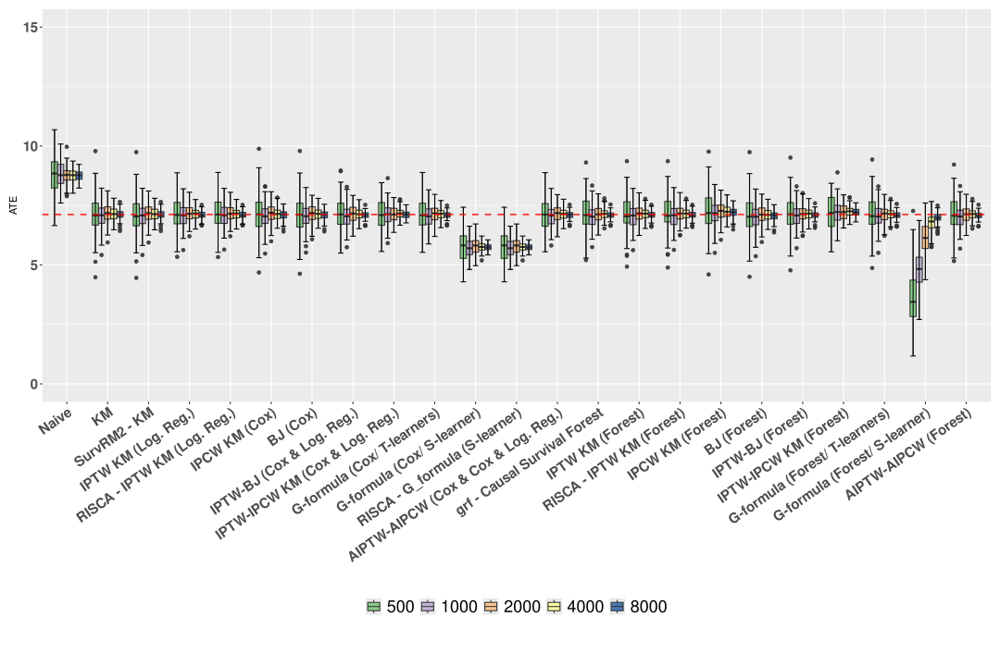
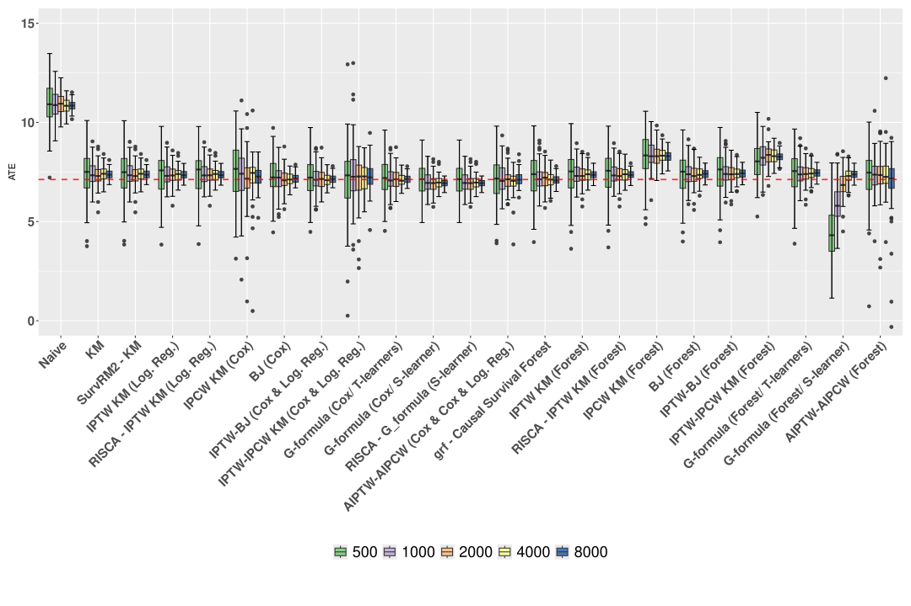
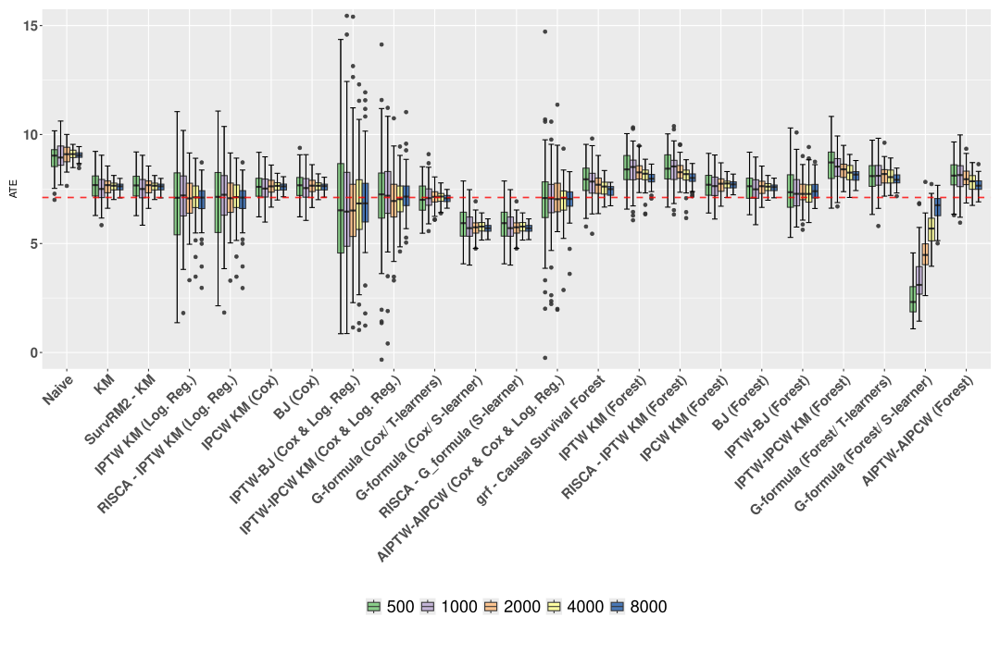

Restricted Mean Survival Time, Randomized Control Trial, Observational Study, Censoring
Status
Abstract
Causal survival analysis combines survival analysis and causal inference to evaluate the effect of a treatment or intervention on a time-to-event outcome, such as survival time. It offers an alternative to relying solely on Cox models for assessing these effects. In this paper, we present a comprehensive review of estimators for the average treatment effect measured with the restricted mean survival time, including regression-based methods, weighting approaches, and hybrid techniques. We investigate their theoretical properties and compare their performance through extensive numerical experiments. Our analysis focuses on the finite-sample behavior of these estimators, the influence of nuisance parameter selection, and their robustness and stability under model misspecification. By bridging theoretical insights with practical evaluation, we aim to equip practitioners with both state-of-the-art implementations of these methods and practical guidelines for selecting appropriate estimators for treatment effect estimation. Among the approaches considered, G-formula two-learners, AIPCW-AIPTW, Buckley-James estimators, and causal survival forests emerge as particularly promising.
1 Introduction
1.1 Context and motivations
Causal survival analysis is a growing field that integrates causal inference (D. B. Rubin 1974; Hernán and Robins 2010) with survival analysis (Kalbfleisch and Prentice 2002) to evaluate the impact of treatments on time-to-event outcomes, while accounting for censoring situations where only partial information about an event’s occurrence is available.
Being a relatively new domain, the existing literature, though vast, remains fragmented. As a result, a clear understanding of the theoretical properties of various estimators is challenging to obtain. Moreover, the implementation of proposed methods is limited, leaving researchers confronted with a range of available estimators and the need to make numerous methodological decisions. There is a pressing need for a comprehensive survey that organizes the available methods, outlines the underlying assumptions, and provides an evaluation of estimator performance — particularly in finite sample settings. Such a survey also has the potential to help identify remaining methodological challenges that need to be addressed. This need becomes increasingly urgent as causal survival analysis gains traction in both theoretical and applied domains. For instance, its applications to external control arm analyses are particularly relevant in the context of single-arm clinical trials, where traditional comparator arms are unavailable. Regulatory guidelines have begun to acknowledge and support such semi-experimental approaches, reflecting the broader evolution of trial design and therapeutic innovation in precision medicine, see for instance (European Medecines Agency 2024).
By synthesizing the theoretical foundations, assumptions, and performance of various estimators, a survey on existing causal survival analysis methods would provide researchers and practitioners with the necessary tools to make informed methodological choices. This is crucial for fostering robust and reliable applications of causal survival analysis in both academic research and practical settings, where precise and valid results are paramount.
In this paper, we focus our attention to the estimation of the Restricted Mean Survival Time (RMST), a popular causal measure in survival analysis which offers an intuitive interpretation of the average survival time over a specified period. In particular, we decided to not cover the estimation of Hazard Ratio (HR), which has been prominently used but often questioned due to its potential non-causal nature (Martinussen, Vansteelandt, and Andersen 2020). Additionally, unlike the Hazard Ratio, the RMST has the desirable property of being a collapsible measure, meaning that the population effect can be expressed as a weighted average of subgroup effects, with positive weights that sum to one (Huitfeldt, Stensrud, and Suzuki 2019).
1.2 Definition of the estimand: the RMST
We set the analysis in the potential outcome framework, where a patient, described by a vector of covariates X \in \mathbb{R}^p, either receives a treatment (A=1) or is in the control group (A=0). The patient will then survive up to a certain time T(0) \in \mathbb{R}^+ in the control group, or up to a time T(1)\in \mathbb{R}^+ in the treatment group. In practice, we cannot simultaneously have access to T(0) and T(1), as one patient is either treated or control, but only to T defined as follows:
Assumption. (Stable Unit Treatment Value Assumption: SUTVA)
T = AT(1) + (1-A)T(0).
\tag{1}
Due to potential censoring, the outcome T is not completely observed. The most common form of censoring is right-censoring (also known as type II censoring), which occurs when the event of interest has not taken place by the end of the observation period, indicating that it may have occurred later if the observation had continued (Turkson, Ayiah-Mensah, and Nimoh 2021). We focus in this study on this type of censoring only and we assume that we observe \tilde T= T \wedge C = \min(T,C) for some censoring time C \in \mathbb{R}^+. When an observation is censored, the observed time is equal to the censoring time.
We also assume that we know whether an outcome is censored or not. In other words, we observe the censoring status variable \Delta = \mathbb{I}\{T \leqslant C\}, where \mathbb{I}\{\cdot\} is the indicator function. \Delta is 1 if the true outcome is observed, and 0 if it is censored.
We assume observing a n-sample of variables (X,A,\widetilde T,\Delta) stemming from an n-sample of the partially unobservable variables (X,A,T(0),T(1),C). A toy exemple of such data is given in Table 1.
Table 1: Example of a survival dataset. In practice, only X,A,\widetilde T and \Delta are observed.
ID
Covariates
Treatment
Censoring
Status
Potential outcomes
True outcome
Observed outcome
i
X_{1}
X_{2}
X_{3}
A
C
\Delta
T(0)
T(1)
T
\tilde{T}
1
1
1.5
4
1
?
1
?
200
200
200
2
5
1
2
0
?
1
100
?
100
100
3
9
0.5
3
1
200
0
?
?
?
200
Our aim is to estimate the Average Treatment Effect (ATE) defined as the difference between the Restricted Mean Survival Time of the treated and controls (Royston and Parmar 2013).
Definition 1 (Causal effect: Difference between Restricted Mean Survival Time)
\theta_{\mathrm{RMST}} = \mathbb{E}\left[T(1) \wedge \tau - T(0) \wedge \tau\right],
where a \wedge b := \min(a,b) for a,b \in \mathbb{R}.
We define the survival functions S^{(a)}(t):=\mathbb{P}(T(a) > t) for a \in \{0,1\}, i.e., the probability that a treated or non-treated individual will survive beyond a given time t. Likewise, we let S(t) := \mathbb{P}(T >t), and S_C(t) := \mathbb{P}(C > t). We also let G(t) := \mathbb{P}(C \geqslant t) be the left-limit of the survival function S_C. Because T(a) \wedge \tau are non-negative random variables, one can easily express the restricted mean survival time using the survival functions:
Consequently, \theta_{\mathrm{RMST}} can be interpreted as the mean difference between the survival function of treated and control until a fixed time horizon \tau. A difference in RMST \theta_{\mathrm{RMST}} = 10 days with \tau=200 means that, on average, the treatment increases the survival time by 10 days at 200 days. We give a visual interpretation of RMST in Figure 1.
Figure 1: Plot of the estimated survival curves on synthetic toy-data. The \theta_{\mathrm{RMST}} at \tau=50 corresponds to the yellow shaded area between the two survival curves. The curves have been estimated using Kaplan-Meier estimator, see Section 2.1.
Although the present work focuses on the estimation of the difference in RMST, we would like to stress that the causal effect can be assessed through other measures, such as for instance the difference of the survival functions
\theta_{\mathrm{SP}} := S^{(1)}(\tau) - S^{(0)}(\tau)
for some time \tau, see for instance (Ozenne et al. 2020). As mentionned in Section 1.1, another widely used measure (though not necessarily causal) is the hazards ratio, defined as
\theta_{\mathrm{HR}} := \frac{\lambda^{(1)}(\tau)}{\lambda^{(0)}(\tau)},
where the hazard function \lambda^{(a)} is defined as
\lambda^{(a)}(t) := \lim_{h \to 0^+}\frac{\mathbb{P}(T(a) \in [t,t+j)|T(a) \geqslant t)}{h}.
in a continuous setting, or as \lambda^{(a)}(t) := \mathbb{P}(T(a) = t|T(a) \geqslant t) when the survival times are discrete. The hazard functions and the survival functions are linked through the identities
S^{(a)}(t) = \exp\left(-\Lambda^{(a)}(t)\right) \quad \text{where} \quad \Lambda^{(a)}(t) := \int_0^t \lambda^{(a)}(s)\mathop{}\!\mathrm{d}s,
\tag{3} in the continuous case. The functions \Lambda^{(a)} are call the cumulative hazard functions. In the discrete case, we have in turn
S^{(a)}(t) = \prod_{t_k \leqslant t} \left(1-\lambda^{(a)}(t_k)\right),
\tag{4} where \{t_1,\dots,t_K\} are the atoms of T^{(a)}. These hazard functions are classically used to model the survival times and the censoring times, see Section 2.2.1.
1.3 Organisation of the paper
In this paper, we detail the minimal theoretical framework that allows the analysis of established RMST estimators in the context of both Randomized Controlled Trials (Section 2) and observational data (Section 3). We give their statistical properties (consistency, asymptotic normality) along with proofs when possible. We then conduct in Section 5 a numerical study of these estimators through simulations under various experimental conditions, including independent and conditionally independent censoring and correct and incorrect model specifications. We conclude in Section 6 with practical recommendations on estimator selection, based on criteria such as asymptotic behavior, computational complexity, and efficiency.
1.4 Notations
We provide in Table 2 a summary of the notation used throughout the paper.
Table 2: Summary of the notations.
Symbol
Description
X
Covariates
A
Treatment indicator (A=1 for treatment, A=0 for control)
T
Survival time
T(a), a \in \{0,1\}
Potential survival time respectively with and without treatment
S^{(a)},a \in \{0,1\}
Survival function S^{(a)}(t) =\mathbb{P}(T(a) > t) of the potential survival times
\lambda^{(a)},a \in \{0,1\}
Hazard function \lambda^{(a)}(t) =\lim_{h \to 0^+}\mathbb{P}(T(a) \in [t,t+h) |T(a)\geqslant t)/h of the potential survival times
\Lambda^{(a)},a \in \{0,1\}
Cumulative hazard function of the potential survival times
C
Censoring time
S_C
Survival function S_C(t) =\mathbb{P}(C > t) of the censoring time
G
Left-limit of the survival function G(t) =\mathbb{P}(C \geqslant t) of the censoring time
\widetilde{T}
Observed time (T \wedge C)
\Delta
Censoring status \mathbb{I}\{T \leqslant C \}
\Delta^{\tau}
Censoring status of the restricted time \Delta^{\tau} = \max\{\Delta, \mathbb{I}\{\widetilde{T} \geqslant\tau\}\}
\{t_{1},t_{2},\dots,t_{K}\}
Discrete times
e(x)
Propensity score \mathbb{E} [A| X = x]
\mu(x,a), a \in \{0,1\}
\mathbb{E}[T \wedge \tau \mid X=x,A=a ]
S(t|x,a), a \in \{0,1\}
Conditional survival function, \mathbb{P}(T > t | X=x, A =a).
\lambda^{(a)}(t|x), a \in \{0,1\}
Conditional hazard functions of the potential survival times
G(t|x,a), a \in \{0,1\}
left-limit of the conditional survival function of the censoring \mathbb{P}(C\geqslant t|X=x,A=a)
Q_{S}(t|x,a), a \in \{0,1\}
\mathbb{E}[T \wedge \tau \mid X=x,A=a, T \wedge \tau>t]
2 Causal survival analysis in Randomized Controlled Trials
Randomized Controlled Trials (RCTs) are the gold standard for establishing the effect of a treatment on an outcome, because treatment allocation is controlled through randomization, which ensures (asymptotically) the balance of covariates between treated and controls, and thus avoids problems of confounding between treatment groups. The core assumption in a classical RCT is the random assignment of the treatment (D. B. Rubin 1974).
Assumption. (Random treatment assignment) There holds:
A \perp\mkern-9.5mu\perp T(0),T(1),X
\tag{5}
We also assume that there is a positive probability of receiving the treatment, which we rephrase under the following assumption.
However, Equation 7 still depends on T, which remains only partially observed due to censoring. To ensure that censoring does not compromise the identifiability of treatment effects, we must impose certain assumptions on the censoring process, standards in survival analysis, namely, independent censoring and conditionally independent censoring. These assumptions lead to different estimation approaches. We focus on two strategies: those that aim to directly estimate \mathbb{E}[T \wedge \tau | A = a] directly (e.g., through censoring-unbiased transformations, see Section 2.2), and those that first estimate the survival curves to derive RMST via Equation 2 (such as the Kaplan-Meier estimator and all its variants, see the next Section).
2.1 Independent censoring: the Kaplan-Meier estimator
In a first approach, one might assume that the censoring times are independent from the rest of the variables.
Assumption. (Independent censoring)
C \perp\mkern-9.5mu\perp T(0),T(1),X,A.
\tag{8}
Under Equation 8, subjects censored at time t are representative of all subjects who remain at risk at time t. Figure 2 represents the causal graph when the study is randomized and outcomes are observed under independent censoring.
Figure 2: Causal graph in RCT survival data with independent censoring.
We also assume that there is no almost-sure upper bound on the censoring time before \tau, which we rephrase under the following assumption.
Assumption. (Positivity of the censoring process) There exists \varepsilon> 0 such that
G(t) \geqslant\varepsilon\quad \text{for all} \quad t \in [0,\tau).
\tag{9}
If indeed it was the case that \mathbb{P}(C < t) = 1 for some t < \tau, then we would not be able to infer anything on the survival function on the interval [t,\tau] as all observation times \widetilde T_i would be in [0,t] almost surely. In practice, adjusting the threshold time \tau can help satisfy the positivity assumption. For instance, in a clinical study, if a subgroup of patients has zero probability of remaining uncensored at a given time, \tau can be modified to ensure that participants have a feasible chance of remaining uncensored up to the revised threshold.
The two Assumptions 8 and 9 together allow the distributions of T(a) to be identifiable, in the sense that there exists an identity that expresses S^{(a)} as a function of the joint distribution of (\widetilde T,\Delta,A=a), see for instance Ebrahimi, Molefe, and Ying (2003) for such a formula in a non-causal framework. This enables several estimation strategies, the most well-known being the Kaplan-Meier product-limit estimator.
To motivate the definition of the latter and explicit the identifiability identity, we set the analysis in the discrete case. We let \{t_k\}_{k \geqslant 1} be a set of positive and increasing times and assume that T \in \{t_k\}_{k \geqslant 1} almost surely. Then for any t \in [0,\tau], it holds, letting t_0 = 0 by convention, thanks to Equation 4,
Using Assumptions 8 and 9, we find that
\frac{\mathbb{P}(T = t_{k}, A=a)}{\mathbb{P}(T \geqslant t_{k},A=a)} = \frac{\mathbb{P}(T = t_{k},C \geqslant t_k,A=a)}{\mathbb{P}(T \geqslant t_{k}, C\geqslant t_k,A=a)} = \frac{\mathbb{P}(\widetilde T = t_{k}, \Delta = 1,A=a)}{\mathbb{P}( \widetilde T \geqslant t_{k},A=a)},
\tag{10} yielding the final identity
S(t|A=a) = \prod_{t_k \leqslant t} \left(1-\frac{\mathbb{P}(\widetilde T = t_{k}, \Delta = 1,A=a)}{\mathbb{P}( \widetilde T \geqslant t_{k},A=a)}\right).
\tag{11} Notice that the right hand side only depends on the distribution of the observed tuple (A,\widetilde T,\Delta). This last equation suggests in turn to introduce the quantities
D_k(a) := \sum_{i=1}^n \mathbb{I}(\widetilde T_i = t_k, \Delta_i = 1, A=a) \quad\text{and}\quad N_k(a) := \sum_{i=1}^n \mathbb{I}(\widetilde T_i \geqslant t_k, A=a),
\tag{12} which correspond respectively to the number of deaths D_k(a) and of individuals at risk N_k(a) at time t_k in the treated group (a=1) or in the control group (a=0).
Definition 2 (Kaplan-Meier estimator, Kaplan and Meier (1958)) With D_k(a) and N_k(a) defined in Equation 12, we let
The assiociated RMST estimator is then simply defined as
\widehat{\theta}_{\mathrm{KM}} = \int_{0}^{\tau}\widehat{S}_{KM}(t|A=1)-\widehat{S}_{KM}(t|A=0)dt.
\tag{14} The Kaplan-Meier estimator is the Maximum Likelihood Estimator (MLE) of the survival functions, see for instance Kaplan and Meier (1958). Furthermore, because D_k(a) and N_k(a) are sums of i.i.d. random variables, the Kaplan-Meier estimator inherits some convenient statistical properties.
Proposition 1 Under Assumptions 1, 5, 6, 8 and 9, and for all t \in [0,\tau], the estimator \widehat S_{\mathrm{KM}}(t|A=a) of S^{(a)}(t) is strongly consistent and admits the following bounds for its bias:
0 \leqslant S^{(a)}(t) - \mathbb{E}[\widehat S_\mathrm{KM}(t|A=a)] \leqslant O(\mathbb{P}(N_k(a) = 0)),
where k is the greatest time t_k such that t \geqslant t_k.
Gill (1983) gives a more precise lower-bound on the bias in the case of continuous distributions, which was subsequently refined by Zhou (1988). The bound we give, although slightly looser, still exhibits the same asymptotic regime. In particular, as soon as S^{(a)}(t) > 0 (and Assumption 9 holds), then the bias decays exponentially fast towards 0. We give in Section 7.1 a simple proof of our bound is our context.
Proposition 2 Under Assumptions 1, 5, 6, 8 and 9, and for all t \in [0,\tau], \widehat S_{\mathrm{KM}}(t|A=a) is asymptotically normal and \sqrt{n}\left(\widehat S_{\mathrm{KM}}(t|A=a) - S^{(a)}(t)\right) converges in distribution towards a centered Gaussian of variance
V_{\mathrm{KM}}(t|A=a) := S^{(a)}(t)^2 \sum_{t_k \leqslant t} \frac{1-s_k(a)}{s_k(a) r_k(a)},
where s_k(a) = S^{(a)}(t_k)/S^{(a)}(t_{k-1}) and r_k(a) = \mathbb{P}(\widetilde T \geqslant t_k, A=a).
The proof of Proposition 2 can be found in Section 7.1. Because D_k(a)/N_k(a) is a natural estimator of 1-s_k(a) and, \frac{1}{n} N_k(a) a natural estimator for r_k(a), the asymptotic variance of the Kaplan-Meier estimator can be estimated with the so-called Greenwood formula, as already derived heuristically in Kaplan and Meier (1958):
We finally mention that the KM estimator as defined in Definition 2 still makes sense in a non-discrete setting, and one only needs to replace the fixed grid \{t_k\} by the values at which we observed an event (\widetilde T_i = t_k, \Delta_i =1). We refer to Breslow and Crowley (1974) for a study of this estimator in the continuous case and to Aalen, Borgan, and Gjessing (2008), Sec 3.2 for a general study of the KM estimator through the prism of point processes.
2.2 Conditionally independent censoring
An alternative hypothesis in survival analysis that relaxes the assumption of independent censoring is conditionally independent censoring, also refered sometimes as informative censoring. It allows to model more realistic censoring processes, in particular in situations where there are reasons to believe that C may be dependent from A and X (for instance, if patient is more like to leave the study when treated because of side-effects of the treatment).
Under Equation 16, subjects within a same stratum defined by X=x and A=a have equal probability of censoring at time t, for all t. In case of conditionally independent censoring, we also need to assume that all subjects have a positive probability to remain uncensored at their time-to-event.
Assumption. (Positivity / Overlap for censoring) There exists \varepsilon> 0 such that for all t\in [0,\tau), it almost surely holds
G(t|A,X) \geqslant\varepsilon.
\tag{17}
Figure 3 represents the causal graph when the study is randomized with conditionally independent censoring.
Figure 3: Causal graph in RCT survival data with dependent censoring.
Under dependent censoring, the Kaplan-Meier estimator as defined in Definition 2 can fail to estimate survival, in particular because Equation 10 does not hold anymore. Alternatives include plug-in G-formula estimators (Section 2.2.1) and unbiased transformations (Section 2.2.2).
2.2.1 The G-formula and the Cox Model
Because the censoring is now independent from the potential outcome conditionally to the covariates, it would seem natural to model the response of the survival time conditionally to these covariates too:
\mu(x,a) := \mathbb{E}[T \wedge \tau |X = x, A = a].
Building on Equation 7, one can express the RMST as a function of \mu: \begin{align*}
\theta_{\mathrm{RMST}} = \mathbb{E}\left[\mathbb{E}[T \wedge \tau |X, A = 1]\right] - \mathbb{E}\left[ T \wedge \tau|X, A= 0]\right] = \mathbb{E}[\mu(X,1)-\mu(X,0)].
\end{align*}
An estimator \widehat\mu of \mu would then straightforwardly yield an estimator of the difference in RMST through the so-called G-formula plug-in estimator:
We would like to stress that a G-formula approach works also in a observational context as the one introduced in Section 3.2. However, because the estimation strategies presented in the next sections relies on estimating nuisance parameters, and that this latter task is often done in the same way as we estimate the conditional response \mu, we decided to not delay the introduction of the G-formula any further, and we present below a few estimation methods for \mu. These methods are sub-divised in two categories: T-learners, where \mu(\cdot,1) is estimated separately from \mu(\cdot,0), and _S-learners, where \widehat\mu is obtained by fitting a single model based on covariates (X,A).
Cox’s Model. There are many ways to model \mu in a survival context, the most notorious of which being the Cox proportional hazards model (Cox 1972). It relies on a semi-parametric modelling the conditional hazard functions \lambda^{(a)}(t|X) as
\lambda^{(a)}(t|X) = \lambda_0^{(a)}(t) \exp(X^\top\beta^{(a)}),
where \lambda^{(a)}_0 is a baseline hazard function and \beta^{(a)} has the same dimension as the vector of covariate X. The conditional survival function then take the simple form (in the continuous case)
S^{(a)}(t|X) = S^{(a)}_0(t)^{\exp(X^\top\beta^{(a)})},
where S^{(a)}_0(t) is the survival function associated with \lambda_0^{(a)}. The vector \beta^{(a)} is classically estimated by maximizing the so-called partial likelihood function as introduced in the original paper of Cox (1972):
\mathcal{L}(\beta) := \prod_{\Delta_i = 1} \frac{\exp(X_i^\top \beta)}{\displaystyle\sum_{\widetilde T_j \geqslant\widetilde T_i} \exp(X_j^\top \beta)},
while the cumulative baseline hazard function can be estimated through the Breslow’s estimator (Breslow 1974):
\widehat\Lambda_0^{(a)}(t) = \sum_{\Delta_i = 1, \widetilde T_i \leqslant t} \frac{1}{\displaystyle\sum_{\widetilde T_j \geqslant\widetilde T_i} \exp(X_j^\top \widehat\beta^{(a)})}
where \widehat\beta^{(a)} is a partial likelihood maximizer. One can show that (\widehat\beta^{(a)},\widehat\Lambda_0^{(a)}) is the MLE of the true likelihood, when \widehat\Lambda_0^{(a)} is optimized over all step fonctions of the form
\Lambda_0(t) := \sum_{\Delta_i=1} h_i, \quad h_i \in \mathbb{R}^+.
This fact was already hinted in the original paper by Cox and made rigorous in many subsequent papers, see for instance Fan, Feng, and Wu (2010). Furthermore, if the true distribution follows a Cox model, then both \widehat\beta^{(a)} and \widehat\Lambda_0^{(a)} are strongly consistent and asymptotically normal estimator of the true parameters \beta^{(a)} and \Lambda^{(a)}, see Kalbfleisch and Prentice (2002), Sec 5.7. When using a T-learner approach, one simply finds (\widehat\beta^{(a)},\widehat\Lambda_0^{(a)}) for a \in \{0,1\} by considering the control group and the treated group separately. When using a S-learner approach, the treatment status A becomes a covariate a the model becomes
\lambda(t|X,A) = \lambda_0(t) \exp(X^\top\beta+\alpha A).
\tag{19} for some \alpha \in \mathbb{R}. One main advantage of Cox’s model is that it makes it very easy to interpret the effect of a covariate on the survival time. If indeed \alpha > 0, then the treatment has a negative effect of the survival times. Likewise, if \beta_i >0, then the i-th coordinate of X has a negative effect as well. We finally mention that the hazard ratio takes a particularly simple form under the later model since
\theta_{\mathrm{HR}} = e^{\alpha}.
In particular, it does not depends on the time horizon \tau, and is thus sometimes refered to as proportional hazard. Figure 4 illustrates the estimation of the difference in Restricted Mean Survival Time using G-formula with Cox models.
Figure 4: Illustration of the G-formula for estimating \theta_{\mathrm{RMST}} in an RCT when only one covariate X_1 influences the outcome.
Weibull Model. A popular parametric model for survival is the Weibull Model, which amounts to assume that
\lambda^{(a)}(t|X) = \lambda_0^{(a)}(t) \exp(X^\top\beta)
where \lambda_0^{(a)}(t) is the instant hazard function of a Weibull distribution, that is to say a function proportional to t^{\gamma} for some shape parameter \gamma >0. We refer to Zhang (2016) for a study of this model.
Survival Forests. On the non-parametric front, we mention the existence of survival forests (Ishwaran et al. 2008).
2.2.2 Censoring unbiased transformations
Censoring unbiased transformations involve applying a transformation to T. Specifically, we compute a new time T^* of the form
T^* := T^*(\widetilde T,X,A,\Delta) = \begin{cases}
\phi_0(\widetilde T \wedge \tau,X,A) \quad &\text{if} \quad \Delta^\tau = 0, \\
\phi_1(\widetilde T \wedge \tau,X,A) \quad &\text{if} \quad \Delta^\tau = 1.
\end{cases}
\tag{20} for two wisely chosen transformations \phi_0 and \phi_1, and where \Delta^{\tau}:=\mathbb{I}\{T \wedge \tau \leqslant C\} = \Delta+(1-\Delta)\mathbb{I}(\widetilde T \geqslant\tau)
\tag{21} is the indicator of the event where the individual is either uncensored or censored after time \tau. The idea behind the introduction of \Delta^\tau is that because we are only interested in computed the expectation of the survival time thresholded by \tau, any censored observation coming after time \tau can in fact be considered as uncensored (\Delta^\tau = 1).
A censoring unbiased transformation T^* shall satisfy: for a \in \{0,1\}, it holds
\mathbb{E}[T^*|A=a,X] = \mathbb{E}[T(a) \wedge \tau |X] \quad\text{almost surely.}
\tag{22} A notable advantage of this approach is that it enables the use of the full transformed dataset (X_i,A_i,T^*_i) as if no censoring occured. Because it holds
\mathbb{E}[\mathbb{E}[T^*|A=a,X]] = \mathbb{E}\left[\frac{\mathbb{I}\{A=a\}}{\mathbb{P}(A=a)} T^*\right],
\tag{23} there is a very natural way to derive an estimator of the difference in RMST from any censoring unbiased transformation T^* as:
\widehat\theta = \frac1n\sum_{i=1}^n \left(\frac{A_i}{\pi}-\frac{1-A_i}{1-\pi} \right) T^*_i
\tag{24} where \pi = \mathbb{P}(A=1) \in (0,1) by Assumption 6 and where T^*_i = T^*(\widetilde T_i,X_i,A_i,\Delta_i). We easily get the following result.
Proposition 3 Under Assumptions 5 and 6, the estimator \widehat\theta derived as in Equation 24 from a square integrable censoring unbiased transformations satisfying Equation 22 is an unbiased, strongly consistent, and asymptotically normal estimator of the difference in RMST.
Square integrability will be ensured any time the transformnation is bounded, which will always be the case of the ones considered in this work. It is natural in a RCT setting to assume that probability of being treated \pi is known. If not, it is usual to replace \pi by its empirical counterpart \widehat\pi = n_1/n where n_a = \sum_{i} \mathbb{1}\{A=a\}. The resulting estimator takes the form
\widehat\theta = \frac1{n_1}\sum_{A_i = 1} T^*_i - \frac1{n_0}\sum_{A_i = 0} T^*_i.
\tag{25} Note however that this estimator is slighlty biased due to the estimation of \pi (see for instance Colnet et al. (2022), Lemma 2), but it is still strongly consistent and asymptotically normal, and its biased is exponentially small in n.
Proposition 4 Under Assumptions 5 and 6, the estimator \widehat\theta derived as in Equation 25 from a square integrable censoring unbiased transformations satisfying Equation 22 is a strongly consistent, and asymptotically normal estimator of the difference in RMST.
The two most popular transformations are Inverse-Probability-of-Censoring Weighting (Koul, Susarla, and Ryzin (1981)) and Buckley-James (Buckley and James (1979)), both illustrated in Figure 5 and detailed below. In the former, only non-censored observations are considered and they are weighted while in the latter, censored observations are imputed with an estimated survival time.
Figure 5: Illustration of Inverse-Probability-of-Censoring and Buckley-James transformations.
The Inverse-Probability-of-Censoring Weighted transformation
The Inverse-Probability-of-Censoring Weighted (IPCW) transformation, introduced by (Koul, Susarla, and Ryzin (1981)) in the context of censored linear regression, involves discarding censored observations and applying weights to uncensored data. More precisely, we let
T^*_{\mathrm{IPCW}}=\frac{\Delta^\tau}{G(\widetilde{T}\wedge \tau|X,A)} \widetilde{T} \wedge \tau,
\tag{26} where we recall that G(t|X,A) :=\mathbb{P}(C \geqslant t|X,A) is the left limit of the conditional survival function of the censoring. This estimator assigns higher weights to uncensored subjects within a covariate group that is highly prone to censoring, thereby correcting for conditionally independent censoring and reducing selection bias (Howe et al. 2016).
Proposition 5 Under Assumptions 1, 5, 6, 16 and 17, the IPCW transform 26 is a censoring unbiased transformation in the sense of Equation 22.
The proof of Proposition 5 is in Section 7.2. The IPCW depends on the unknown conditional survival function of the censoring G(\cdot|X,A), which thus needs to be estimated. Estimating conditional censoring or the conditional survival function can be approached similarly, as both involve estimating a time—whether for survival or censoring. Consequently, we can use semi-parametric methods, such as the Cox model, or non-parametric approaches like survival forests, and we refer to Section 2.2.1 for a development on these approaches. Once an estimator \widehat G(\cdot|A,X) of the later is provided, one can construct an estimator of the difference in RMST based on Equation 24 or Equation 25
\widehat\theta_{\mathrm{IPCW}} = \frac1n \sum_{i=1}^n \left(\frac{A_i}{\pi}-\frac{1-A_i}{1-\pi}\right) T^*_{\mathrm{IPCW},i},
\tag{27} or
\widehat\theta_{\mathrm{IPCW}} = \frac1{n_1}\sum_{A_i = 1} T^*_{\mathrm{IPCW},i} - \frac1{n_0}\sum_{A_i = 0} T^*_{\mathrm{IPCW},i}.
\tag{28} where we recall that n_a := \#\{i \in [n]~|~A_i=a\}. By Proposition 3, Proposition 4 and Proposition 5, we easily deduce that \widehat\theta_{\mathrm{IPCW}} is asymptotically consistent as soon as \widehat G is.
Corollary 1 Under Assumptions1, 5, 6, 16 and 17, if \widehat G is uniformly weakly (resp. strongly) consistent then so is \widehat\theta_{\mathrm{IPCW}}, either as in defined in Equation 27 or in Equation 28.
This result simply comes from the fact that \widehat\theta_{\mathrm{IPCW}} depends continuously on \widehat G and that G is lower-bounded (Assumption 17). Surprisingly, we found limited use of this estimator in the literature, beside its first introduction in Koul, Susarla, and Ryzin (1981). This could potentially be explained by the fact that, empirically, we observed that this estimator is highly variable. Consequently, we do not explore its properties further and will not include it in the numerical experiments. A related and more popular estimator is the IPCW-Kaplan-Meier, defined as follows.
Definition 3 (IPCW-Kaplan-Meier) We let again \widehat G(\cdot|X,A) be an estimator of the (left limit of) the conditional censoring survival function and we introduce
be the weight-corrected numbers of deaths and of individual at risk at time t_k. The IPCW version of the KM estimator is then defined as:
\begin{aligned}
\widehat{S}_{\mathrm{IPCW}}(t | A=a) &= \prod_{t_k \leqslant t}\left(1-\frac{D_k^{\mathrm{IPCW}}(a)}{N_k^{\mathrm{IPCW}}(a)}\right).
\end{aligned}
Note that the quantity \pi is not present in the definition of D_k^{\mathrm{IPCW}}(a) and N_k^{\mathrm{IPCW}}(a) because it would simply disappear in the ratio D_k^{\mathrm{IPCW}}(a)/N_k^{\mathrm{IPCW}}(a). The subsequent RMST estimator then take the form
\widehat{\theta}_{\mathrm{IPCW-KM}} = \int_{0}^{\tau}\widehat{S}_{\mathrm{IPCW}}(t|A=1)-\widehat{S}_{\mathrm{IPCW}}(t|A=0)dt.
\tag{29} Like before for the classical KM estimator, this new reweighted KM estimator enjoys good statistical properties.
Proposition 6 Under Assumptions 1, 5, 6, 16 and 17, and for all t \in [0,\tau], the oracle estimator S^*_{\mathrm{IPCW}}(t|A=a) defined as in Definition 3 with \widehat G = G is a stronlgy consistent and asymptotically normal estimator of S^{(a)}(t) .
The proof of Proposition 6 can be found in Section 7.2. Because the evaluation of N_k^{\textrm{IPCW}}(a) now depends on information gathered after time t_k (through the computation of the weights), the previous proofs on the absence of bias and on the derivation of the asymptotic variance unfortunately do not carry over in this case. Whether its bias is exponentially small and whether the asymptotic variance can be derived in a closed form are questions left open. We are also not aware of any estimation schemes for the asymptotic variance in this context. In the case where we do not have access to the oracle survival function G, we can again still achieve consistency if the estimator \widehat G(\cdot|A,X) that we provide is consistent.
Corollary 2 Under Assumptions 1, 5, 16 and 17, if \widehat G is uniformly weakly (resp. strongly) consistent then so is \widehat S_{\mathrm{IPCW}}(t|A=a).
This corollary ensures that the corresponding RMST estimator defined in Equation 29 will be consistent as well.
The Buckley-James transformation
One weakness of the IPCW transformation is that it discards all censored data. The Buckley-James (BJ) transformation, introduced by (Buckley and James (1979)), takes a different path by leaving all uncensored values untouched, while replacing the censored ones by an extrapolated value. Formally, it is defined as follows:
where, for t \leqslant\tau, Q_S(t|X,A) :=\mathbb{E}[T \wedge \tau | X,A,T \wedge \tau > t]= \frac{1}{S(t|X,A)}\int_{t}^{\tau} S(u|X,A) \mathop{}\!\mathrm{d}u where S(t|X,A=a) := \mathbb{P}(T(a) > t|X) is the conditional survival function. We refer again to Figure 5 for a diagram of this transformation.
Proposition 7 Under Assumptions 1, 5, 16 and 17, the BJ transform 30 is a censoring unbiased transformation in the sense of Equation 22.
The proof of Proposition 7 can be found in Section 7.2. Again, the BJ transformation depends on a nuisance parameter (here Q_S(\cdot|X,A)) that needs to be estimated. We again refer to Section 2.2.1 for a brief overview of possible estimation strategies for Q_S. Once provided with an estimator \widehat Q_S(\cdot|A,X), a very natural estimator of the RMST based on the BJ transformation and on Equation 24 or Equation 25 would be
\widehat\theta_{\mathrm{BJ}} = \frac1n \sum_{i=1}^n \left(\frac{A_i}{\pi}-\frac{1-A_i}{1-\pi}\right) T^*_{\mathrm{BJ},i},
\tag{31} or
\widehat\theta_{\mathrm{BJ}} = \frac1{n_1} \sum_{A_i=1} T^*_{\mathrm{BJ},i}-\frac1{n_0} \sum_{A_0=1} T^*_{\mathrm{BJ},i}.
\tag{32} Like for the IPCW transformation, the BJ transformation yields a consistent estimate of the RMST as soon as the model is well-specified.
Corollary 3 Under Assumptions 1, 5, 16 and 17, if \widehat Q_S is uniformly weakly (resp. strongly) consistent then so is \widehat\theta_{\mathrm{BJ}} defined as in Equation 31 or Equation 32.
The proof is again a mere application of Propositions 3, 4 and 7, and relies on the continuity of S \mapsto Q_S. The BJ transformation is considered as the best censoring transformation of the original response in the following sense.
Theorem 1 For any transformation T^* of the form 20, it holds
\mathbb{E}[(T^*_{\mathrm{BJ}}-T \wedge \tau)^2] \leqslant\mathbb{E}[(T^*-T \wedge \tau)^2].
This result is stated in Fan and Gijbels (1994) but without a proof. We detail it in Section 7.2 for completeness.
2.2.3 Augmented corrections
The main disadvantage of the two previous transformations is that they heavily rely on the specification of good estimator \widehat G (for IPCW) or \widehat S (for BJ). In order to circumvent this limitation, D. Rubin and Laan (2007) proposed the following transformations, whose expression is based on theory of semi-parametric estimation developed in Laan and Robins (2003),
T^*_\mathrm{DR} = \frac{\Delta^\tau \widetilde T\wedge \tau}{G(\widetilde T \wedge \tau|X,A)} + \frac{(1-\Delta^\tau)Q_S(\widetilde T \wedge \tau |X,A)}{G(\widetilde T \wedge \tau |X,A)}- \int_0^{\widetilde T \wedge \tau} \frac{Q_S(t|X,A)}{G(t|X,A)^2} \mathop{}\!\mathrm{d}\mathbb{P}_C(t|X,A),
\tag{33} where \mathop{}\!\mathrm{d}\mathbb{P}_C(t|X,A) is the distribution of C conditional on the covariates X and A. We stress that this distribution is entirely determined by the G(\cdot|X,A), so that this transformation only depends on the knowledge of both conditional survival functions G and S, will be thus sometimes denoted T^*_\mathrm{DR}(G,S) to underline this dependency. This transformation is not only a censoring unbiased transform in the sense of Equation 22, but is also doubly robust in the following sense.
Proposition 8 We let F,R be two conditional survival functions. Under Assumptions 1, 5, 6, 16 and 17, if F also satisfies Assumption 17, and if F(\cdot|X,A) is absolutely continuous wrt G(\cdot|X,A), then the transformation T^*_\mathrm{DR} = T^*_\mathrm{DR}(F,R) is a censoring unbiased transformation in the sense of Equation 22 whenever F = G or R=S.
The statement and proof of this results is found in D. Rubin and Laan (2007) in the case where C and T are continuous. A careful examination of the proofs show that the proof translates straight away to our discrete setting.
3 Causal survival analysis in observational studies
Unlike RCT, observational data — such as from registries, electronic health records, or national healthcare systems — are collected without controlled randomized treatment allocation. In such cases, treated and control groups are likely unbalanced due to the non-randomized design, which results in the treatment effect being confounded by variables influencing both the survival outcome T and the treatment allocation A. To enable identifiability of the causal effect, additional standard assumptions are needed.
Assumption. (Conditional exchangeability / Unconfoundedness) It holds
A \perp\mkern-9.5mu\perp T(0),T(1) | X
\tag{34}
Under Equation 34, the treatment assignment is randomly assigned conditionally on the covariates X. This assumption ensures that there are no unmeasured confounder as the latter would make it impossible to distinguish correlation from causality.
Assumption. (Positivity / Overlap for treatment) Letting e(X) := \mathbb{P}(A=1|X) be the propensity score, there holds
0 < e(X) <1 \quad \text{almost surely.}
\tag{35}
The Equation 35 assumption requires adequate overlap in covariate distributions between treatment groups, meaning every observation must have a non-zero probability of being treated. Because Assumption 5 does not hold anymore, neither does the previous idenfiability Equation 7. In this new context, we can write
\begin{aligned}
\theta_{\mathrm{RMST}} &= \mathbb{E}[T(1) \wedge \tau - T(0) \wedge \tau]\\
&= \mathbb{E}\left[\mathbb{E}[T(1) \wedge \tau|X] - \mathbb{E}[T(0) \wedge \tau|X] \right] && \\
&=\mathbb{E}\left[\mathbb{E}[T(1) \wedge \tau|X, A=1] - \mathbb{E}[T(0) \wedge \tau|X, A=0]\right] && \tiny\text{(unconfoundness)} \\
&= \mathbb{E}\left[\mathbb{E}[T \wedge \tau|X, A=1] - \mathbb{E}[T \wedge \tau|X, A=0]\right]. && \tiny\text{(SUTVA)}
\end{aligned}
\tag{36} In another direction, one could wish to identify the treatment effect through the survival curve as in Equation 2:
S^{(a)}(t) = \mathbb{P}(T(a) > t) = \mathbb{E}\left[\mathbb{P}(T > t | X, A=a)\right].
\tag{37} Again, both identities still depend on the unknown quantity T and suggest two different estimation strategies. These strategies differ according to the censoring assumptions and are detailed below.
3.1 Independent censoring
Figure 6 illustrates a causal graph in observational survival data with independent censoring (Assumption 8).
Figure 6: Causal graph in observational survival data with independent censoring.
Under Assumption 8, we saw in Section 2.1 that the Kaplan-Meier estimator could conveniently handle censoring. Building on Equation 37, we can write
S^{(1)}(t) = \mathbb{E}\left[\frac{\mathbb{E}[\mathbb{I}\{A=1,T > t\}|X]}{\mathbb{E}[\mathbb{I}\{A=1\}|X]} \right]=\mathbb{E}\left[\frac{A\mathbb{I}\{T > t\}}{e(X)} \right],
which suggests to adapt the classical KM estimator by reweighting it by the propensity score. The use of propensity score in causal inference has been initially introduced by Rosenbaum and Rubin (1983) and further developed in Hirano, Imbens, and Ridder (2003). It was extended to survival analysis by Xie and Liu (2005) through the adjusted Kaplan-Meier estimator as defined below.
Definition 4 (IPTW Kaplan-Meier estimator) We let \widehat e(\cdot) be an estimator of the propensity score e(\cdot). We introduce
be the numbers of deaths and of individual at risk at time t_k, reweighted by the propensity score. The Inverse-Probability-of-Treatment Weighting (IPTW) version of the KM estimator is then defined as:
\begin{aligned}
\widehat{S}_{\mathrm{IPTW}}(t | A=a) &= \prod_{t_k \leqslant t}\left(1-\frac{D_k^{\mathrm{IPTW}}(a)}{N_k^{\mathrm{IPTW}}(a)}\right).
\end{aligned}
\tag{38}
We let S^*_{\mathrm{IPTW}}(t | A=a) be the oracle KM-estimator defined as above with \widehat e(\cdot) = e(\cdot). Although the reweighting slightly changes the analysis, the good properties of the classical KM carry on to this setting.
Proposition 9 Under Assumptions 1, 34, 35, 8 and 9 The oracle IPTW Kaplan-Meier estimator S^*_{\mathrm{IPTW}}(t | A=a) is a strongly consistent and asymptotically normal estimator of S^{(a)}(t).
The proof of this result simply relies again on the law of large number and the \delta-method and can be found in Section 7.3. Because now S^*_{\mathrm{IPTW}} is a continuous function of e(\cdot), and because e and 1-e are lower-bounded as per Assumptions 35, we easily derive the following corollary.
Corollary 4 Under the same assumptions as Proposition 9, if \widehat e(\cdot) satisfies \|\widehat e-e\|_{\infty} \to 0 almost surely (resp. in probability), then the IPTW Kaplan-Meier estimator \hat S_{\mathrm{IPTW}}(t | A=a) is a strongly (resp. weakly) consistent estimator of S^{(a)}(t).
The resulting RMST estimator simply takes the form:
\widehat{\theta}_{\mathrm{IPTW-KM}} = \int_{0}^{\tau}\widehat{S}_{\mathrm{IPTW}}(t|A=1)-\widehat{S}_{\mathrm{IPTW}}(t|A=0)dt.
\tag{39} which will be consistent under the same Assumptions as the previous Corollary. Note that, we are not aware of any formal results concerning the bias and the asymptotic variance of the oracle estimator S^*_{\mathrm{IPTW}}(t | A=a), and we refer to Xie and Liu (2005) for heuristics concerning these questions.
3.2 Conditional independent censoring
Under Assumptions 34 (uncounfoundedness) and 16 (conditional independent censoring), the causal effect is affected both by confounding variables and by conditional censoring. The associated causal graph is depicted in Figure 7. In this setting, one can still use the G-formula exactly as in Section 2.2.1.
A natural alternative approach is to weight the IPCW and BJ transformations from Section 2.2.2 by the propensity score to disentangle both confounding effects and censoring at the same time.
Figure 7: Causal graph in observational survival data with dependent censoring.
We mention that the G-formula approach developed in Section 2.2.1 does work in that context. In particular, Chen and Tsiatis (2001) prove consistency and asymptotic normality results for Cox estimators in a observational study, and they give an explicit formulation of the asymptotic variance as a function of the parameters of the Cox model. In the non-parametric world, Foster, Taylor, and Ruberg (2011) and Künzel et al. (2019) empirically study this estimator using survival forests, with the former employing it as a T-learner (referred to as Virtual Twins) and the latter as an S-learner.
3.2.1 IPTW-IPCW transformations
One can check that the IPCW transformation as introduced in Equation 26 is also a censoring unbiased transformation in that context.
Proposition 10 Under Assumptions 1, 34, 35, 16 and 17, the IPTW-IPCW transform 26 is a censoring unbiased transformation in the sense of Equation 22.
The proof of Proposition 10 can be found in Section 7.4. Deriving an estimator of the difference in RMST is however slightly different in that context. In particular, Equation 23 rewrites
\mathbb{E}[\mathbb{E}[T^*|X,A=1]] = \mathbb{E}\left[\frac{A}{e(X)} T^*\right],
Which in turn suggests to define
\widehat\theta_{\mathrm{IPTW-IPCW}} = \frac1n\sum_{i=1}^n \left(\frac{A}{e(X)}-\frac{1-A}{1-e(X)} \right) T^*_{\mathrm{IPCW},i}.
\tag{40}
This transformation now depends on two nuisance parameters, namely the conditional survival function of the censoring (through T^*_{\mathrm{IPCW}}) and the propensity score. Once estimators of these quantities are provided, one could look at the corresponding quantity computed with these estimators.
Proposition 11 Under Assumptions 1, 34, 35, 16 and 17, and if \widehat G(\cdot|X,A) and \widehat e (\cdot) are uniformly weakly (resp. strongly) consistent estimators, then estimator 40 defined with \widehat e and \widehat G is a weakly (resp. strongly) consistent estimator of the difference in RMST.
The proof of Proposition 11 can be found in Section 7.4. We can also use the same strategy as for the IPCW transformation and incorporate the new weights into a Kaplan-Meier estimator.
Definition 5 (IPTW-IPCW-Kaplan-Meier) We let again \widehat G(\cdot|X,A) and \widehat e(\cdot) be estimators of the conditional censoring survival function and of the propensity score. We introduce
be the weight-corrected numbers of deaths and of individual at risk at time t_k. The IPTW-IPCW version of the KM estimator is then defined as:
\begin{aligned}
\widehat{S}_{\mathrm{IPTW-IPCW}}(t | A=a) &= \prod_{t_k \leqslant t}\left(1-\frac{D_k^{\mathrm{IPTW-IPCW}}(a)}{N_k^{\mathrm{IPTW-IPCW}}(a)}\right).
\end{aligned}
The difference in RMST estimated with IPTW-IPCW-Kaplan-Meier survival curves is then simply as
Proposition 12 Under Assumptions 1, 34, 35, 16 and 17, and for all t \in [0,\tau], if the oracle estimator S^*_{\mathrm{IPTW-IPCW}}(t | A=a) defined as in Definition 5 with \widehat G(\cdot|A,X) = G(\cdot|A,X) and \widehat e = e is a strongly consistent and asymptotically normal estimator of S^{(a)}(t) .
The proof of Proposition 12 can be found in Section 7.4. Under consistency of the estimators of the nuisance parameters, the previous proposition implies that this reweighted Kaplan-Meier is a consistent estimator of the survival curve, which in turn implies consistency of \widehat{\theta}_{\mathrm{IPTW-IPCW-KM}}.
Corollary 5 Under Assumptions 1, 34, 35, 16 and 17, and for all t \in [0,\tau], if the nuisance estimators \widehat G(\cdot|A,X) and \widehat e are weakly (resp. strongly) uniformly consistent, then \widehat{S}_{\mathrm{IPTW-IPCW}}(t | A=a) is a weakly (resp. strongly) consistent estimator of S^{(a)}(t).
We are not aware of general formula for the asymptotic variances in this context. We mention nonetheless that Schaubel and Wei (2011) have been able to derive asymptotic laws in this framework in the particular case of Cox-models.
3.2.2 IPTW-BJ transformations
Like IPCW tranformation, BJ transformation is again a censoring unbiased transformation in an observational context.
Proposition 13 Under Assumptions 1, 34, 35, 16 and 17, the IPTW-BJ transform 30 is a censoring unbiased transformation in the sense of Equation 22.
The proof of Proposition 13 can be found in Section 7.4. The corresponding estimator of the difference in RMST is
\hat \theta_{\mathrm{IPTW-BJ}} = \frac1n\sum_{i=1}^n \left(\frac{A}{e(X)}-\frac{1-A}{1-e(X)} \right) T^*_{\mathrm{BJ},i}.
\tag{42}
This transformation depends on the conditional survival function S (through T^*_{\mathrm{BJ}}) and the propensity score. Consistency of the nuisance parameter estimators implies again consistency of the RMST estimator.
Proposition 14 Under Assumptions 1, 34, 35, 16 and 17, and if \widehat S(\cdot|X,A) and \widehat e (\cdot) are uniformly weakly (resp. strongly) consistent estimators, then \widehat\theta_{\mathrm{IPTW-BJ}} defined with \widehat S and \widehat e is a weakly (resp. strongly) consistent estimator of the RMST.
Building on the classical doubly-robust AIPTW estimator from causal inference (Robins, Rotnitzky, and Zhao 1994), we could incorporate the doubly-robust transformations of Section 2.2.3 to obtain a quadruply robust tranformation
\Delta^*_{\mathrm{QR}} = \Delta^*_{\mathrm{QR}}(G,S,\mu,e) := \left(\frac{A}{e(X)}-\frac{1-A}{1-e(X)}\right)(T^*_{\mathrm{DR}}(G,S)-\mu(X,A))+\mu(X,1)-\mu(X,0),
where we recall that T^*_{\mathrm{DR}} is defined in Section 2.2.3. This transformations depends on four nuisance parameters: G and S through T^*_{\mathrm{DR}}, and now the propensity score e and the conditional response \mu. This transformation doesn’t really fall into the scope of censoring unbiased transform, but it is easy to show that \Delta^*_{\mathrm{QR}} is quadruply robust in the following sense.
Proposition 15 Let F,R be two conditional survival function, p be a propensity score, and \nu be a conditional response. Then, under the same assumption on F,R as in Proposition 8, and under Assumptions 1, 34, 35, 16 and 17, the transformations \Delta^*_{\mathrm{QR}} = \Delta^*_{\mathrm{QR}}(F,R,p,\nu) satisfies, fo a \in {0,1},
\mathbb{E}[ \Delta^*_\mathrm{QR} |X] = \mathbb{E}[T(1)\wedge \tau-T(0)\wedge \tau |X]\quad\text{if}\quad
\begin{cases} F = G \quad &\text{or}\quad R=S \quad \text{and} \\
p=e \quad &\text{or}\quad \nu=\mu.
\end{cases}
This result is similar to Ozenne et al. (2020), Thm 1, and its proof can be found in Section 7.4. Based on estimators (\widehat G, \widehat S, \widehat\mu, \widehat e) of (G,S,\mu,e), one can then propose the following estimator of the RMST, coined the AIPTW-AIPCW estimator in Ozenne et al. (2020):
\begin{aligned}
\widehat\theta_{\mathrm{AIPTW-AIPCW}} &:= \frac1n \sum_{i=1}^n \Delta_{\mathrm{QR},i}^*(\widehat G, \widehat S, \widehat\mu, \widehat e)
\\
&=\frac1n \sum_{i=1}^n \left(\frac{A_i}{\widehat e(X_i)}-\frac{1-A_i}{1-\widehat e(X_i)}\right)(T^*_{\mathrm{DR}}(\widehat G,\widehat S)_i-\widehat\mu(X_i,A_i)) + \widehat\mu(X_i,1)-\widehat\mu(X_i,0).
\end{aligned}
\tag{43} This estimator enjoys good asymptotic properties under parametric models, as detailed in Ozenne et al. (2020).
4 Implementation
In this section, we first summarize the various estimators and their properties. We then provide custom implementations for all estimators, even those already available in existing packages. These manual implementations serve two purposes: first, to make the methods accessible to the community when no existing implementation is available; and second, to facilitate a deeper understanding of the methods by detailing each step, even when a package solution exists. Finally, we present the packages available for directly computing \theta_{\mathrm{RMST}}.
4.1 Summary of the estimators
Table 3 provides an overview of the estimators introduced in this paper, along with the corresponding nuisance parameters needed for their estimation and an overview of their statistical properties in particular regarding their sensitivity to misspecification of the nuisance parameters.
Table 3: Estimators of the difference in RMST and nuisance parameters needed to compute each estimator. Empty boxes indicate that the nuisance parameter is not needed in the estimator thus misspecification has no impact. Estimators in italic are those that are already implemented in available packages.
Across different implementations, we use the following shared functions provided in the \texttt{utilitary.R} file.
\texttt{estimate\_propensity\_score}: function to estimate propensity scores e(X) using either parametric (i.e. logistic regression with the argument \texttt{type\_of\_model = "glm"}) or non-parametric methods (i.e. probability forest with the argument \texttt{type\_of\_model ="probability forest"} based on the \texttt{probability\_forest} function from the grf(Tibshirani et al. 2017) package). This latter can include cross-fitting (\texttt{n.folds\>1}).
\texttt{estimate\_survival\_function}: function to estimate the conditional survival model, which supports either Cox models (argument \texttt{type\_of\_model = "cox"}) or survival forests (argument \texttt{type\_of\_model = "survival forest"}) which uses the function \texttt{survival\_forest} from the grf(Tibshirani et al. 2017) package. This latter can include cross-fitting (\texttt{n.folds\>1}). The estimation can be done with a single learner (argument \texttt{learner = "S-learner"}) or two learners (argument \texttt{learner = "T-learner"}).
\texttt{estimate\_hazard\_function}: function to estimate the instantaneous hazard function by deriving the cumulative hazard function at each time point. This cumulative hazard function is estimated from the negative logarithm of the survival function.
\texttt{Q\_t\_hat}: function to estimate the remaining survival function at all time points and for all individuals which uses the former \texttt{estimate\_survival\_function}.
\texttt{Q\_Y}: function to select the value of the remaining survival function from \texttt{Q\_t\_hat} at the specific time-to-event.
\texttt{integral\_rectangles}: function to estimate the integral of a decreasing step function using the rectangle method.
\texttt{expected\_survival}: function to estimate the integral with x,y coordinate (estimated survival function) using the trapezoidal method.
\texttt{integrate}: function to estimate the integral at specific time points \texttt{Y.grid} of a given \texttt{integrand} function which takes initially its values on \texttt{times} using the trapezoidal method.
Unadjusted Kaplan-Meier
Although Kaplan-Meier is implemented in the \texttt{survival} package (Therneau 2001), we provide a custom implementation, \texttt{Kaplan\_meier\_handmade}, for completeness. The difference in Restricted Mean Survival Time, estimated using Kaplan-Meier as in Equation 14 can then be calculated with the \texttt{RMST\_1} function.
Hide/Show the code
source("utilitary.R")# Kaplan-Meier estimator handmade implementation# The database 'data' must be in the same form as that shown in # notation (Table 1) and with the same variable names (status, T_obs) Kaplan_meier_handmade <-function(data, status = data$status, T_obs = data$T_obs) {# Sort unique observed times Y.grid <-sort(unique(T_obs))# Initialize vectors for number of events, number at risk, and survival # probability d <-rep(NA, length(Y.grid)) # Number of events at time Y.grid[i] n <-rep(NA, length(Y.grid)) # Number at risk just before time Y.grid[i] S <-rep(NA, length(Y.grid)) # Survival probability at time Y.grid[i]# Loop over each unique observed timefor (i in1:length(Y.grid)) { d[i] <-sum(T_obs == Y.grid[i] & status ==1, na.rm =TRUE) # Count events n[i] <-sum(T_obs >= Y.grid[i]) # Count at risk# Calculate survival probability S[i] <-cumprod(1- d / n)[i] }# Create a dataframe with the results df <-data.frame(d = d, n = n, S = S, T = Y.grid)return(df)}# Function to calculate RMST (Restricted Mean Survival Time):# Two possibilities for computing RMST: # - in using directly S_A1 and S_A0 (survival function of treated and control)# - in using the dataframe and the function computes the survival functionsRMST_1 <-function(data =NULL, A1 =1, A0 =0, tau, S_A1 =NULL, S_A0 =NULL) {if (is.null(S_A1) &is.null(S_A0)) {# Subset data for treatment groups data1 <- data[data$A == A1,] data0 <- data[data$A == A0,]# Calculate Kaplan-Meier survival estimates S_A1 <-Kaplan_meier_handmade(data1, status = data1$status, T_obs = data1$T_obs) S_A0 <-Kaplan_meier_handmade(data0, status = data0$status, T_obs = data0$T_obs)# Restrict observations to those less than or equal to tau Y.grid1 <- data1$T_obs[data1$T_obs <= tau] Y.grid0 <- data0$T_obs[data0$T_obs <= tau] } else {# Restrict observations to those less than or equal to tau Y.grid1 <- S_A1$T[S_A1$T <= tau] Y.grid0 <- S_A0$T[S_A0$T <= tau] }# Filter survival estimates to restricted observations S_A1 <- S_A1 %>% dplyr::filter(T %in% Y.grid1) S_A0 <- S_A0 %>% dplyr::filter(T %in% Y.grid0)# Check if there is any event at tau for S_A1if (!any(S_A1$T == tau)) { new_row <-tibble(T = tau, S = S_A1$S[nrow(S_A1)]) S_A1 <- dplyr::bind_rows(S_A1, new_row) }# Check if there is any event at tau for S_A0if (!any(S_A0$T == tau)) { new_row <-tibble(T = tau, S = S_A0$S[nrow(S_A0)]) S_A0 <- dplyr::bind_rows(S_A0, new_row) }# Calculate integrals from 0 to tau of survival probabilities intA1 <-integral_rectangles(S_A1$T, S_A1$S) intA0 <-integral_rectangles(S_A0$T, S_A0$S) RMST1 <- intA1 - intA0return(list(RMST=RMST1, intA1=intA1,intA0=intA0))}
As an alternative, one can also use the \texttt{survfit} function in the survival package (Therneau 2001) for Kaplan-Meier and specify the \texttt{rmean} argument equal to \tau in the corresponding summary function:
Hide/Show the code
# Alternative code to estimate Kaplan-Meier estimator with survival package# instead of handmade KMRMST_alternative <-function(data, A1 =1, A0 =0, tau){# Estimate Kaplan-Meier estimator with survfit function on data subset# Groupe A = 0 fit0 <-survfit(Surv(T_obs, status) ~1, data = data[data$A == A0,]) # Groupe A = 1 fit1 <-survfit(Surv(T_obs, status) ~1, data = data[data$A == A1,]) # Estimate the RMST with rmean summary_fit0 <-summary(fit0, rmean = tau) # RMST for A = 0 summary_fit1 <-summary(fit1, rmean = tau) # RMST for A = 1# Extract the RMST from the summary objects rmst0 <- summary_fit0$table["rmean"][[1]] rmst1 <- summary_fit1$table["rmean"][[1]]# Compute the difference of RMST between the two groups difference_rmst <- rmst1 - rmst0return(difference_rmst)}
IPCW Kaplan-Meier
We first provide an \texttt{adjusted.KM} function which is then used in the \texttt{IPCW\_Kaplan\_meier} function to estimate the difference in RMST \hat{\theta}_{\mathrm{IPCW}} as in Equation 29. The survival censoring function G(t|X) is computed with the \texttt{estimate\_survival\_function} utility function from the \texttt{utilitary.R} file.
Hide/Show the code
# Kaplan-Meier adjusted# Times of event # Failures: 1 if event, 0 if censored# Variable: 1 if treated, 0 if control# Weights: Weight of the individualadjusted.KM <-function(times, failures, variable, weights =NULL) {# Sanity checksif (sum(times <0) >0) {stop("Error: times must be positive") }if (!is.null(weights) &&sum(weights <0, na.rm =TRUE) >0) {stop("Error: weights must be superior to 0") }if (sum(failures !=0& failures !=1) >0) {stop("Error: failures must be a vector of 0 or 1") }# If 'weights' is NULL, initialize 'w' with ones of the same length as 'times', # otherwise use 'weights' w <-if (is.null(weights)) rep(1, length(times)) else weights# Create a DataFrame 'data' with columns t (times), f (failures), # v (stratification variable: often treatment variable), and w (weights) data <-data.frame(t = times, f = failures, v = variable, w = w)# Remove rows from the DataFrame where the stratification variable is NA data <- data[!is.na(data$v),]# Initialize an empty DataFrame to store the Kaplan-Meier results table_KM <-data.frame(times =NULL, n.risk =NULL, n.event =NULL, survival =NULL, variable =NULL)# Loop over each unique value of the stratification variablefor (i inunique(variable)) {# Subset the data for the current stratification variable value d <- data[data$v == i,]# Create a sorted vector of unique event times, including time 0 and the # maximum time tj <-c(0, sort(unique(d$t[d$f ==1])), max(d$t))# Calculate the number of events at each time point dj <-sapply(tj, function(x) {sum(d$w[d$t == x & d$f ==1]) })# Calculate the number of individuals at risk at each time point nj <-sapply(tj, function(x) {sum(d$w[d$t >= x]) })# Compute the cumulative product for the survival probabilities st <-cumprod((nj - dj) / nj)# Append the results to the Kaplan-Meier table table_KM <-rbind(table_KM, data.frame(T = tj, n = nj, d = dj, S = st, variable = i)) }return(table_KM)}# IPCW Kaplan-Meier estimator with restricted tauIPCW_Kaplan_meier <-function(data, tau, X.names.censoring, nuisance_censoring ="cox", n.folds =NULL) {# Compute of truncated T_obs, status and censored status data$T_obs_tau <-ifelse(data$T_obs >= tau, tau, data$T_obs) data$censor.status_tau <-1-as.numeric((data$T_obs >= tau) | (data$T_obs < tau & data$status ==1)) data$status_tau <-as.numeric((data$T_obs >= tau) | (data$T_obs < tau & data$status ==1)) Y.grid <-sort(unique(data$T_obs_tau))# Estimate probability of remaining uncensored based on nuisance model S_C_hat <-estimate_survival_function(data = data, X.names = X.names.censoring,Y.grid = Y.grid, T_obs ="T_obs_tau",status ="censor.status_tau",type_of_model = nuisance_censoring,n.folds = n.folds)# Select the probability of censoring for each observed T_obs_tau from the # curve data$S_C <- S_C_hat$S_hat[cbind(1:nrow(data), match(data$T_obs_tau, Y.grid))]# Compute IPC weights data$weights <- data$status_tau / data$S_C# Compute the adjusted IPCW Kaplan-Meier S <-adjusted.KM(times = data$T_obs, failures = data$status, variable = data$A, weights = data$weights)# Compute differenceof RMST between the two groups RMST <-RMST_1(S_A1 = S[S$variable ==1,], S_A0 = S[S$variable ==0,], tau = tau)return(list(RMST = RMST$RMST,intA1 = RMST$intA1,intA0 = RMST$intA0,weights = data$weights))}
One could also use the \texttt{survfit} function in the survival package (Therneau 2001) in adding IPCW weights for treated and control group and specify the \texttt{rmean} argument equal to \tau in the corresponding summary function:
Hide/Show the code
# Alternative code to estimate IPCW Kaplan-Meier, IPTW Kaplan-Meier or # IPTW-IPCW Kaplan-Meier estimator with survival package instead of using # handmade adjusted.KM function (the weights need to be calculated before).# Weights0 corresponds to weights of the control and weights1 of treatedAdjusted_Kaplan_meier_alternative <-function(data, A1 =1, A0 =0, tau, weights0, weights1){# Estimate Kaplan-Meier estimator with survfit function on data subset # Groupe A = 0 fit0 <-survfit(Surv(T_obs, status) ~1, data = data[data$A == A0,], weights = weights0) # Groupe A = 1 fit1 <-survfit(Surv(T_obs, status) ~1, data = data[data$A == A1,], weights = weights1) # Estimate the RMST with rmean summary_fit0 <-summary(fit0, rmean = tau) # RMST for A = 0 summary_fit1 <-summary(fit1, rmean = tau) # RMST for A = 1# Extract the RMST from the summary objects rmst0 <- summary_fit0$table["rmean"][[1]] rmst1 <- summary_fit1$table["rmean"][[1]]# Compute the difference in RMST between the two groups difference_rmst <- rmst1 - rmst0return(difference_rmst)}
This alternative approach for IPCW Kaplan-Meier would also be valid for IPTW and IPTW-IPCW Kaplan-Meier.
Buckley-James based estimator
The function \texttt{BJ} estimates \theta_{\mathrm{RMST}} by implementing the Buckley-James estimator as in Equation 31. It uses two functions available in the \texttt{utilitary.R} file, namely \texttt{Q\_t\_hat} and \texttt{Q\_Y}.
Hide/Show the code
# Compute the Restricted Mean Survival Time (RMST) differenceBJ <-function(data, tau, X.names.outcome =c("X1", "X2", "X3", "X4"),nuisance ="cox", n.folds =NULL) {# Truncate observed times at tau data$T_obs_tau <-ifelse(data$T_obs >= tau, tau, data$T_obs) Y.grid <-sort(unique(data$T_obs_tau))# Censoring status at tau data$status_tau <-as.numeric((data$T_obs >= tau) | (data$T_obs < tau & data$status ==1))# Compute Q_t for all time points Q_t <-Q_t_hat(data, tau, X.names.outcome, nuisance, n.folds) data$Q_y <-Q_Y(data, tau, Q_t)# Split data by treatment group data_treated <- data %>% dplyr::filter(A ==1) data_not_treated <- data %>% dplyr::filter(A ==0)# Calculate Restricted Survival Time (RST) for each group data_treated$RST <- data_treated$status_tau * data_treated$T_obs_tau + (1- data_treated$status_tau) * data_treated$Q_y data_not_treated$RST <- data_not_treated$status_tau * data_not_treated$T_obs_tau + (1- data_not_treated$status_tau) * data_not_treated$Q_y# Calculate RMST difference between treated and not treated RMST <-mean(data_treated$RST) -mean(data_not_treated$RST)# Return RMST and other relevant metricsreturn(list(RMST = RMST, ATE_treated =mean(data_treated$RST), ATE_not_treated =mean(data_not_treated$RST) ))}
IPTW Kaplan-Meier
The function \texttt{IPTW\_Kaplan\_meier} implements the IPTW-KM estimator in Equation 39. It uses the \texttt{estimate\_propensity\_score} function from the \texttt{utilitary.R}.
Hide/Show the code
# Function to calculate IPTW Kaplan-MeierIPTW_Kaplan_meier <-function(data, tau, X.names.propensity, nuisance_propensity ="glm", n.folds =NULL) {# Estimate propensity scores data$e_hat <-estimate_propensity_score( data,treatment_covariates = X.names.propensity,type_of_model = nuisance_propensity,n.folds = n.folds)# Truncate observed times at tau data$T_obs_tau <-pmin(data$T_obs, tau)# Define censoring status at tau data$status_tau <-as.numeric((data$T_obs >= tau) | (data$T_obs < tau & data$status ==1))# Calculate weights data$weights <- (data$A) * (1/ data$e_hat) + (1- data$A) / (1- data$e_hat)# Adjusted Kaplan-Meier estimator S <-adjusted.KM(times = data$T_obs, failures = data$status,variable = data$A, weights = data$weights)# Calculate RMST from the adjusted survival curves RMST <-RMST_1(S_A1 = S[S$variable ==1,], S_A0 = S[S$variable ==0,], tau = tau)return(list("intA0"= RMST$intA0, "intA1"= RMST$intA1, "RMST"= RMST$RMST))}
G-formula
We implement two versions of the G-formula: \texttt{g\_formula\_T\_learner} and \texttt{g\_formula\_S\_learner}. In \texttt{g\_formula\_T\_learner}, separate models estimate survival curves for treated and control groups, whereas \texttt{g\_formula\_S\_learner} uses a single model incorporating both covariates and treatment status to estimate survival time. The latter approach is also available in the RISCA package but is limited to Cox models.
Hide/Show the code
# Function to estimate the g-formula Two-learner.g_formula_T_learner <-function(data, X.names.outcome, tau, nuisance_survival ="cox", n.folds =NULL) {# Compute min(T_obs,tau) data$T_obs_tau <-ifelse(data$T_obs >= tau, tau, data$T_obs)# Y.grid is the grid of time points where we want to estimate the # survival function. Y.grid <-sort(unique(data$T_obs_tau)) S_hat <-estimate_survival_function(data, X.names.outcome, Y.grid, type_of_model = nuisance_survival,T_obs ="T_obs", status ="status", n.folds = n.folds)# Compute the area under each survival curve up to max(Y.grid) = tau. E_hat1 <-expected_survival(S_hat$S_hat1, Y.grid) E_hat0 <-expected_survival(S_hat$S_hat0, Y.grid)# Calculate the mean difference. theta_g_formula <-mean(E_hat1 - E_hat0)return(theta_g_formula)}# Function to estimate the g-formula Single-learner.g_formula_S_learner <-function(data, X.names.outcome, tau, nuisance_survival ="cox", n.folds =NULL) {# Compute min(T_obs,tau) data$T_obs_tau <-ifelse(data$T_obs >= tau, tau, data$T_obs)# Y.grid is the grid of time points where we want to estimate the # survival function. Y.grid <-sort(unique(data$T_obs_tau)) S_hat <-estimate_survival_function(data, X.names.outcome, Y.grid, type_of_model = nuisance_survival,learner ="S-learner",T_obs ="T_obs", status ="status", n.folds = n.folds)# Compute the area under each survival curve until max(Y.grid) = tau. E_hat1 <-expected_survival(S_hat$S_hat1, Y.grid) E_hat0 <-expected_survival(S_hat$S_hat0, Y.grid)# Calculate the mean difference. theta_g_formula <-mean(E_hat1 - E_hat0)return(theta_g_formula)}
IPTW-IPCW Kaplan-Meier
The \texttt{IPTW\_IPCW\_Kaplan\_meier} function implements the IPTW-IPCW Kaplan Meier estimator from Equation 41. It uses the utilitary functions from the \texttt{utilitary.R} file \texttt{estimate\_propensity\_score} and \texttt{estimate\_survival\_function} to estimate the nuisance parameters, and the function \texttt{adjusted.KM} which computes an adjusted Kaplan Meier estimator using the appropriate weight.
Hide/Show the code
IPTW_IPCW_Kaplan_meier <-function(data, X.names.propensity, X.names.censoring, tau,nuisance_propensity ="glm",nuisance_censoring ="cox",n.folds =NULL) {# Censoring time to tau if observed time exceeds tau data$T_obs_tau <-ifelse(data$T_obs >= tau, tau, data$T_obs)# Create censoring status for tau data$censor.status_tau <-1-as.numeric((data$T_obs >= tau) | (data$T_obs < tau & data$status ==1))# Create status at tau data$status_tau <-as.numeric((data$T_obs >= tau) | (data$T_obs < tau & data$status ==1))# Grid of unique observed times truncated at tau Y.grid <-sort(unique(data$T_obs_tau))# Estimate propensity scores data$e_hat <-estimate_propensity_score(data,treatment_covariates = X.names.propensity,type_of_model = nuisance_propensity,n.folds = n.folds)# Estimate survival function for censoring S_C_hat <-estimate_survival_function(data, X.names = X.names.censoring,Y.grid = Y.grid, T_obs ="T_obs_tau",status ="censor.status_tau",type_of_model = nuisance_censoring,n.folds = n.folds)# Get estimated survival probabilities for censoring data$S_C <- S_C_hat$S_hat[cbind(1:nrow(data), match(data$T_obs_tau, Y.grid))]# Calculate weights data$weights <- data$status_tau / data$S_C * (data$A * (1/ data$e_hat) + (1- data$A) * (1/ (1- data$e_hat)))# Compute adjusted Kaplan-Meier estimator S <-adjusted.KM(times = data$T_obs, failures = data$status, variable = data$A, weights = data$weights)# Compute Restricted Mean Survival Time (RMST) RMST <-RMST_1(S_A1 = S[S$variable ==1, ], S_A0 = S[S$variable ==0, ],tau = tau)# Return RMST and ATE for treated and not treated groupsreturn(list(RMST = RMST$RMST, ATE_treated = RMST$intA1, ATE_not_treated = RMST$intA0))}
IPTW-BJ estimator
The \texttt{IPTW\_BJ} implements the IPTW-BJ estimator in Equation 42. It uses the utilitary functions, from the \texttt{utilitary.R} file, \texttt{estimate\_propensity\_score}, \texttt{Q\_t\_hat} and \texttt{Q\_Y} to estimate the nuisance parameters.
Hide/Show the code
IPTW_BJ <-function(data, X.names.propensity, X.names.outcome, tau,nuisance_propensity ="glm",nuisance ="cox",n.folds =NULL) {# Minimum of T_obs and tau data$T_obs_tau <-ifelse(data$T_obs >= tau, tau, data$T_obs)# Grid of unique observed times truncated at tau Y.grid <-sort(unique(data$T_obs_tau))# Indicator for min(T, tau) < C data$status_tau <-as.numeric((data$T_obs >= tau) | (data$T_obs < tau & data$status ==1))# Estimate propensity scores data$e_hat <-estimate_propensity_score(data,treatment_covariates = X.names.propensity,type_of_model = nuisance_propensity,n.folds = n.folds)# Estimation of Q_s Q_t <-Q_t_hat(data, tau, X.names.outcome, nuisance, n.folds) data$Q_y <-Q_Y(data,tau,Q_t)# BJ transformation data$Y <- data$status_tau * data$T_obs_tau + (1- data$status_tau) * data$Q_y# IPTW on BJ transformation data$RST <- data$Y * (data$A/data$e_hat-(1-data$A)/(1-data$e_hat)) RMST <-mean(data$RST)# Return RMSTreturn(RMST)}
AIPTW-AIPCW
The \texttt{AIPTW\_AIPCW} function implements the AIPTW_AIPCW estimator in Equation 43 using the utilitary function from the \texttt{utilitary.R} file \texttt{estimate\_propensity\_score}, \texttt{Q\_t\_hat}, \texttt{Q\_Y}, and \texttt{estimate\_survival\_function} to estimate the nuisance parameters.
Hide/Show the code
# DR censoring transformationAIPCW <-function(data, tau,X.names.censoring =c("X1","X2","X3","X4"),X.names.outcome =c("X1","X2","X3","X4"),nuisance_Qt ="cox",nuisance_censoring ="cox", n.folds =NULL, h_C_hat =NULL,method_aipw =1) {# Truncate observed times at tau data$T_obs_tau <-pmin(data$T_obs, tau)# Define status at tau data$status_tau <-as.numeric((data$T_obs > tau) | (data$T_obs <= tau & data$status ==1 )) data$censor.status_tau <-1-as.numeric( (data$T_obs > tau) | (data$T_obs <= tau & data$status ==1 )) Y.grid <-sort(unique(data$T_obs_tau))# Estimate survival function for censoring S_C_hat <-estimate_survival_function(data = data,X.names.censoring,type_of_model = nuisance_censoring,n.folds = n.folds,Y.grid = Y.grid,T_obs ="T_obs_tau",status ="censor.status_tau") Y.index <-findInterval(data$T_obs_tau, Y.grid) data$S_C_hat_T_obs_tau <- S_C_hat$S_hat[cbind(seq_along(Y.index), Y.index)]if (is.null(h_C_hat)) { h_C_hat <-estimate_hazard_function(S_C_hat$S_hat,Y.grid) } # Compute Q.t.hat Q.t.hat <-Q_t_hat(data = data,X.names = X.names.outcome,tau = tau,nuisance = nuisance_Qt,n.folds = n.folds)# Compute Q.Y.hat data$Q.Y.hat <-Q_Y(data = data, tau, Q.t.hat)# Compute first term data$first_term <- (data$T_obs_tau * data$status_tau) / data$S_C_hat_T_obs_tau# Compute second term data$second_term <- (data$Q.Y.hat * (1- data$status_tau)) / data$S_C_hat_T_obs_tau Y.diff <-diff(c(0, Y.grid))# Compute integrand for the third term integrand <-sweep( ( (h_C_hat) / S_C_hat$S_hat )* (Q.t.hat), 2, Y.diff, "*")# Compute third term data$third_term <-integrate(integrand, Y.grid, data$T_obs_tau)# Compute pseudo outcome pseudo_outcome <- data$first_term + data$second_term - data$third_termreturn(pseudo_outcome) }AIPTW_AIPCW <-function(data, tau, X.names.propensity =c("X1", "X2", "X3", "X4"),X.names.censoring =c("X1", "X2", "X3", "X4"),X.names.outcome =c("X1", "X2", "X3", "X4"),nuisance_propensity ="glm",nuisance_regression ="cox",nuisance_censoring ="cox",nuisance_Qt ="cox",n.folds =NULL) {# Estimate propensity scores data$e_hat <-estimate_propensity_score(data = data, treatment_covariates = X.names.propensity, type_of_model = nuisance_propensity, n.folds = n.folds )# Prepare data for censoring model data$T_obs_tau <-ifelse(data$T_obs >= tau, tau, data$T_obs) data$censor.status_tau <-1-as.numeric((data$T_obs >= tau) | (data$T_obs < tau & data$status ==1)) data$status_tau <-as.numeric((data$T_obs >= tau) | (data$T_obs < tau & data$status ==1))# Create unique time grid Y.grid <-sort(unique(data$T_obs_tau)) S_hat <-estimate_survival_function(data, X.names.outcome, type_of_model = nuisance_regression, Y.grid = Y.grid,T_obs="T_obs", status ="status", n.folds = n.folds)# Compute area under the survival curve up to tau data$E_hat1 <-expected_survival(S_hat$S_hat1, Y.grid) data$E_hat0 <-expected_survival(S_hat$S_hat0, Y.grid)# Compute IPW-weighted residuals data$IPW_res <- data$E_hat1 * (1- data$A / data$e_hat) - data$E_hat0 * (1- (1- data$A) / (1- data$e_hat))# Compute AIPCW weights TDR <-AIPCW(data = data, tau = tau,X.names.censoring = X.names.censoring,X.names.outcome = X.names.outcome,nuisance_Qt = nuisance_Qt, nuisance_censoring = nuisance_censoring, n.folds = n.folds ) data$TDR <- TDR# Compute AIPCW-weighted residuals data$AIPCW_w <- data$TDR * (data$A / data$e_hat - (1- data$A) / (1- data$e_hat))# Compute regression residuals data$reg <- data$E_hat1 - data$E_hat0 data$reg_res <- data$A / data$e_hat * (data$TDR - data$E_hat1) - (1- data$A) / (1- data$e_hat) * (data$TDR - data$E_hat0)# Compute estimators# na.rm = TRUE to remove NA for the mean calculation AIPTW_AIPCW_IPW_res <-mean(data$AIPCW_w + data$IPW_res, na.rm =TRUE) AIPTW_AIPCW_reg_res <-mean(data$reg + data$reg_res, na.rm =TRUE)return(list(AIPTW_AIPCW_reg_res = AIPTW_AIPCW_reg_res, AIPTW_AIPCW_IPW_res = AIPTW_AIPCW_IPW_res))}
The difference in RMST with Unadjusted Kaplan-Meier \hat \theta_{KM} (Equation 14) can be obtained using the function \texttt{rmst2} which takes as arguments the observed time-to-event, the status, the arm which corresponds to the treatment and \tau.
RISCA
The RISCA package provides several methods for estimating \theta_{\mathrm{RMST}}. The difference in RMST with Unadjusted Kaplan-Meier \hat \theta_{KM} (Equation 14) can be derived using the \texttt{survfit} function from the the survival package (Therneau 2001) which estimates Kaplan-Meier survival curves for treated and control groups, and then the \texttt{rmst} function calculates the RMST by integrating these curves, applying the rectangle method (type=“s”), which is well-suited for step functions.
The IPTW Kaplan-Meier (Equation 38) can be applied using the \texttt{ipw.survival} and \texttt{rmst} functions. The ipw.survival function requires user-specified weights (i.e. propensity scores). To streamline this process, we define the \texttt{RISCA\_iptw} function, which combines these steps and utilizes the \texttt{estimate\_propensity\_score} from the \texttt{utilitary.R} file.
A single-learner version of the G-formula, as introduced in Section 2.2.1, can be implemented using the \texttt{gc.survival} function. This function requires as input the conditional survival function which should be estimated beforehand with a Cox model via the \texttt{coxph} function from the \texttt{survival} package (Therneau 2001). Specifically, the single-learner approach applies a single Cox model incorporating both covariates and treatment, rather than separate models for each treatment arm. We provide a function \texttt{RISCA\_gf} that consolidates these steps.
grf
The \texttt{grf} package (Tibshirani et al. 2017) enables estimation of the difference between RMST using the Causal Survival Forest approach (Cui et al. 2023), which extends the non-parametric causal forest framework to survival data. The RMST can be estimated with the \texttt{causal\_survival\_forest} function, requiring covariates X, observed event times, event status, treatment assignment, and the time horizon \tau as inputs. The \texttt{average\_treatment\_effect} function then evaluates the treatment effect based on predictions from the fitted forest.
5 Simulations
We compare the behaviors and performances of the estimators through simulations conducted across various experiemental contexts. These contexts include scenarios based on RCTs and observational data, with both independent and dependent censoring. We also use semi-parametric and non-parametric models to generate censoring and survival times, as well as logistic and nonlinear models to simulate treatment assignment.
5.1 RCT
Data Generating Process
We generate RCTs with independent censoring (Scenario 1) and conditionally independent censoring (Scenario 2). We sample n iid datapoints (X_{i},A_{i},C,T_{i}(0), T_{i}(1))_{i \in [n]} where T_{i}(0), T_{i}(1) and C follows Cox’s models. More specifically, we set
X \sim \mathcal{N}\left(\mu,\Sigma\right) where \mu = (1,1,-1,1) and \Sigma = \mathrm{Id}_4.
The hazard function of T(0) is \lambda^{(0)}(t|X)= 0.01 \exp \left\{ \beta_0^\top X\right\} \quad \text{where} \quad \beta_0 = (0.5,0.5,-0.5,0.5).
The survival times in the treatment group are given by T(1) = T(0) + 10.
The hazard function of the censoring time C is simply taken as \lambda_C(t|X)=0.03 in Scenario 1, and in Scenario 2 as \lambda_C(t|X)=0.03 \cdot \exp \left\{\beta_C^\top X\right\} \quad \text{where} \quad \beta_C = (0.7,0.7,-0.25,-0.1).
The treatment allocation is independent of X: e(X)=0.5.
The threshold time \tau is set to 25.
Hide/Show the code
############ RCT # RCT1: Random treatment assignment + independent censoring# RCT2: Random treatment assignment + dependent censoring (conditional on X # and A)simulate_data_RCT <-function(n, mu =c(1, 1, -1, 1), sigma =diag(4), colnames_cov =c("X1", "X2", "X3", "X4"), tau, coefT0 =0.01,parsS =c(0.5, 0.5, -0.5, 0.5), coefC =0.03,parsC =c(0.7, 0.3, -0.25, -0.1), parsC_A =c(-0.2), scenario ="RCT2",mis_specification="none") {# Generate X from a multivariate normal distribution X <- MASS::mvrnorm(n, mu, sigma) X <-as.data.frame(X)colnames(X) <- colnames_cov# Treatment variable selection: all X X_treatment <-as.matrix(X)# Propensity score: constant for random assignment e <-rep(0.5, n)# Random treatment assignment A <-sapply(e, FUN =function(p) rbinom(1, 1, p))# Outcome variable selection: all X X_outcome <-as.matrix(X)# Simulate the outcome using the cumulative hazard inversion method epsilon <-runif(n, min =1e-8, max =1) T0 <--log(epsilon) / (coefT0 *exp(X_outcome %*% parsS))if (scenario =="RCT1") {# Simulate independent censoring time epsilon <-runif(n, min =1e-8, max =1) C <--log(epsilon) / coefC }elseif (scenario =="RCT2") {# Simulate dependent censoring time X_censoring <-as.matrix(cbind(X,A)) parsC <-c(parsC,parsC_A) epsilon <-runif(n, min =1e-8, max =1) C <--log(epsilon) / (coefC *exp(rowSums(X_censoring %*%diag(parsC)))) }# T(1) = T(0) + 10 T1 <- T0 +10# True survival time T_true <- A * T1 + (1- A) * T0# Observed time T_obs <-pmin(T_true, C)# Status indicator status <-as.numeric(T_true <= C) censor.status <-as.numeric(T_true > C)# Restricted survival time T_obs_tau <-pmin(T_obs, tau) status_tau <-as.numeric((T_obs > tau) | (T_obs <= tau & status ==1))# Combine all data into a single data frame data_target_population <-data.frame(X, tau, A, T0, T1, C, T_obs, T_obs_tau, status, censor.status, status_tau, e)return(data_target_population)}
The descriptive statistics of the two datasets are displayed in Annex (Section 8.1). The graph of the difference in RMST as a function of \tau for the two scenarii are displayed below; \theta_{\mathrm{RMST}} is the same in both setting.
Hide/Show the code
# Function to calculate ground truth for RCT and Observational dataground_truth <-function(tau, data) {# Compute RMST with the true T1 data$T1_tau <-ifelse(data$T1 >= tau, tau, data$T1)# Compute RMST with the true T0 data$T0_tau <-ifelse(data$T0 >= tau, tau, data$T0)# Compute the difference in RMST if everyone had the treatment # and if everyone had the control truth <-mean(data$T1_tau) -mean(data$T0_tau)return(truth)}
[1] "The ground truth for RCT scenario 1 and 2 at time 25 is 7.1"
Estimation of the RMST
For each Scenario, we estimate the difference in RMST using the methods summarized in Section 4.1. The methods used to estimate the nuisance components are indicated in brackets: either logistic regression or random forests for propensity scores and either cox models or survival random forests for survival and censoring models. A naive estimator where censored observations are simply removed and the survival time is averaged for treated and controls is also provided for a naive baseline.
Figure 8 shows the distribution of the difference in RMST for 100 simulations in Scenario 1 and different sample sizes: 500, 1000, 2000, 4000. The true value of \theta_{\mathrm{RMST}} is indicated by red dotted line.
Hide/Show the code
# Function to launch the previous implemented functions in a # specified scenario, sample size.all_estimates <-function(data, sample.size, tau, X.names.propensity, X.names.censoring, X.names.outcome,nuisance_propensity ="glm", nuisance_censoring ="cox", nuisance_survival ="cox", n.folds =NULL,estimator ="all") {# List of available estimators available_estimators <-c("Naive", "KM", "IPTW KM", "IPCW KM", "BJ", "IPTW-IPCW KM", "IPTW-BJ", "G_formula (T-learners)", "G_formula (S-learner)", "AIPTW-AIPCW", "SurvRM2 - KM", "grf - Causal Survival Forest", "RISCA - IPTW KM", "RISCA - G_formula (S-learner)" )# If estimator is "all", we select all the estimators in # available_estimatorsif ("all"%in% estimator) { estimator <- available_estimators }# Filter the selected estimators estimator <-intersect(estimator, available_estimators)# Store the results in a data frame results <-data.frame("sample.size"=numeric(),"estimate"=numeric(),"estimator"=character(),"nuisance"=character() )# Function to extract variable names from I() for squared terms and interaction terms extract_vars <-function(names) {# Extract names from squared terms extracted_squared <-gsub("I\\((.*)\\^2\\)", "\\1", names) # Replace "I(X^2)" with "X"# Extract names from interaction terms (e.g., "X1:X2" becomes "X1" and "X2") result_vector <-unique(unlist(strsplit(extracted_squared, ":")))return(unique(result_vector)) }# Combine all vectors all_names <-c(X.names.propensity, X.names.outcome, X.names.censoring)# Apply the extraction function X.names <-extract_vars(all_names)# Each estimator is computed if selected# Naive estimatorif ("Naive"%in% estimator) { ATE_naive <-Naive(data, tau) results <-rbind(results, data.frame("sample.size"= sample.size, "estimate"= ATE_naive, "estimator"="Naive", "nuisance"="" )) }# RMST estimate with undajusted KMif ("KM"%in% estimator) { ATE_km_rct <-RMST_1(data, tau = tau) results <-rbind(results, data.frame("sample.size"= sample.size, "estimate"= ATE_km_rct$RMST, "estimator"="KM", "nuisance"="" )) }# RMST estimate with IPTW KMif ("IPTW KM"%in% estimator) {for (propensity_method in nuisance_propensity) { ATE_km_adj <-IPTW_Kaplan_meier(data, tau = tau, X.names.propensity = X.names.propensity, nuisance_propensity = propensity_method, n.folds = n.folds)if (propensity_method =="probability forest"){propensity_name ="Forest"}else{propensity_name ="Log. Reg."} est_name <-paste("IPTW KM (", propensity_name, ")", sep ="") results <-rbind(results, data.frame("sample.size"= sample.size, "estimate"= ATE_km_adj$RMST, "estimator"= est_name, "nuisance"= propensity_method )) } }# RMST estimate with IPCW KMif ("IPCW KM"%in% estimator) {for (censoring_method in nuisance_censoring) { ATE_IPCW <-IPCW_Kaplan_meier(data, X.names.censoring = X.names.censoring, tau = tau, nuisance_censoring = censoring_method, n.folds = n.folds)if (censoring_method =="survival forest"){censoring_name ="Forest"}else{censoring_name ="Cox"} est_name <-paste("IPCW KM (", censoring_name, ")", sep ="") results <-rbind(results, data.frame("sample.size"= sample.size, "estimate"= ATE_IPCW$RMST, "estimator"= est_name , "nuisance"= censoring_method )) } }# RMST estimate with BJ pseudo observationsif ("BJ"%in% estimator) {for (survival_method in nuisance_survival) { ATE_bj <-BJ(data, tau = tau, X.names.outcome = X.names.outcome,nuisance = survival_method, n.folds = n.folds)if (survival_method =="survival forest"){survival_name ="Forest"}else{survival_name ="Cox"} est_name <-paste("BJ (", survival_name, ")", sep ="") results <-rbind(results, data.frame("sample.size"= sample.size, "estimate"= ATE_bj$RMST, "estimator"= est_name, "nuisance"= survival_method )) } }# RMST estimate with g-formula two-learnersif ("G_formula (T-learners)"%in% estimator) {for (survival_method in nuisance_survival) { ATE_g_formula_t <-g_formula_T_learner(data, tau = tau, X.names.outcome = X.names.outcome, nuisance_survival = survival_method, n.folds = n.folds)if (survival_method =="survival forest"){survival_name ="Forest"}else{survival_name ="Cox"} est_name <-paste("G-formula (", survival_name, "/ T-learners)", sep ="") results <-rbind(results, data.frame("sample.size"= sample.size, "estimate"= ATE_g_formula_t, "estimator"= est_name, "nuisance"= survival_method )) } }# RMST estimate with g-formula single learnerif ("G_formula (S-learner)"%in% estimator) {for (survival_method in nuisance_survival) { ATE_g_formula_s <-g_formula_S_learner(data, tau = tau, X.names.outcome = X.names.outcome, nuisance_survival = survival_method, n.folds = n.folds)if (survival_method =="survival forest"){survival_name ="Forest"}else{survival_name ="Cox"} est_name <-paste("G-formula (", survival_name, "/ S-learner)", sep ="") results <-rbind(results, data.frame("sample.size"= sample.size, "estimate"= ATE_g_formula_s, "estimator"= est_name, "nuisance"= survival_method )) } }# RMST estimate with IPTW with pseudo observations (BJ transformation)if ("IPTW-BJ"%in% estimator) {for (survival_method in nuisance_survival) {for (propensity_method in nuisance_propensity) { ATE_IPTW_bj <-IPTW_BJ(data, tau = tau, X.names.propensity = X.names.propensity, X.names.outcome = X.names.outcome, nuisance_propensity = propensity_method, nuisance = survival_method, n.folds = n.folds)if (survival_method =="survival forest"){survival_name ="Forest"}else{survival_name ="Cox"}if (propensity_method =="probability forest"){propensity_name ="Forest"}else{propensity_name ="Log. Reg."}if (propensity_name == survival_name){ est_name <-paste("IPTW-BJ (", survival_name, ")", sep ="") }else{ est_name <-paste("IPTW-BJ (", survival_name," & ", propensity_name , ")", sep ="")} results <-rbind(results, data.frame("sample.size"= sample.size, "estimate"= ATE_IPTW_bj, "estimator"= est_name, "nuisance"=paste(survival_method, propensity_method, sep =", ") )) } } }# RMST estimate with IPTW-IPCW KMif ("IPTW-IPCW KM"%in% estimator) {for (censoring_method in nuisance_censoring) {for (propensity_method in nuisance_propensity) { ATE_iptw_ipcw_km <-IPTW_IPCW_Kaplan_meier(data, tau = tau, X.names.propensity = X.names.propensity, X.names.censoring = X.names.censoring, nuisance_propensity = propensity_method, nuisance_censoring = censoring_method, n.folds = n.folds)if (censoring_method =="survival forest"){censoring_name ="Forest"}else{censoring_name ="Cox"}if (propensity_method =="probability forest"){propensity_name ="Forest"}else{propensity_name ="Log. Reg."}if (propensity_name == censoring_name){ est_name <-paste("IPTW-IPCW KM (", censoring_name , ")", sep ="") }else{ est_name <-paste("IPTW-IPCW KM (", censoring_name," & ", propensity_name , ")", sep ="")} results <-rbind(results, data.frame("sample.size"= sample.size, "estimate"= ATE_iptw_ipcw_km$RMST, "estimator"= est_name, "nuisance"=paste(censoring_method, propensity_method, sep =", ") )) } } }# RMST estimate with AIPTW with pseudo observations (AIPCW transformation)if ("AIPTW-AIPCW"%in% estimator) {for (survival_method in nuisance_survival) {for (propensity_method in nuisance_propensity) {for (censoring_method in nuisance_censoring) { ATE_aiptw_aipcw <-AIPTW_AIPCW(data, tau = tau, X.names.propensity = X.names.propensity, X.names.censoring = X.names.censoring, X.names.outcome = X.names.outcome,nuisance_propensity = propensity_method, nuisance_censoring = censoring_method, nuisance_Qt = survival_method, n.folds = n.folds)if (survival_method =="survival forest"){survival_name ="Forest"}else{survival_name ="Cox"}if (propensity_method =="probability forest"){ propensity_name ="Forest"}else{propensity_name ="Log. Reg."}if (censoring_method =="survival forest"){ censoring_name ="Forest"}else{censoring_name ="Cox"}if (censoring_name == propensity_name & censoring_name == survival_name){ est_name <-paste("AIPTW-AIPCW (", survival_name, ")", sep ="") }else{ est_name <-paste("AIPTW-AIPCW (", survival_name," & ", censoring_name ," & ", propensity_name , ")", sep ="")} results <-rbind(results, data.frame("sample.size"= sample.size, "estimate"= ATE_aiptw_aipcw$AIPTW_AIPCW_IPW_res, "estimator"= est_name, "nuisance"=paste(survival_method, censoring_method, propensity_method , sep =", ") )) } } } }# Unadjusted estimate using package from SurvRM2if ("SurvRM2 - KM"%in% estimator) { ATE_pack <-tryCatch({theta_rmst_survrm2(data, tau = tau) }, error =function(e) {message("Error in ATE_pack: ", e$message)return(NA) }) results <-rbind(results, data.frame("sample.size"= sample.size, "estimate"= ATE_pack, "estimator"="SurvRM2 - KM", "nuisance"="" )) }# Estimate using survival random forest from grf# CSF can have a misspecification only on all nuisance parametersif ("grf - Causal Survival Forest"%in% estimator) { ATE_RF <-tryCatch({# If there is no misspecification, X.names has to be defined as the # union of all the covariates which influence nuisance modelsCSRF(data, X.names, tau = tau) }, error =function(e) {message("Error in ATE_RF: ", e$message)return(NA) }) results <-rbind(results, data.frame("sample.size"= sample.size, "estimate"= ATE_RF, "estimator"="grf - Causal Survival Forest", "nuisance"="" )) }if ("RISCA - IPTW KM"%in% estimator) {for (propensity_method in nuisance_propensity) {# IPTW estimate from RISCA ATE_RISCA_iptw <-tryCatch({RISCA_iptw(data, X.names.propensity, propensity_method, tau = tau, n.folds=n.folds) }, error =function(e) {message("Error in ATE_RISCA_iptw: ", e$message)return(NA) })if (propensity_method =="probability forest"){propensity_name ="Forest"}else{propensity_name ="Log. Reg."} est_name <-paste("RISCA - IPTW KM (", propensity_name, ")", sep ="") results <-rbind(results, data.frame("sample.size"= sample.size, "estimate"= ATE_RISCA_iptw, "estimator"= est_name, "nuisance"= propensity_method )) } }# Only support Cox objectif ("RISCA - G_formula (S-learner)"%in% estimator) {# G-formula estimate from RISCA ATE_RISCA_gf <-tryCatch({RISCA_gf(data, X.names.outcome, tau = tau) }, error =function(e) {message("Error in ATE_RISCA_gf: ", e$message)return(NA) }) results <-rbind(results, data.frame("sample.size"= sample.size, "estimate"= ATE_RISCA_gf, "estimator"="RISCA - G_formula (S-learner)", "nuisance"="Cox" )) }return(results)}# Function to compute estimators for multiple simulations and sample sizescompute_estimator <-function(n_sim, tau, scenario ="RCT1", X.names.propensity, X.names.outcome, X.names.censoring,nuisance_propensity ="glm", nuisance_censoring ="cox", nuisance_survival ="cox", n.folds_propensity =NULL,n.folds_censoring =NULL, n.folds_survival =NULL, coefC =NULL, parsC =NULL,parsC_A =NULL,estimator ="all",sample_sizes =c(500, 1000, 2000, 4000, 8000)) { pb_n <-txtProgressBar(min =0, max =length(sample_sizes), style =3, initial =0, char ="#")on.exit(close(pb_n)) results <-data.frame("sample.size"=numeric(),"estimate"=numeric(),"estimator"=character(),"nuisance"=character() )# Loop through each sample sizefor (idx_n inseq_along(sample_sizes)) { n <- sample_sizes[idx_n]# Progress bar for simulations pb <-txtProgressBar(min =0, max = n_sim, style =3, initial =0, char ="#")on.exit(close(pb))# Loop through each simulationfor (i in1:n_sim) {setTxtProgressBar(pb, i)# Simulate data based on the scenarioif (scenario =="RCT1") { data <-simulate_data_RCT(n, tau = tau, scenario ="RCT1") } elseif (scenario =="RCT2") { data <-simulate_data_RCT(n, tau = tau, scenario ="RCT2", coefC = coefC, parsC = parsC,parsC_A = parsC_A) } elseif (scenario =="Obs1") { data <-simulate_data_obs(n, tau = tau, scenario ="Obs1") } elseif (scenario =="Obs2") { data <-simulate_data_obs(n, tau = tau, scenario ="Obs2", coefC = coefC, parsC = parsC) } elseif (scenario =="Complex") { data <-simulate_data_complex(n, tau = tau,parsC = parsC) } elseif (scenario =="Mis") { data <-simulate_data_mis(n, tau = tau) }# Compute all estimates for the simulated data all <-all_estimates(data, n, tau = tau, X.names.propensity, X.names.outcome, X.names.censoring, nuisance_propensity, nuisance_censoring, nuisance_survival, n.folds_propensity = n.folds_propensity, n.folds_censoring = n.folds_censoring, n.folds_survival = n.folds_survival, estimator) results <-rbind(all, results) }close(pb)setTxtProgressBar(pb_n, idx_n) }return(results)}
# Update the theme to center the plot titletheme_update(plot.title =element_text(hjust =0.5))# Define the desired order of the estimatorsdesired_order <-c("Naive","KM","SurvRM2 - KM","IPTW KM (Log. Reg.)","RISCA - IPTW KM (Log. Reg.)","IPCW KM (Cox)","BJ (Cox)","IPTW-BJ (Cox & Log. Reg.)","IPTW-IPCW KM (Cox & Log. Reg.)","G-formula (Cox/ T-learners)","G-formula (Cox/ S-learner)","RISCA - G_formula (S-learner)","AIPTW-AIPCW (Cox & Cox & Log. Reg.)","grf - Causal Survival Forest","IPTW KM (Forest)","RISCA - IPTW KM (Forest)","IPCW KM (Forest)","BJ (Forest)","IPTW-BJ (Forest)","IPTW-IPCW KM (Forest)","G-formula (Forest/ T-learners)","G-formula (Forest/ S-learner)","AIPTW-AIPCW (Forest)")# Convert sample size to a factor with levels sorted in decreasing ordersimulation_rct1$sample.size <-factor( simulation_rct1$sample.size, levels =sort(unique(simulation_rct1$sample.size), decreasing =FALSE))# Convert estimator column to a factor with the specified ordersimulation_rct1$estimator <-factor(simulation_rct1$estimator, levels = desired_order)# Create the plot for RCT + independent censoringsimulation_graph_rct1 <- simulation_rct1 %>%ggplot(aes(x = estimator, y = estimate, fill =factor(sample.size, levels =rev(levels(sample.size))) )) +scale_fill_brewer(palette ="Accent") +geom_boxplot(alpha =0.9, show.legend =TRUE, position ="dodge") +xlab("") +# Change x-axis labelylab("ATE") +# Change y-axis labelstat_boxplot(geom ="errorbar") +geom_hline(yintercept = truth_tau1, linetype ="dashed", color ="red", alpha =0.8, size =0.8 ) +theme(legend.title =element_blank(), legend.position ="bottom",legend.box ="vertical", legend.text =element_text(size =18),axis.text.x =element_text(angle =35, vjust =1, hjust =1), # Adjust text angle for better visibilityaxis.text =element_text(size =15, face ="bold"),axis.title.x =element_text(size =16, face ="bold"),plot.margin =margin(t =10, r =10, b =50, l =10) # Add margin ) +coord_cartesian(ylim =c(0, 15))
Hide/Show the code
simulation_graph_rct1

Figure 8: Results of the ATE for the simulation of a RCT with independent censoring.
In this setting, and in accordance with the theory, the simplest estimator (unadjusted KM) performs just as well as the others, and presents an extremely small bias (as derived in Section 2.1).
The naive estimator is biased, as expected, and the bias in both the G-formula (RISCA) and the manual G-formula S-learner arises because the treatment effect is additive T(1) = T(0) + 10 and violates the assumption that T would follow a Cox model in the variables (X,A). However, T|A=a is a Cox-model for a \in \{0,1\}, which explain the remarkable performance of G-formula (Cox/T-learners) and some of the other models based on a Cox estimation of S.
Other estimators (IPTW KM (Reg.Log), IPCW KM (Cox), IPTW-IPCW KM (Cox & Log.Reg), IPTW-BJ (Cox & Log.Reg), AIPTW-AIPCW (Cox & Cox & Log.Reg)) involve unnecessary nuisance parameter estimates, such as propensity scores or censoring models. Despite this, their performance remains relatively stable in terms of variability, and there are roughly no differences between using (semi-)parametric or non-parametric estimation methods for nuisance parameters except for IPCW KM and IPTW-IPCW KM where there is a slight bias when using forest-based methods.
Hide/Show the code
simulation_graph_rct2

Figure 9: Estimation results of the ATE for the simulation of a RCT with dependent censoring.
Figure 9 shows the results for the RCT simulation with conditionally independent censoring (Scenario 2). In this setting, the Naive estimator remains biased. Similarly, both the unadjusted Kaplan-Meier (KM) and its SurvRM2 equivalent, as well as the treatment-adjusted IPTW KM and its RISCA equivalent, are biased due to their failure to account for dependent censoring. As in Scenario 1, G-formula (Cox/ S-learner) and its RISCA equivalent also remain biased. The IPCW KM (Cox) is slightly biased up to 4,000 observations and quite variable due to extreme censoring probabilities. IPTW-IPCW KM (Cox & Log.Reg.) is not biased but shows high variance. In contrast, the Buckley-James estimator BJ (Cox) is unbiased even with as few as 500 observations. The BJ estimator also demonstrates smaller variance than IPCW methods. G-formula (Cox/ T-learners) and AIPCW-AIPTW (Cox & Cox & Log.Reg.) estimators seem to perform well, even in small samples. The forest versions of these estimators seem more biased, except Causal Survival Forest and the AIPTW-AIPCW (Forest). Notably, all estimators exhibit higher variability compared to Scenario 1.
5.2 Observational data
Data Generating Process
As for Scenarii 1 and 2, we carry out two simulations of an observational study with both independent and conditional independent censoring. The only difference lies in the simulation of the propensity score, which is no longer constant. For the simulation, an iid n-sample (X_{i},A_{i},C,T_{i}(0), T_{i}(1))_{i \in [n]} is generated as in Section 5.1, except for the treatment allocation process that is given by:
\operatorname{logit}(e(X))= \beta_A^\top X \quad \text{where} \quad \beta_A = (-1,-1,-2.5,-1),
where we recall that \operatorname{logit}(p) = \log(p/(1-p)). The descriptive statistics for the two observational data with independent (\texttt{Obs1}) and conditionally independent censoring (\texttt{Obs2}) are displayed in Appendix (Section 8.2). Note that we did not modify the survival distribution, the target difference in RMST is thus the same.
Hide/Show the code
# Obs1: Treatment assignment dependent on X + independent censoring# Obs2: Treatment assignment dependent on X + dependent censoring (conditional # on X)# Function to simulate observational data for two scenarios: Obs1 and Obs2simulate_data_obs <-function(n, mu =c(1, 1, -1, 1), sigma =diag(4), colnames_cov =c("X1", "X2", "X3", "X4"), tau,coefT0 =0.01, parsS =c(0.5, 0.5, -0.5, 0.5),parsA =c(-1, -1, -2.5, -1), parsC_A =c(0), coefC =0.03,parsC =c(0.7, 0.3, -0.25, -0.1), scenario ="Obs2") {# Generate covariates X from a multivariate normal distribution X <-mvrnorm(n, mu, sigma) X <-as.data.frame(X)colnames(X) <- colnames_cov# Propensity score model based on X e <-rowSums(as.matrix(X) %*%diag(parsA)) e <-plogis(e) # Transform to probability scale# Treatment assignment based on the propensity score A <-sapply(e, FUN =function(p) rbinom(n =1, size =1, prob = p))# Outcome model based on X X_outcome <-as.matrix(X) epsilon <-runif(n, min =0.00000001, max =1) T0 <--log(epsilon) / (coefT0 *exp(X_outcome %*% parsS))# Define treatment effect (shift in survival time due to treatment) T1 <- T0 +10if (scenario =="Obs1") {# Scenario 1: Independent censoring C <--log(runif(n, min =0.00000001, max =1)) / coefC } elseif (scenario =="Obs2") {# Scenario 2: Dependent censoring based on X X_censoring <-as.matrix(cbind(X,A)) parsC <-c(parsC,parsC_A) C <--log(runif(n, min =0.00000001, max =1)) / (coefC *exp(rowSums(X_censoring %*%diag(parsC)))) } else {stop("Invalid scenario. Choose 'Obs1' or 'Obs2'.") }# Determine the true survival time based on treatment T_true <- A * T1 + (1- A) * T0# Observed time is the minimum of the true survival time and censoring time T_obs <-pmin(T_true, C)# Status indicator: 1 if the event (death) occurred, 0 if censored status <-as.numeric(T_true <= C)# Restricted survival time (censored at tau) T_obs_tau <-pmin(T_obs, tau) status_tau <-as.numeric((T_obs > tau) | (T_obs <= tau & status ==1))# Compile the simulated data into a data frame DATA_target_population <-data.frame(X, tau, A, T0, T1, C, T_obs, T_obs_tau, status, status_tau, e)return(DATA_target_population)}
Hide/Show the code
# Simulation for scenario Obs1data_Obs1 <-simulate_data_obs(n =100000, tau =25, scenario ="Obs1")#plot_ground_truth(data_Obs1, # vec_tau, # tau, # c(0, 10),# "True difference in RMST for Obs #scenario 1")truth_tau3 <-ground_truth(data_Obs1, tau =25)print(paste0("The ground truth for Obs scenario 1 at time 25 is ", round(truth_tau3, 1)))
[1] "The ground truth for Obs scenario 1 at time 25 is 7.1"
Hide/Show the code
# Simulation for scenario Obs2 with specific coefficients and parametersdata_Obs2 <-simulate_data_obs(n =100000, tau = tau, scenario ="Obs2", coefC =0.03, parsC =c(0.7, 0.3, -0.25, -0.1))#plot_ground_truth(data_Obs2, # vec_tau, # tau, # c(0, 10),# "True difference in RMST for Obs #scenario 2")truth_tau4 <-ground_truth(data_Obs2, tau =25)print(paste0("The ground truth for Obs scenario 2 at #time 25 is ", round(truth_tau4, 1)))
[1] "The ground truth for Obs scenario 2 at #time 25 is 7.1"
Figure 10 below shows the distribution of the estimators of \theta_{\mathrm{RMST}} for the observational study with independent censoring.
Hide/Show the code
simulation_graph_obs1

Figure 10: Estimation results of the ATE for the simulation of an observational study with independent censoring.
In the simulation of an observational study with independent censoring, confounding bias is introduced, setting it apart from RCT simulations. As expected, estimators that fail to adjust for this bias, such as unadjusted Kaplan-Meier (KM), IPCW KM (Cox), and their equivalents, are biased. However, estimators like IPTW KM (Log.Reg.), IPTW-IPCW KM (Cox & Log. Reg.) are unbiased, even if the latter estimate unnecessary nuisance components. Results with IPTW BJ (Cox & Log.Reg) are extremely variable.
The top-performing estimators in this scenario are G-formula (Cox/ T-learners) and AIPCW-AIPTW (Cox & Cox & Log.Reg.), which are unbiased even with 500 observations. The former has the lowest variance. All estimators that use forests to estimate nuisance parameters are biased across sample sizes from 500 to 8000. Although Causal Survival Forest and AIPW-AIPCW (Forest) are expected to eventually converge, they remain extremely demanding in terms of sample size. This setting thus highlights that one should either have an a priori knowledge on the specification of the models or large sample size.
Figure 11 below shows the distribution of the \theta_{\mathrm{RMST}} estimates for the observational study with conditionally independent censoring. The red dashed line represents the true \theta_{\mathrm{RMST}} for \tau=25.
Hide/Show the code
simulation_graph_obs2
Figure 11: Estimation results of the ATE for the simulation of an observational study with dependent censoring.
In the simulation of an observational study with conditionally independent censoring, estimators that do not account for both censoring and confounding bias, such as KM, IPCW KM, IPTW KM, and their package equivalents, are biased. The top-performing estimators in this scenario are G-formula (Cox/ T-learners) and AIPCW-AIPTW (Cox & Cox & Log.Reg.), which are unbiased even with 500 observations. The former has the lowest variance as expected, see Section 2.2.1. Surprisingly, the G-formula (Cox/S-learner) and its equivalent from the RISCA package perform quite competitively, showing only a slight bias despite the violation of the proportional hazards assumption. All estimators that use forests to estimate nuisance parameters are biased across sample sizes from 500 to 8000. Although Causal Survival Forest and AIPTW-AIPCW (Forest) are expected to eventually converge, they remain extremely demanding in terms of sample size.
5.3 Mispecification of nuisance components
Data Generating Process
We generate an observational study with covariate interactions and conditionally independent censoring. The objective is to assess the impact of misspecifying nuisance components; specifically, we will use models that omit interactions to estimate these components. This approach enables us to evaluate the robustness properties of various estimators. In addition, in this setting forest based methods are expected to behave better.
We generate n samples (X_{i},A_{i},C,T_{i}(0), T_{i}(1)) as follows:
X \sim \mathcal{N}\left(\mu, \Sigma\right) and \mu = (0.5,0.5,0.7,0.5), \Sigma = \mathrm{Id}_4.
The hazard function of T(0) is given by
\begin{aligned}
\lambda^{(0)}(t|X) = \exp\{\beta_0^\top Y\} \quad \text{where} \quad \beta_0 &= (0.2,0.3,0.1,0.1,1,0,0,0,0,1), \\
\text{and} \quad Y &= (X_1^2,X_2^2,X_3^2,X_4^2,X_1 X_2,X_1X_3,X_1X_4,X_2 X_3,X_2X_4, X_3 X_4).
\end{aligned}
The distribution of T(1) is the one of T(0) but shifted: T(1) = T(0)+1.
The hazard function of C is given by
\begin{aligned}
\lambda_C(t|X) = \exp\{\beta_C^\top Y\} \quad \text{where} \quad \beta_C &= (0.05,0.05,-0.1,0.1,0,1,0,-1,0,0).
\end{aligned}
The propensity score is
\begin{aligned}
\mathrm{logit}(e(x)) = \beta_A^\top Y \quad \text{where} \quad \beta_A= (0.05,-0.1,0.5,-0.1,1,0,1,0,0,0).
\end{aligned}
When the model is well-specified, the full vector (X,Y) is given as an input of the nuisance parameter models. When it is not, only X and the first half of Y corresponding to (X_1^2,X_2^2,X_3^2,X_4^2) is given as an input.
Hide/Show the code
# DGP for misspecification simulate_data_mis <-function(n, mu =c(0.5, 0.5, 0.7, 0.5),sigma =matrix(c(1, 0, 0, 0, 0, 1, 0, 0, 0, 0, 1, 0,0, 0, 0, 1), nrow =4, byrow =TRUE),colnames_cov =c("X1", "X2", "X3", "X4"),parsA =c(0.05, -0.1, 0.5, -0.1), tau){# Generate X from a multivariate normal distribution X <- MASS::mvrnorm(n, mu, sigma) X <-as.data.frame(X)colnames(X) <- colnames_cov# Treatment variable selection: all X X_treatment <-as.matrix(X)# Propensity score model based on X e <- parsA[1]*X_treatment[, "X1"]^2+ parsA[2]*X_treatment[, "X2"]^2+ parsA[3]*X_treatment[, "X3"]^2+ parsA[4]*X_treatment[, "X4"]^2- X_treatment[, "X1"]*X_treatment[, "X2"] + X_treatment[, "X1"]*X_treatment[, "X4"]# Logistic regression e <-plogis(e)# Treatment assignment based on the propensity score A <-sapply(e, FUN =function(p) rbinom(n =1, size =1, prob = p))# Outcome variable selection: all X X_outcome <-as.matrix(X) lambda <-exp(0.2*X[,1]^2+0.3*X[,2]^2+0.1*X[,3]^2+0.1*X[,4]^2+ X[,1] * X[,2] + X[,3] * X[,4])# Simulate the outcome using the cumulative hazard inversion method epsilon <-runif(n, min =1e-8, max =1) T0 <--log(epsilon) / lambda# Simulate independent censoring time censoring_lambda <-exp(0.05*X[,1]^2+0.05*X[,2]^2-0.1*X[,3]^2+0.1*X[,4]^2+ X[,3] * X[,1] - X[,2]*X[,4]) epsilon <-runif(n, min =1e-8, max =1) C <--log(epsilon) / censoring_lambda# T(1) = T(0) + 1 T1 <- T0 +1# True survival time T_true <- A * T1 + (1- A) * T0# Observed time T_obs <-pmin(T_true, C)# Status indicator status <-as.numeric(T_true <= C) censor.status <-as.numeric(T_true > C)# Restricted survival time T_obs_tau <-pmin(T_obs, tau) status_tau <-as.numeric((T_obs > tau) | (T_obs <= tau & status ==1))# Compile the simulated data into a data frame DATA_target_population <-data.frame(X, tau, A, T0, T1, C, T_obs, T_obs_tau, status, status_tau, censor.status, e)return(DATA_target_population)}
Hide/Show the code
# Function to estimate RMST for each misspecification contextcompute_estimator_mispec <-function(n_sim, tau, X.names.propensity_mis, X.names.propensity, X.names.outcome, X.names.outcome_mis, X.names.censoring, X.names.censoring_mis,nuisance_propensity ="glm", nuisance_censoring ="cox", nuisance_survival ="cox", n.folds_propensity =NULL,n.folds_censoring =NULL, n.folds_survival =NULL,estimator ="all",sample_sizes =c(8000)) { pb_n <-txtProgressBar(min =0, max =length(sample_sizes) * n_sim, style =3, initial =0, char ="#")on.exit(close(pb_n))# Initialize data frame for each misspecification simulation_mis <-data.frame() simulation_mistreat <-data.frame() simulation_misout <-data.frame() simulation_miscens <-data.frame() simulation_mistreat_out <-data.frame() simulation_miscens_out <-data.frame() simulation_mistreat_cens <-data.frame() simulation_misall <-data.frame()# Function to compute estimators for multiple simulations and sample sizesfor (n in sample_sizes) {for (i in1:n_sim) {setTxtProgressBar(pb_n, (which(sample_sizes == n) -1) * n_sim + i) data <-simulate_data_mis(n, tau = tau)# Compute all estimates for the simulated data res_all_mis <-all_estimates(data, n, tau = tau, X.names.propensity = X.names.propensity, X.names.outcome = X.names.outcome,X.names.censoring = X.names.censoring,nuisance_propensity = nuisance_propensity, nuisance_censoring = nuisance_censoring,nuisance_survival = nuisance_survival, n.folds_propensity = n.folds_propensity, n.folds_censoring = n.folds_censoring, n.folds_survival = n.folds_survival, estimator) res_all_mistreat <-all_estimates(data, n, tau = tau, X.names.propensity = X.names.propensity_mis, X.names.outcome = X.names.outcome,X.names.censoring = X.names.censoring,nuisance_propensity = nuisance_propensity,nuisance_censoring = nuisance_censoring,nuisance_survival = nuisance_survival, n.folds_propensity = n.folds_propensity, n.folds_censoring = n.folds_censoring, n.folds_survival = n.folds_survival, estimator) res_all_misout <-all_estimates(data, n, tau = tau, X.names.propensity = X.names.propensity, X.names.outcome = X.names.outcome_mis,X.names.censoring = X.names.censoring,nuisance_propensity = nuisance_propensity,nuisance_censoring = nuisance_censoring,nuisance_survival = nuisance_survival, n.folds_propensity = n.folds_propensity, n.folds_censoring = n.folds_censoring, n.folds_survival = n.folds_survival, estimator) res_all_miscens <-all_estimates(data, n, tau = tau, X.names.propensity = X.names.propensity, X.names.outcome = X.names.outcome,X.names.censoring = X.names.censoring_mis,nuisance_propensity = nuisance_propensity,nuisance_censoring = nuisance_censoring,nuisance_survival = nuisance_survival, n.folds_propensity = n.folds_propensity, n.folds_censoring = n.folds_censoring, n.folds_survival = n.folds_survival, estimator) res_all_mistreat_out <-all_estimates(data, n, tau = tau, X.names.propensity = X.names.propensity_mis, X.names.outcome = X.names.outcome_mis,X.names.censoring = X.names.censoring,nuisance_propensity = nuisance_propensity,nuisance_censoring = nuisance_censoring,nuisance_survival = nuisance_survival,n.folds_propensity = n.folds_propensity, n.folds_censoring = n.folds_censoring, n.folds_survival = n.folds_survival, estimator) res_all_miscens_out <-all_estimates(data, n, tau = tau, X.names.propensity = X.names.propensity, X.names.outcome = X.names.outcome_mis,X.names.censoring = X.names.censoring_mis,nuisance_propensity = nuisance_propensity,nuisance_censoring = nuisance_censoring,nuisance_survival = nuisance_survival,n.folds_propensity = n.folds_propensity, n.folds_censoring = n.folds_censoring, n.folds_survival = n.folds_survival, estimator) res_all_mistreat_cens <-all_estimates(data, n, tau = tau, X.names.propensity = X.names.propensity_mis, X.names.outcome = X.names.outcome,X.names.censoring = X.names.censoring_mis,nuisance_propensity = nuisance_propensity,nuisance_censoring = nuisance_censoring,nuisance_survival = nuisance_survival,n.folds_propensity = n.folds_propensity, n.folds_censoring = n.folds_censoring, n.folds_survival = n.folds_survival, estimator) res_all_misall <-all_estimates(data, n, tau = tau, X.names.propensity = X.names.propensity_mis, X.names.outcome = X.names.outcome_mis,X.names.censoring = X.names.censoring_mis,nuisance_propensity = nuisance_propensity,nuisance_censoring = nuisance_censoring,nuisance_survival = nuisance_survival,n.folds_propensity = n.folds_propensity, n.folds_censoring = n.folds_censoring, n.folds_survival = n.folds_survival, estimator)# Store the results simulation_mis <-rbind(simulation_mis, res_all_mis) simulation_mistreat <-rbind(simulation_mistreat, res_all_mistreat) simulation_misout <-rbind(simulation_misout, res_all_misout) simulation_miscens <-rbind(simulation_miscens, res_all_miscens) simulation_mistreat_out <-rbind(simulation_mistreat_out, res_all_mistreat_out) simulation_miscens_out <-rbind(simulation_miscens_out, res_all_miscens_out) simulation_mistreat_cens <-rbind(simulation_mistreat_cens, res_all_mistreat_cens) simulation_misall <-rbind(simulation_misall, res_all_misall) } }# Fusion of dataframereturn(list(simulation_mis = simulation_mis,simulation_mistreat = simulation_mistreat,simulation_misout = simulation_misout,simulation_miscens = simulation_miscens,simulation_mistreat_out = simulation_mistreat_out,simulation_miscens_out = simulation_miscens_out,simulation_mistreat_cens = simulation_mistreat_cens,simulation_misall = simulation_misall ))}
The descriptive statistics are given in Appendix (Section 8.3).
Hide/Show the code
# Mis scenario tau_mis <-0.5vec_tau_complex <-seq(0, 10, by =0.05)data_mis <-simulate_data_mis(n =150000, tau = tau_mis)#plot_ground_truth(data_mis,# vec_tau_complex, # tau_mis, # c(0, 1), # "True difference in RMST for Mis scenario")truth_complex_mis <-ground_truth(data_mis, tau = tau_mis)print(paste0("The ground truth for mis scenario at time 0.45 is ", round(truth_complex_mis,2)))
[1] "The ground truth for mis scenario at time 0.45 is 0.26"
Estimation of the RMST
First, we estimate \theta_{\mathrm{RMST}} without any model misspecification to confirm the consistency of the estimators under correctly specified nuisance models. More specifically, it means that for parametric propensity score models, semi-parametric censoring and survival models, we use models including interactions and squared assuming knowledge on the data generating process.
Next, we introduce misspecification individually for the treatment model, censoring model, and outcome model (Figure 13), i.e., we use models without interaction to estimate parametric and semi-parametric nuisance components while the data are generated with interactions.
We further examine combined misspecifications for pairs of models: treatment and censoring, treatment and outcome, and outcome and censoring. Finally, we assess the impact of misspecifying all nuisance models simultaneously (Figure 14).
Figure 12: Estimation results of the ATE for the simulation of an observational study with dependent censoring and non linear relationships.
Hide/Show the code
n_sim <-100tau <-0.5mis <-compute_estimator_mispec(n_sim, tau = tau, X.names.propensity =c("I(X1^2)", "I(X2^2)","I(X3^2)", "I(X4^2)", "X1*X2","X1*X4"),X.names.outcome =c("I(X1^2)", "I(X2^2)","I(X3^2)", "I(X4^2)", "X1:X2", "X3:X4"),X.names.censoring =c("I(X1^2)", "I(X2^2)","I(X3^2)", "I(X4^2)", "X1:X3", "X2:X4"),X.names.propensity_mis =c("I(X1^2)","I(X2^2)","I(X3^2)", "I(X4^2)"),X.names.outcome_mis =c("I(X1^2)", "I(X2^2)","I(X3^2)", "I(X4^2)"),X.names.censoring_mis =c("I(X1^2)", "I(X2^2)","I(X3^2)", "I(X4^2)"),nuisance_propensity =c("glm"), nuisance_censoring =c("cox"), nuisance_survival =c("cox"),estimator = estimators,sample_size =8000)# Initialize a list to decompose the resultsmerged_results <-list()# All the defined sceanarioscenarios <-c("simulation_mis", "simulation_mistreat", "simulation_misout","simulation_miscens", "simulation_mistreat_out", "simulation_miscens_out", "simulation_mistreat_cens", "simulation_misall")# Loop through all scenariosfor (s in scenarios) {# Initialize an empty dataframe scenario_results <-data.frame()# Loop through all sample sizesfor (i inseq_along(sample_sizes)) {# Append the results for the given scenario and sample size scenario_results <-rbind(scenario_results, results[[i]][[s]]) }# Add the results for the given scenario to the results list merged_results[[s]] <- scenario_results# Save the final results for the given scenario in an .RData fileassign(paste0(s), scenario_results)save(list =paste0(s), file =sprintf("%s.RData", s))}
Figure 13: Estimation results of the ATE for an observational study with dependent censoring in case of a single misspecification.
When there is no misspecification in Figure 12, as expected, IPTW-BJ (Cox & Log.Reg), G-formula (Cox/ T-learners) and AIPTW-AIPCW (Cox & Cox & Reg.Log) are unbiased. IPTW-IPCW KM (Cox & Log.Reg) exhibits a bias but seems to converge at larger sample size. Regarding forest-based methods, IPTW-BJ (Forest), AIPTW-AIPCW (Forest) and Causal Survival Forest estimate accurately the difference in RMST. Surprisingly, G-formula (Forest/ T-learners), G-formula (Forest/ S-learner) and IPTW-IPCW KM (Forest) exhibit small bias but are expected to eventually converge at large sample size.
Figure 13 shows that AIPTW-AIPCW (Cox & Cox & Reg.Log) is convergent when there is one nuisance misspecification. In contrary, the other estimators are biased when one of its nuisance parameter is misspecified.
Figure 14: Estimation results of the ATE for an observational study with dependent censoring in case of a two or more misspecifications.
Figure 14 shows that, as expected, when all nuisance models are misspecified, all estimators exhibit bias. AIPTW-AIPCW (Cox & Cox & Reg.Log) seems to converge in case where either the outcome and censoring models, or the treatment and censoring models are misspecificed which deviates from initial expectations. It was anticipated that AIPTW-AIPCW would converge solely when both the censoring and treatment models were misspecified.
6 Conclusion
Based on the simulations and theoretical results, it might be advisable to stay away from the IPCW and IPTW-IPCW estimators, as they often exhibit excessive variability. Instead, we recommend implementing BJ which seems like a more stable transformation as IPCW, as well as Causal Survival Forest, G-formula (T-learners), IPTW-BJ, and AIPTW-AIPCW in both their Cox, Logistic Regression and forest versions. By qualitatively combining the results from these more robust estimators, we can expect to gain a fairly accurate understanding of the treatment effect.
It is important to note that our simulations utilize large sample sizes with relatively simple relationships, which may not fully capture the complexity of real-world scenarios. In practice, most survival analysis datasets tend to be smaller and more intricate, meaning the stability of certain estimators observed in our simulations may not generalize to real-world applications. Testing these methods on real-world datasets would provide a more comprehensive evaluation of their performance in practical settings.
An interesting direction for future work would be to focus on variable selection. Indeed, there is no reason to assume that the variables related to censoring should be the same as those linked to survival or treatment allocation. We could explore differentiating these sets of variables and study the impact on the estimators’ variance. Similarly to causal inference settings without survival data, we might expect, for instance, that adding precision variables—-those solely related to the outcome—-could reduce the variance of the estimators.
Additionally, the estimators of the Restricted Mean Survival Time (RMST) provide a valuable alternative to the Hazard Ratio. The analysis and code provided with this article enables further exploration of the advantages of the estimators of RMST for causal analysis in survival studies. This could lead to a deeper understanding of how these estimators can offer more stable and interpretable estimates of treatment effects, particularly in complex real-world datasets.
References
Aalen, O., O. Borgan, and H. Gjessing. 2008. Survival and Event History Analysis: A Process Point of View. Statistics for Biology and Health. Springer New York. https://books.google.de/books?id=wEi26X-VuCIC.
Breslow, N., and J. Crowley. 1974. “A Large Sample Study of the Life Table and Product Limit Estimates Under Random Censorship.”The Annals of Statistics 2 (3): 437–53. https://doi.org/10.1214/aos/1176342705.
Chen, Pei-Yun, and Anastasios A. Tsiatis. 2001. “Causal Inference on the Difference of the Restricted Mean Lifetime Between Two Groups.”Biometrics 57 (4): 1030–38. https://doi.org/10.1111/j.0006-341X.2001.01030.x.
Colnet, Bénédicte, Julie Josse, Gaël Varoquaux, and Erwan Scornet. 2022. “Reweighting the RCT for Generalization: Finite Sample Error and Variable Selection.”arXiv Preprint arXiv:2208.07614.
Cui, Yifan, Michael R Kosorok, Erik Sverdrup, Stefan Wager, and Ruoqing Zhu. 2023. “Estimating heterogeneous treatment effects with right-censored data via causal survival forests.”Journal of the Royal Statistical Society Series B: Statistical Methodology 85 (2): 179–211. https://doi.org/10.1093/jrsssb/qkac001.
Ebrahimi, Nader, Daniel Molefe, and Zhiliang Ying. 2003. “Identifiability and Censored Data.”Biometrika 90 (3): 724–27.
Fan, Jianqing, Yang Feng, and Yichao Wu. 2010. “High-Dimensional Variable Selection for Cox’s Proportional Hazards Model.” In Borrowing Strength: Theory Powering Applications–a Festschrift for Lawrence d. Brown, 6:70–87. Institute of Mathematical Statistics.
Fan, Jianqing, and Irène Gijbels. 1994. “Censored Regression: Local Linear Approximations and Their Applications.”Journal of the American Statistical Association 89 (426): 560–70. https://doi.org/10.1080/01621459.1994.10476781.
Foster, Jared C., Jeremy M. G. Taylor, and Stephen J. Ruberg. 2011. “Subgroup Identification from Randomized Clinical Trial Data.”Statistics in Medicine 30 (24): 2867–80. https://doi.org/10.1002/sim.4322.
Foucher, Yohann, Florent Le Borgne, and Arthur Chatton. 2019. “RISCA: Causal Inference and Prediction in Cohort-Based Analyses.”CRAN: Contributed Packages. The R Foundation. https://doi.org/10.32614/cran.package.risca.
Gill, Richard. 1983. “Large Sample Behaviour of the Product-Limit Estimator on the Whole Line.”The Annals of Statistics, 49–58.
Hajime, Uno, Tian Lu, Horiguchi Miki, Cronin Angel, Battioui Chakib, and Bell James. 2015. “survRM2: Comparing Restricted Mean Survival Time.”CRAN: Contributed Packages. The R Foundation. https://doi.org/10.32614/cran.package.survrm2.
Hernán, Miguel A, and James M Robins. 2010. “Causal Inference.” CRC Boca Raton, FL.
Hirano, Keisuke, Guido W Imbens, and Geert Ridder. 2003. “Efficient Estimation of Average Treatment Effects Using the Estimated Propensity Score.”Econometrica 71 (4): 1161–89.
Howe, Chanelle J, Stephen R. Cole, Bryan Lau, Sonia Napravnik, and Joseph J. Eron. 2016. “Selection Bias Due to Loss to Follow up in Cohort Studies.”Epidemiology 27 1: 91–97. https://api.semanticscholar.org/CorpusID:21993915.
Huitfeldt, A., M. Stensrud, and E. Suzuki. 2019. “On the Collapsibility of Measures of Effect in the Counterfactual Causal Framework.”Emerging Themes in Epidemiology 16: 1–12.
Ishwaran, Hemant, Udaya B. Kogalur, Eugene H. Blackstone, and Michael S. Lauer. 2008. “Random survival forests.”The Annals of Applied Statistics 2 (3): 841–60. https://doi.org/10.1214/08-AOAS169.
Kalbfleisch, John D, and Ross L Prentice. 2002. The Statistical Analysis of Failure Time Data. John Wiley & Sons.
Kaplan, E. L., and Paul Meier. 1958. “Nonparametric Estimation from Incomplete Observations.”Journal of the American Statistical Association 53 (282): 457–81. https://doi.org/10.1080/01621459.1958.10501452.
Koul, H., V. Susarla, and J. Van Ryzin. 1981. “Regression Analysis with Randomly Right-Censored Data.”The Annals of Statistics 9 (6): 1276–88. https://doi.org/10.1214/aos/1176345644.
Künzel, Sören R., Jasjeet S. Sekhon, Peter J. Bickel, and Bin Yu. 2019. “Metalearners for Estimating Heterogeneous Treatment Effects Using Machine Learning.”Proceedings of the National Academy of Sciences 116 (10): 4156–65. https://doi.org/10.1073/pnas.1804597116.
Laan, Mark J. van der, and James M. Robins. 2003. “Introduction.” In Unified Methods for Censored Longitudinal Data and Causality, 8–101. New York, NY: Springer New York. https://doi.org/10.1007/978-0-387-21700-0_1.
Martinussen, Torben, Stijn Vansteelandt, and Per Andersen. 2020. “Subtleties in the Interpretation of Hazard Contrasts.”Lifetime Data Analysis 26 (October). https://doi.org/10.1007/s10985-020-09501-5.
Ozenne, Brice Maxime Hugues, Thomas Harder Scheike, Laila Stærk, and Thomas Alexander Gerds. 2020. “On the Estimation of Average Treatment Effects with Right-Censored Time to Event Outcome and Competing Risks.”Biometrical Journal 62 (3): 751–63. https://doi.org/10.1002/bimj.201800298.
Robins, James M., Andrea Rotnitzky, and Lue Ping Zhao. 1994. “Estimation of Regression Coefficients When Some Regressors Are Not Always Observed.”Journal of the American Statistical Association 89 (427): 846–66.
Rosenbaum, Paul R., and Donald B. Rubin. 1983. “The central role of the propensity score in observational studies for causal effects.”Biometrika 70 (1): 41–55. https://doi.org/10.1093/biomet/70.1.41.
Royston, Patrick, and Mahesh KB Parmar. 2013. “Restricted Mean Survival Time: An Alternative to the Hazard Ratio for the Design and Analysis of Randomized Trials with a Time-to-Event Outcome.”BMC Medical Research Methodology 13: 1–15.
Rubin, Donald B. 1974. “Estimating Causal Effects of Treatments in Randomized and Nonrandomized Studies.”Journal of Educational Psychology 66 (5): 688–701. https://doi.org/10.1037/h0037350.
Schaubel, Douglas E., and Guanghui Wei. 2011. “Double Inverse-Weighted Estimation of Cumulative Treatment Effects under Nonproportional Hazards and Dependent Censoring.”Biometrics 67 (1): 29–38. https://doi.org/10.1111/j.1541-0420.2010.01449.x.
Tibshirani, Julie, Susan Athey, Erik Sverdrup, and Stefan Wager. 2017. “Grf: Generalized Random Forests.”CRAN: Contributed Packages. The R Foundation. https://doi.org/10.32614/cran.package.grf.
Turkson, Anthony, Francis Ayiah-Mensah, and Vivian Nimoh. 2021. “Handling Censoring and Censored Data in Survival Analysis: A Standalone Systematic Literature Review.”International Journal of Mathematics and Mathematical Sciences 2021 (September): 1–16. https://doi.org/10.1155/2021/9307475.
Xie, Jun, and Chaofeng Liu. 2005. “Adjusted Kaplan–Meier Estimator and Log-Rank Test with Inverse Probability of Treatment Weighting for Survival Data.”Statistics in Medicine 24 (20): 3089–3110. https://doi.org/10.1002/sim.2174.
Zhang, Zhongheng. 2016. “Parametric Regression Model for Survival Data: Weibull Regression Model as an Example.”Annals of Translational Medicine 4 (24).
Zhou, M. 1988. “Two-Sided Bias Bound of the Kaplan-Meier Estimator.”Probability Theory and Related Fields 79 (2): 165–73.
Proof. (Proposition 1). Consistency is a trivial consequence of the law of large number and the identity 11. To show that \widehat S_{\mathrm{KM}} is unbiased, let us introduce \mathcal{F}_k be the filtration generated by the set of variables
\{A_i, \mathbb{I}\{\widetilde T_i = t_j\}, \mathbb{I}\{\widetilde T_i = t_j, \Delta_i=1\}~|~j \in [k], i \in [n]\}.
which corresponds to the known information up to time t_k, so that D_k(a) is \mathcal{F}_k-measurable but N_k(a) is \mathcal{F}_{k-1}-measurable. One can write that, for k\geqslant 2\begin{align*}
\mathbb{E}[\mathbb{I}\{\widetilde T_i = t_k, \Delta_i = 1, A_i=a\}~|~\mathcal{F}_{k-1}] &= \mathbb{E}[\mathbb{I}\{\widetilde T_i = t_k, \Delta_i = 1, A_i=a\}~|~\mathbb{I}\{\widetilde T_i \geqslant t_k\},A_i] \\
&= \mathbb{I}\{A_i=a\} \mathbb{E}[\mathbb{I}\{T_i = t_k, C_i \geqslant t_k\}~|~\mathbb{I}\{T_i \geqslant t_k, C_i \geqslant t_k\}, A_i] \\
&= \mathbb{I}\{A_i=a\} \mathbb{I}\{C_i \geqslant t_k\} \mathbb{E}[\mathbb{I}\{T_i = t_k\} ~|~ \mathbb{I}\{T_i \geqslant t_k\}, A_i] \\
&= \mathbb{I}\{\widetilde T_i \geqslant t_k, A_i=a\}\left(1- \frac{S^{(a)}(t_{k})}{S^{(a)}(t_{k-1})}\right),
\end{align*} where we used that T_i(a) is idependant from A_i by Assumption 5. We then easily derive from this that
\mathbb{E}\left[\left(1-\frac{D_k(a)}{N_k(a)} \right) \mathbb{I}\{N_k(a) >0\}\middle |\mathcal{F}_{k-1}\right] = \frac{S^{(a)}(t_k)}{S^{(a)}(t_{k-1})} \mathbb{I}\{N_k(a) >0\},
and then that
\mathbb{E}\left[\widehat S_{\mathrm{KM}}(t_k|A=a)\middle |\mathcal{F}_{k-1}\right] = \frac{S^{(a)}(t_k)}{S^{(a)}(t_{k-1})} \widehat S_{\mathrm{KM}}(t_{k-1}|A=a) + O(\mathbb{I}\{N_k(a) =0\}),
By induction, we easily find that
\mathbb{E}[\widehat S_{\mathrm{KM}}(t|A=a)] = \prod_{t_j \leqslant t} \frac{S^{(a)}(t_j)}{S^{(a)}(t_{j-1})} + O\left(\sum_{t_j \leqslant t}\mathbb{P}(N_j(a) =0)\right)= S^{(a)}(t) + O(\mathbb{P}(N_k(a) =0))
where t_k is the greatest time such that t_k \leqslant t.
Proof. (Proposition 2). The asymptotic normality is a mere consequence of the joint asymptotic normality of (N_k(a),D_k(a))_{t_k \leqslant t} with an application of the \delta-method. To access the asymptotic variance, notice that, using a similar reasonning as in the previous proof: \begin{align*}
\mathbb{E}[(1-D_k(a)/N_k(a))^2|\mathcal{F}_{k-1}] &= \mathbb{E}[1-D_k(a)/N_k(a)|\mathcal{F}_{k-1}(a)]^2+\frac{1}{N_k(a)^2}\mathrm{Var}(D_k(a)|\mathcal{F}_{k-1}) \\
&= s_k^2(a)+ \frac{s_k(a)(1-s_k(a))}{N_k(a)}\mathbb{I}\{N_k(a) > 0\} + O(\mathbb{I}\{N_k(a) = 0\}).
\end{align*} Now we know that N_k(a) = n r_k(a) + \sqrt{n} O_{\mathbb{P}}(1), with the O_{\mathbb{P}}(1) having uniformly bounded moments. So that we deduce that
\begin{aligned}
\mathbb{E}[(1-D_k(a)/N_k(a))^2|\mathcal{F}_{k-1}] &= s_k^2(a)+ \frac{s_k(a)(1-s_k(a))}{n r_k(a)} + \frac{1}{n^{3/2}} O_{\mathbb{P}}(1),
\end{aligned}
where O_{\mathbb{P}}(1) has again bounded moments. Using this identity, we find that
\begin{aligned}
n \mathrm{Var}\widehat S_{\mathrm{KM}} (t|A=a) &= n \left(\mathbb{E}S_{\mathrm{KM}} (t|A=a)^2 - S^{(a)} (t)^2 \right) \\
&= n S^{(a)}(t)^2 \left(\mathbb{E}\left[\prod_{t_k \leqslant t} \left(1+\frac1n\frac{1-s_k(a)}{s_k(a) r_k(a)} + \frac{1}{n^{3/2}} O_{\mathbb{P}}(1) \right)\right]-1\right).
\end{aligned}
Expending the product and using that the O_{\mathbb{P}}(1)’s have bounded moments, we finally deduce that
\begin{aligned}
\mathbb{E}\left[\prod_{t_k \leqslant t} \left(1+\frac1n\frac{1-s_k(a)}{s_k(a) r_k(a)} + \frac{1}{n^{3/2}} O_{\mathbb{P}}(1) \right)\right]-1 = \frac1n \sum_{t_k \leqslant t}\frac{1-s_k(a)}{s_k(a) r_k(a)} + \frac{1}{n^{3/2}} O(1),
\end{aligned}
n\mathrm{Var}\widehat S_{\mathrm{KM}} (t|A=a) = V_{\mathrm{KM}}(t|A=a) + O(n^{-1/2}),
which is what we wanted to show.
Proof. (Proposition 5). Assumption 17 allows the tranformation to be well-defined. Furthermore, it holds \begin{align*}
E[T^*_{\mathrm{IPCW}}|A=a,X]
&= E\left[\frac{ \Delta^\tau \times\widetilde T \wedge \tau}{G(\widetilde T \wedge \tau | A,X)} \middle | A = a,X\right] \\
&= E\left[\frac{ \Delta^\tau \times T(a) \wedge \tau}{G(T(a) \wedge \tau | A,X)} \middle | A = a,X\right]\\
&= E\left[ E\left[\frac{ \mathbb{I}\{T(a)\wedge \tau \leqslant C \} \times T(a) \wedge \tau}{G(T(a) \wedge \tau | A,X)}\middle| A, X,T(1) \right] \middle | A = a,X\right] \\
&= E\left[T(a) \wedge \tau|A=a, X\right] \\
&= E\left[T(a) \wedge \tau | X \right].
\end{align*} We used in the second equality that on the event \{\Delta^\tau=1, A=a\}, it holds \widetilde T \wedge \tau = T \wedge \tau = T(a) \wedge \tau. We used in the fourth equality that G(T(a) \wedge \tau | A,X) = E[\mathbb{I}\{T(a) \wedge \tau \leqslant C\}|X,T(a),A] thanks to Assumption 16, and in the last one that A is idependent from X and T(a) thanks to Assumption 5.
Proof. (Proposition 6). Similarly to the computations done in the proof of Proposition 5, it is easy to show that
\mathbb{E}\left[\frac{\Delta_i^\tau}{G(\widetilde T \wedge\tau | X,A)} \mathbb{I}(\widetilde T_i = t_k, A=a)\right] = \mathbb{P}(A=a) \mathbb{P}(T(a) = t_k),
and likewise that
\mathbb{E}\left[\frac{\Delta_i^\tau}{G(\widetilde T \wedge\tau | X,A)} \mathbb{I}(\widetilde T_i \geqslant t_k, A=a)\right] = \mathbb{P}(A=a) \mathbb{P}(T(a) \geqslant t_k),
so that \widehat S_{\mathrm{IPCW}}(t) converges almost surely towards the product limit
\prod_{t_k \leqslant t} \left(1-\frac{\mathbb{P}(T(a) = t_k)}{\mathbb{P}(T(a) \geqslant t_k)}\right) = S^{(a)}(t),
yielding strong consistency. Asymptotic normality is straightforward.
Proof. (Proposition 7). There holds
\begin{aligned}
\mathbb{E}[T_{\mathrm{BJ}}^*|X,A=a] &= \mathbb{E}\left[\Delta^\tau T(a) \wedge \tau + (1-\Delta^\tau)\frac{\mathbb{E}[T \wedge \tau \times \mathbb{I}\{T \wedge \tau > C\}|C,A,X]}{\mathbb{P}(T > C|C,A,X)} \middle | X,A=a \right] \\
&= \mathbb{E}[\Delta^\tau T(a) \wedge \tau | X ] + \underbrace{\mathbb{E}\left[ \mathbb{I}\{T \wedge \tau > C\} \frac{\mathbb{E}[T \wedge \tau \times \mathbb{I}\{T \wedge \tau > C\}|C,A,X]}{\mathbb{E}[\mathbb{I}\{T \wedge \tau \geqslant C\}|C,A,X]}\middle | X,A=a \right]}_{(\star)}.
\end{aligned}
Now we easily see that conditionning wrt X in the second term yields \begin{align*}
(\star) &= \mathbb{E}\left[ \mathbb{E}[T \wedge \tau \times \mathbb{I}\{T \wedge \tau > C\}|C,A,X] \middle | X,A=a \right] \\
&= \mathbb{E}[(1-\Delta^\tau) T \wedge \tau | X,A=a ] \\
&= \mathbb{E}[(1-\Delta^\tau) T(a) \wedge \tau | X],
\end{align*} ending the proof.
Proof. (Theorem 1). We let T^* = \Delta^\tau \phi_1 + (1-\Delta^\tau)\phi_0 be a transformation of the form Equation 20. There holds
\mathbb{E}[(T^*-T \wedge \tau)^2] = \mathbb{E}[\Delta^\tau (\phi_1-T \wedge \tau)^2] + \mathbb{E}[(1-\Delta^\tau)(\phi_0-T \wedge \tau)^2].
The first term is non negative and is zero for the BJ transformation. Since \phi_0 is a function of (\widetilde T, X, A) and that \widetilde T = C on \{\Delta^\tau = 0\}, the second term can be rewritten in the following way. We let R be a generic quantity that does not depend on \phi_0. \begin{align*}
\mathbb{E}&[(1-\Delta^\tau)(\phi_0-T)^2] = \mathbb{E}\left[\mathbb{I}\{T\wedge \tau > C\} \phi_0^2 - 2 \mathbb{I}\{T\wedge \tau > C\} \phi_0 T \wedge \tau\right] + R \\
&= \mathbb{E}\left[ \mathbb{P}(T\wedge \tau > C|C,A,X) \phi_0^2 - 2 \mathbb{E}[T\wedge \tau \mathbb{I}\{T\wedge \tau > C\}|C,A,X] \phi_0 \right] + R \\
&= \mathbb{E}\left[\mathbb{P}(T\wedge \tau > C|C,A,X) \left(\phi_0- \frac{\mathbb{E}[T\wedge \tau \mathbb{I}\{T\wedge \tau > C\}|C,A,X]}{\mathbb{P}(T\wedge \tau > C|C,A,X) }\right)^2\right] + R.
\end{align*} Now the first term in the right hand side is always non-negative, and is zero for the BJ tranformation.
Proof. (Proposition 9). The fact that it is strongly consistent and asymptotically normal is again a simple application of the law of large number and of the \delta-method. We indeed find that, for t_k \leqslant\tau
\begin{aligned}
\mathbb{E}\left[\frac{1}{e(X_i)} \mathbb{1}\{\widetilde T_i = t_k, \Delta_i = 1, A_i=1\}\right] &= \mathbb{E}\left[\frac{A_i}{e(X_i)} \mathbb{1}\{T_i = t_k, C_i \geqslant t_k\}\right] \\
&=\mathbb{E}\left[ \mathbb{E}\left[ \frac{A_i}{e(X_i)} \mathbb{1}\{T_i = t_k, C_i \geqslant t_k\} \middle |X_i \right]\right] \\
&= \mathbb{E}\left[ \mathbb{E}\left[\frac{A_i}{e(X_i)}\middle | X_i\right] \mathbb{P}(T_i = t_k |X_i) \mathbb{P}( C_i \geqslant t_k)\right] \\
&= \mathbb{P}(T_i = t_k) \mathbb{P}( C_i \geqslant t_k),
\end{aligned}
where we used that A is independent from T conditionnaly on X, and that C is independent from everything. Likewise, one would get that
\begin{aligned}
\mathbb{E}\left[\frac{1}{e(X_i)} \mathbb{1}\{\widetilde T_i \geqslant t_k, A_i=1\}\right] =
&= \mathbb{P}(T_i \geqslant t_k) \mathbb{P}( C_i \geqslant t_k).
\end{aligned}
Similar computations hold for A=0, ending the proof.
Proof. (Proposition 10). On the event \{\Delta^\tau=1, A=1\}, there holds \widetilde T \wedge \tau = T \wedge \tau = T(1) \wedge \tau, whence we find that,
\begin{aligned}
\mathbb{E}[ T^*_{\mathrm{IPCW}}|X,A=1] &= \mathbb{E}\left[\frac{A}{e(X)} \frac{\mathbb{I}\{T(1) \wedge \tau \leqslant C\}}{G(T(1) \wedge \tau|X,A)} T(1) \wedge \tau\middle|X\right] \\
&= \mathbb{E}\left[ \frac{A}{e(X)} \mathbb{E}\left[\frac{\mathbb{I}\{T(1) \wedge \tau \leqslant C\}}{G(T(1) \wedge \tau|X,A)} \middle| X,A, T(1) \right]T(1) \wedge \tau\middle|X\right] \\
&=\mathbb{E}\left[ \frac{A}{e(X)} T(1) \wedge \tau\middle|X\right] \\
&=\mathbb{E}\left[T(1) \wedge \tau\middle|X\right],
\end{aligned}
and the same holds on the event A=0.
Proof. (Proposition 11). By consistency of \widehat G(\cdot|X,A) and \widehat e and by continuity, it suffices to look at the asymptotic behavior of the oracle estimator
\theta^*_{\mathrm{IPTW-IPCW}} = \frac1n\sum_{i=1}^n \left(\frac{A_i}{ e(X_i)}-\frac{1-A_i}{1-e(X_i)} \right)\frac{\Delta_i^\tau}{G(\widetilde T_i \wedge \tau | A_i,X_i)} \widetilde T_i \wedge \tau.
The later is converging almost towards its mean, which, following similar computations as in the previous proof, write
\begin{aligned}
\mathbb{E}\left[\left(\frac{A}{e(X)}-\frac{1-A}{1-e(X)} \right)\frac{\Delta^\tau}{G(\widetilde T \wedge \tau | A,X)} \widetilde T \wedge \tau\right]
&= \mathbb{E}\left[\left(\frac{A}{e(X)}-\frac{1-A}{1-e(X)} \right) T \wedge \tau\right] \\
&= \mathbb{E}\left[T(1) \wedge \tau\right]-\mathbb{E}\left[T(0) \wedge \tau\right].
\end{aligned}
Proof. (Proposition 12). Asymptotic normality comes from a mere application of the \delta-method, while strong consistency follows from the law of large number and the follozing computations. Like for the proof of Proposition 6, one find, by first conditionning wrt X,A,T(a), that, for t_k \leqslant\tau,
\begin{aligned}
\mathbb{E}\left[\left(\frac{A}{e(X)}+\frac{1-A}{1-e(X)} \right)\frac{\Delta^\tau}{G(\widetilde T \wedge \tau | A,X)} \mathbb{I}\{\widetilde T = t_k, A=a\}\right] = \mathbb{P}(T(a)=t_k)
\end{aligned}
and likewise that
\begin{aligned}
\mathbb{E}\left[\left(\frac{A}{e(X)}+\frac{1-A}{1-e(X)} \right)\frac{\Delta^\tau}{G(\widetilde T \wedge \tau | A,X)} \mathbb{I}\{\widetilde T \geqslant t_k, A=a\}\right] = \mathbb{P}(T(a)\geqslant t_k)
\end{aligned}
so that indeed S^*_{\mathrm{IPTW-IPCW}} (t|A=a) converges almost surely towards S^{(a)}(t).
Proof. (Proposition 13). We write
\begin{aligned}
\mathbb{E}[ T^*_{\mathrm{IPTW-BJ}}|X,A=1] &= \mathbb{E}\left[\frac{A}{e(X)} \Delta^\tau \times \widetilde T \wedge \tau\middle|X\right] + \mathbb{E}\left[\frac{A}{e(X)} (1-\Delta^\tau) Q_S(\widetilde T \wedge \tau|A,X) \middle| X\right].
\end{aligned}
On the event \{\Delta^\tau=1, A=1\}, there holds \widetilde T \wedge \tau = T \wedge \tau = T(1) \wedge \tau, whence we find that the first term on the the right hand side is equal to
\begin{aligned}
\mathbb{E}\left[\frac{A}{e(X)} \Delta^\tau \times \widetilde T \wedge \tau\middle|X\right] &= \mathbb{E}\left[\frac{A}{e(X)} \Delta^\tau \times T(1) \wedge \tau\middle|X\right] \\
&= \mathbb{E}\left[\Delta^\tau \times T(1) \wedge \tau\middle|X\right].
\end{aligned}
For the second term in the right hand side, notice that on the event \{\Delta^\tau=0, A=1\}, there holds \widetilde T = C < T(1) \wedge \tau, so that
\begin{aligned}
\mathbb{E}&\left[\frac{A}{e(X)} \mathbb{I}\{C < T(1) \wedge \tau\} \frac{\mathbb{E}[T(1) \wedge \tau \times \mathbb{I}\{C < T(1) \wedge \tau\}|X,A,C]}{\mathbb{P}(C < T(1) \wedge \tau | C,X,A)} \middle| X\right] \\
&= \mathbb{E}\left[\frac{A}{e(X)} \mathbb{E}[T(1) \wedge \tau \times \mathbb{I}\{C < T(1) \wedge \tau\}|X,A,C] \middle| X\right] \\
&= \mathbb{E}\left[T(1) \wedge \tau \times \mathbb{I}\{C < T(1) \wedge \tau\} \middle| X\right] \\
&= \mathbb{E}\left[(1-\Delta^\tau) T(1) \wedge \tau \middle| X\right],
\end{aligned}
and the sane holds on the event \{A=0\}, which ends the proof.
Proof. (Proposition 14). By consistency of \widehat G(\cdot|X,A) and \widehat e and by continuity, it suffices to look at the asymptotic behavior of the oracle estimator
\theta^*_{\mathrm{IPTW-BJ}} = \frac1n\sum_{i=1}^n \left(\frac{A_i}{ e(X_i)}-\frac{1-A_i}{1-e(X_i)} \right)\left(\Delta_i^\tau \times \widetilde T_i \wedge \tau + (1-\Delta_i^\tau) Q_S(\widetilde T_i \wedge \tau|A_i,X_i)\right).
The later is converging almost towards its mean, which, following similar computations as in the previous proof, is simply equal to the difference in RMST.
Proof. (Proposition 15). We can write that
\Delta^*_{\mathrm{QR}} = \underbrace{\frac{A}{p(X)}(T^*_{\mathrm{DR}}(F,R)-\nu(X,1))+ \nu(X,1)}_{(\mathrm{A})} - \left(\underbrace{\frac{1-A}{1-p(X)}(T^*_{\mathrm{DR}}(F,R)-\nu(X,0))+ \nu(X,0)}_{(\mathrm{B})} \right).
Focusing on term (\mathrm{A}), we easily find that
\begin{aligned}
\mathbb{E}[(\mathrm{A}) |X] &= \mathbb{E}\left[\frac{A}{p(X)}(T^*_{\mathrm{DR}}(F,R)-\nu(X,1))+ \nu(X,1) \middle|X\right] \\
&= \frac{e(X)}{p(X)}(\mu(X,1)-\nu(X,1)) + \nu(X,1).
\end{aligned}
Where we used that T^*_{\mathrm{DR}}(F,R) is a censoring unbiased transform when F=G or R=S. Now we see that if p(X) = e(X), then
\mathbb{E}[(\mathrm{A}) |X] = \mu(X,1)-\nu(X,1) + \nu(X,1) = \mu(X,1),
and if \nu(X,1) = \mu(X,1), then
\mathbb{E}[(\mathrm{A}) |X] = \frac{e(X)}{p(X)} \times 0 + \mu(X,1) = \mu(X,1).
Likewise, we would show that \mathbb{E}[(\mathrm{B}) |X] = \mu(X,0) under either alternative, ending the proof.
8 Appendix B: Descriptive statistics
8.1 RCT
The summary by group of treatment of the generated (observed and unobserved) RCT with independent censoring is displayed below:
[1] "Descriptive statistics for group A=0: 1006"
X1 X2 X3 X4
Min. :-2.3909 Min. :-2.2838 Min. :-3.9407 Min. :-2.5444
1st Qu.: 0.3194 1st Qu.: 0.3741 1st Qu.:-1.6243 1st Qu.: 0.2510
Median : 0.9794 Median : 1.0272 Median :-0.9104 Median : 0.9498
Mean : 0.9967 Mean : 1.0386 Mean :-0.9586 Mean : 0.9545
3rd Qu.: 1.6256 3rd Qu.: 1.6676 3rd Qu.:-0.2659 3rd Qu.: 1.6546
Max. : 3.9503 Max. : 4.5021 Max. : 2.5108 Max. : 4.4835
C T1 T0 status
Min. : 0.0988 Min. : 10.00 Min. : 0.002 Min. :0.0000
1st Qu.: 9.6126 1st Qu.: 12.98 1st Qu.: 2.983 1st Qu.:0.0000
Median : 23.4157 Median : 18.84 Median : 8.836 Median :1.0000
Mean : 32.9507 Mean : 31.84 Mean : 21.837 Mean :0.6769
3rd Qu.: 46.6683 3rd Qu.: 33.71 3rd Qu.: 23.711 3rd Qu.:1.0000
Max. :207.6049 Max. :459.25 Max. :449.247 Max. :1.0000
T_tild
Min. : 0.002
1st Qu.: 2.246
Median : 5.998
Mean :11.291
3rd Qu.:15.223
Max. :94.193
[1] "Descriptive statistics for group A=1: 994"
X1 X2 X3 X4
Min. :-1.9288 Min. :-2.5581 Min. :-4.3078 Min. :-2.7048
1st Qu.: 0.3775 1st Qu.: 0.3222 1st Qu.:-1.6876 1st Qu.: 0.3757
Median : 1.0360 Median : 1.0165 Median :-1.0136 Median : 1.0233
Mean : 1.0282 Mean : 0.9895 Mean :-1.0087 Mean : 1.0423
3rd Qu.: 1.7247 3rd Qu.: 1.6329 3rd Qu.:-0.2814 3rd Qu.: 1.6958
Max. : 4.0894 Max. : 4.1541 Max. : 2.1174 Max. : 4.1552
C T1 T0 status
Min. : 0.00737 Min. : 10.00 Min. : 0.0048 Min. :0.000
1st Qu.: 8.74666 1st Qu.: 12.59 1st Qu.: 2.5943 1st Qu.:0.000
Median : 22.46584 Median : 18.13 Median : 8.1321 Median :0.000
Mean : 32.67881 Mean : 33.18 Mean : 23.1791 Mean :0.498
3rd Qu.: 45.77309 3rd Qu.: 32.82 3rd Qu.: 22.8230 3rd Qu.:1.000
Max. :181.15089 Max. :871.87 Max. :861.8721 Max. :1.000
T_tild
Min. : 0.00737
1st Qu.: 8.74666
Median : 12.36487
Mean : 15.84864
3rd Qu.: 19.43464
Max. :178.62365
Covariates are balanced between groups, and censoring times are the same (independent censoring). However, there are more censored observations in the treated group (A=1) than in the control group (A=0). This is due to the higher instantaneous hazard of the event in the treated group (with T_1=T_0+10) compared to the constant hazard of censoring.
The summary of the generated (observed and unobserved) RCT with conditionally independent censoring stratified by treatment is displayed below.
[1] "Descriptive statistics for group A=0: 990"
X1 X2 X3 X4
Min. :-2.3092 Min. :-2.6927 Min. :-4.1894 Min. :-1.9255
1st Qu.: 0.3694 1st Qu.: 0.3191 1st Qu.:-1.7150 1st Qu.: 0.3336
Median : 0.9755 Median : 0.9396 Median :-1.0222 Median : 1.0040
Mean : 0.9854 Mean : 0.9672 Mean :-1.0255 Mean : 0.9971
3rd Qu.: 1.6103 3rd Qu.: 1.6229 3rd Qu.:-0.2861 3rd Qu.: 1.6375
Max. : 4.0790 Max. : 4.3783 Max. : 1.7836 Max. : 4.7378
C T1 T0 status
Min. : 0.000 Min. : 10.02 Min. : 0.0216 Min. :0.0000
1st Qu.: 2.316 1st Qu.: 13.17 1st Qu.: 3.1655 1st Qu.:0.0000
Median : 6.214 Median : 18.93 Median : 8.9325 Median :0.0000
Mean : 13.744 Mean : 31.39 Mean : 21.3933 Mean :0.4404
3rd Qu.: 16.076 3rd Qu.: 34.63 3rd Qu.: 24.6332 3rd Qu.:1.0000
Max. :214.662 Max. :445.76 Max. :435.7566 Max. :1.0000
status_tau T_tild
Min. :0.0000 Min. : 0.000
1st Qu.:0.0000 1st Qu.: 1.325
Median :0.0000 Median : 3.726
Mean :0.4798 Mean : 7.691
3rd Qu.:1.0000 3rd Qu.: 8.890
Max. :1.0000 Max. :170.882
[1] "Descriptive statistics for group A=1: 1010"
X1 X2 X3 X4
Min. :-1.7532 Min. :-2.0714 Min. :-4.0806 Min. :-2.1428
1st Qu.: 0.3145 1st Qu.: 0.3224 1st Qu.:-1.7123 1st Qu.: 0.3173
Median : 0.9699 Median : 0.9920 Median :-1.0540 Median : 0.9837
Mean : 0.9677 Mean : 0.9933 Mean :-1.0373 Mean : 0.9925
3rd Qu.: 1.6093 3rd Qu.: 1.6349 3rd Qu.:-0.3774 3rd Qu.: 1.6318
Max. : 3.8603 Max. : 4.0556 Max. : 2.1473 Max. : 4.2040
C T1 T0 status
Min. : 0.02708 Min. : 10.01 Min. : 0.00695 Min. :0.0000
1st Qu.: 3.34304 1st Qu.: 12.88 1st Qu.: 2.88129 1st Qu.:0.0000
Median : 8.42606 Median : 18.36 Median : 8.35552 Median :0.0000
Mean : 18.52760 Mean : 30.59 Mean : 20.59076 Mean :0.2248
3rd Qu.: 20.25945 3rd Qu.: 33.39 3rd Qu.: 23.38510 3rd Qu.:0.0000
Max. :307.95425 Max. :294.48 Max. :284.48171 Max. :1.0000
status_tau T_tild
Min. :0.0000 Min. : 0.02708
1st Qu.:0.0000 1st Qu.: 3.34304
Median :0.0000 Median : 8.42606
Mean :0.2812 Mean : 12.08535
3rd Qu.:1.0000 3rd Qu.: 14.45017
Max. :1.0000 Max. :157.61008
Covariates are balanced between the two groups. However, censoring times differ between groups due to conditionally independent censoring based on covariates and treatment group. Indeed, the distribution of C is different between the treatment group.
8.2 Observational study with linear relationship
Hide/Show the code
# Observational data with no informative censoringdata_obs1 <-simulate_data_obs(n =2000, tau =25, scenario ="Obs1")# Observational data simulation with dependent censoringdata_obs2 <-simulate_data_obs(n =2000, tau =25, scenario ="Obs2", coefC =0.03, parsC =c(0.7,0.3,-0.25,-0.1))
The summary of the generated (observed and unobserved) data set observational study with independent censoring stratified by treatment is displayed below to enhance the difference with the other scenario.
[1] "Descriptive statistics for group A=0: 1133"
X1 X2 X3 X4
Min. :-2.0610 Min. :-2.1403 Min. :-3.18773 Min. :-1.7673
1st Qu.: 0.5442 1st Qu.: 0.4975 1st Qu.:-1.02055 1st Qu.: 0.5739
Median : 1.1994 Median : 1.1738 Median :-0.52253 Median : 1.2738
Mean : 1.1800 Mean : 1.1647 Mean :-0.48929 Mean : 1.2411
3rd Qu.: 1.7933 3rd Qu.: 1.8317 3rd Qu.: 0.05328 3rd Qu.: 1.8861
Max. : 4.1118 Max. : 3.7848 Max. : 2.96673 Max. : 4.3718
C T1 T0 status
Min. : 0.00344 Min. : 10.01 Min. : 0.0055 Min. :0.0000
1st Qu.: 8.75637 1st Qu.: 12.82 1st Qu.: 2.8153 1st Qu.:0.0000
Median : 20.98902 Median : 18.28 Median : 8.2800 Median :1.0000
Mean : 31.32095 Mean : 30.41 Mean : 20.4052 Mean :0.6787
3rd Qu.: 40.95419 3rd Qu.: 31.65 3rd Qu.: 21.6496 3rd Qu.:1.0000
Max. :258.06643 Max. :391.60 Max. :381.5966 Max. :1.0000
T_tild
Min. : 0.00344
1st Qu.: 2.10156
Median : 5.67427
Mean : 9.86465
3rd Qu.: 13.05016
Max. :110.47656
[1] "Descriptive statistics for group A=1: 867"
X1 X2 X3 X4
Min. :-2.0227 Min. :-2.2953 Min. :-4.1198 Min. :-2.57657
1st Qu.: 0.1199 1st Qu.: 0.1408 1st Qu.:-2.2198 1st Qu.: 0.03349
Median : 0.7162 Median : 0.7801 Median :-1.6483 Median : 0.73129
Mean : 0.7599 Mean : 0.7688 Mean :-1.6872 Mean : 0.71553
3rd Qu.: 1.4029 3rd Qu.: 1.3979 3rd Qu.:-1.1071 3rd Qu.: 1.39100
Max. : 3.9044 Max. : 4.1164 Max. : 0.5709 Max. : 3.57717
C T1 T0 status
Min. : 0.05884 Min. : 10.02 Min. : 0.016 Min. :0.0000
1st Qu.: 8.75840 1st Qu.: 12.67 1st Qu.: 2.673 1st Qu.:0.0000
Median : 22.03018 Median : 18.25 Median : 8.248 Median :1.0000
Mean : 31.49177 Mean : 29.49 Mean : 19.495 Mean :0.5017
3rd Qu.: 43.20394 3rd Qu.: 31.77 3rd Qu.: 21.767 3rd Qu.:1.0000
Max. :170.33859 Max. :364.84 Max. :354.837 Max. :1.0000
T_tild
Min. : 0.05884
1st Qu.: 8.75840
Median : 12.70186
Mean : 15.98146
3rd Qu.: 19.74720
Max. :104.00692
The covariates between the two groups of treatment are unbalanced because of dependent treatment assignation. The mean of X1, X2, X3 and X4 is bigger in the control group than in the treated group. The censoring times have the same distribution (independent censoring). There are more censored observation in the treated group (A=1) than in the control group (A=0) for the same reason than in the RCT scenario.
The summary of the generated (observed and unobserved) data set observational study with conditionally independent censoring stratified by treatment is displayed below.
[1] "Descriptive statistics for group A=0: 1084"
X1 X2 X3 X4
Min. :-1.8482 Min. :-2.4825 Min. :-3.54829 Min. :-2.5937
1st Qu.: 0.5488 1st Qu.: 0.6387 1st Qu.:-1.07544 1st Qu.: 0.5572
Median : 1.1648 Median : 1.2394 Median :-0.50525 Median : 1.2332
Mean : 1.1705 Mean : 1.2394 Mean :-0.49931 Mean : 1.2096
3rd Qu.: 1.8142 3rd Qu.: 1.8695 3rd Qu.: 0.06295 3rd Qu.: 1.8858
Max. : 4.1505 Max. : 4.5839 Max. : 2.04760 Max. : 4.7556
C T1 T0 status
Min. : 0.00781 Min. : 10.01 Min. : 0.0116 Min. :0.0000
1st Qu.: 2.28144 1st Qu.: 12.88 1st Qu.: 2.8801 1st Qu.:0.0000
Median : 6.28868 Median : 18.42 Median : 8.4209 Median :0.0000
Mean : 13.57181 Mean : 30.86 Mean : 20.8595 Mean :0.4262
3rd Qu.: 15.58777 3rd Qu.: 31.42 3rd Qu.: 21.4245 3rd Qu.:1.0000
Max. :285.53825 Max. :457.86 Max. :447.8563 Max. :1.0000
status_tau T_obs e
Min. :0.0000 Min. : 0.00781 Min. :0.0000068
1st Qu.:0.0000 1st Qu.: 1.26077 1st Qu.:0.0210543
Median :0.0000 Median : 3.60106 Median :0.0979536
Mean :0.4557 Mean : 7.51995 Mean :0.2065925
3rd Qu.:1.0000 3rd Qu.: 8.65062 3rd Qu.:0.3234377
Max. :1.0000 Max. :285.53825 Max. :0.9929121
[1] "Descriptive statistics for group A=1: 916"
X1 X2 X3 X4
Min. :-2.76790 Min. :-2.15820 Min. :-4.4883 Min. :-2.3684
1st Qu.: 0.07203 1st Qu.: 0.09154 1st Qu.:-2.1709 1st Qu.: 0.1257
Median : 0.72968 Median : 0.70291 Median :-1.5940 Median : 0.7569
Mean : 0.72850 Mean : 0.72817 Mean :-1.6304 Mean : 0.7891
3rd Qu.: 1.36939 3rd Qu.: 1.34747 3rd Qu.:-1.0960 3rd Qu.: 1.4713
Max. : 4.11626 Max. : 3.41779 Max. : 0.7984 Max. : 3.8144
C T1 T0 status
Min. : 0.001 Min. : 10.00 Min. : 0.0011 Min. :0.0000
1st Qu.: 2.577 1st Qu.: 13.01 1st Qu.: 3.0145 1st Qu.:0.0000
Median : 7.365 Median : 18.77 Median : 8.7699 Median :0.0000
Mean : 17.683 Mean : 34.07 Mean : 24.0724 Mean :0.1834
3rd Qu.: 17.234 3rd Qu.: 34.94 3rd Qu.: 24.9442 3rd Qu.:0.0000
Max. :495.726 Max. :1156.24 Max. :1146.2398 Max. :1.0000
status_tau T_obs e
Min. :0.0000 Min. : 0.00096 Min. :0.01288
1st Qu.:0.0000 1st Qu.: 2.57737 1st Qu.:0.60845
Median :0.0000 Median : 7.36545 Median :0.84878
Mean :0.2402 Mean : 11.80718 Mean :0.75504
3rd Qu.:0.0000 3rd Qu.: 13.39888 3rd Qu.:0.95594
Max. :1.0000 Max. :265.52245 Max. :0.99993
The covariates between the two groups are unbalanced. The censoring time is dependent on the covariates also, as the covariates are unbalanced between the two groups, the censoring time is also unbalanced. In particular, the mean of X1, X2, X3 and X4 is bigger in the control group than in the treated group. Also, the number of events is bigger in the control than treated group.
8.3 Observational study with interaction
Hide/Show the code
mis <-simulate_data_mis(n=2000,tau=0.5)summary(mis)
X1 X2 X3 X4
Min. :-2.3874 Min. :-3.0521 Min. :-3.05751 Min. :-2.9265
1st Qu.:-0.1520 1st Qu.:-0.1540 1st Qu.:-0.03021 1st Qu.:-0.1445
Median : 0.5042 Median : 0.5147 Median : 0.69000 Median : 0.5307
Mean : 0.5113 Mean : 0.4973 Mean : 0.67302 Mean : 0.4971
3rd Qu.: 1.1674 3rd Qu.: 1.1605 3rd Qu.: 1.40139 3rd Qu.: 1.1620
Max. : 3.8931 Max. : 3.5542 Max. : 4.00235 Max. : 4.4912
tau A T0 T1
Min. :0.5 Min. :0.000 Min. : 0.00000 Min. : 1.000
1st Qu.:0.5 1st Qu.:0.000 1st Qu.: 0.03151 1st Qu.: 1.032
Median :0.5 Median :1.000 Median : 0.18547 Median : 1.185
Mean :0.5 Mean :0.576 Mean : 1.07165 Mean : 2.072
3rd Qu.:0.5 3rd Qu.:1.000 3rd Qu.: 0.70373 3rd Qu.: 1.704
Max. :0.5 Max. :1.000 Max. :264.78348 Max. :265.783
C T_obs T_obs_tau status
Min. : 0.000 Min. : 0.000001 Min. :0.0000011 Min. :0.000
1st Qu.: 0.138 1st Qu.: 0.050879 1st Qu.:0.0508792 1st Qu.:0.000
Median : 0.488 Median : 0.233077 Median :0.2330767 Median :0.000
Mean : 9.774 Mean : 0.524990 Mean :0.2620332 Mean :0.458
3rd Qu.: 1.716 3rd Qu.: 0.849109 3rd Qu.:0.5000000 3rd Qu.:1.000
Max. :7206.989 Max. :14.669780 Max. :0.5000000 Max. :1.000
status_tau censor.status e
Min. :0.0000 Min. :0.000 Min. :0.0001518
1st Qu.:0.0000 1st Qu.:0.000 1st Qu.:0.4139383
Median :1.0000 Median :1.000 Median :0.5857742
Mean :0.5945 Mean :0.542 Mean :0.5871264
3rd Qu.:1.0000 3rd Qu.:1.000 3rd Qu.:0.8092507
Max. :1.0000 Max. :1.000 Max. :0.9999798
The summary of the generated (observed and unobserved) data set complex observational study (conditionally independent censoring) stratified by treatment is displayed below.
[1] "Descriptive statistics for group A=0: 848"
X1 X2 X3 C
Min. :-2.3874 Min. :-2.5104 Min. :-2.22274 Min. : 0.0000
1st Qu.:-0.1377 1st Qu.: 0.1064 1st Qu.:-0.09507 1st Qu.: 0.1355
Median : 0.4918 Median : 0.7416 Median : 0.46821 Median : 0.5157
Mean : 0.5209 Mean : 0.7189 Mean : 0.45108 Mean : 4.9347
3rd Qu.: 1.1904 3rd Qu.: 1.3786 3rd Qu.: 1.01885 3rd Qu.: 1.5994
Max. : 3.8931 Max. : 3.5542 Max. : 3.08552 Max. :989.6272
T1 T0 status T_obs
Min. : 1.000 Min. : 0.0000 Min. :0.0000 Min. : 0.000001
1st Qu.: 1.023 1st Qu.: 0.0228 1st Qu.:0.0000 1st Qu.: 0.014737
Median : 1.143 Median : 0.1426 Median :1.0000 Median : 0.088545
Mean : 1.625 Mean : 0.6251 Mean :0.6851 Mean : 0.257297
3rd Qu.: 1.534 3rd Qu.: 0.5337 3rd Qu.:1.0000 3rd Qu.: 0.296521
Max. :46.618 Max. :45.6176 Max. :1.0000 Max. :14.669780
status_tau e
Min. :0.0000 Min. :0.0001518
1st Qu.:0.0000 1st Qu.:0.2365906
Median :1.0000 Median :0.4448225
Mean :0.7429 Mean :0.4190735
3rd Qu.:1.0000 3rd Qu.:0.5695830
Max. :1.0000 Max. :0.9943589
[1] "Descriptive statistics for group A=1: 1152"
X1 X2 X3 C
Min. :-2.2847 Min. :-3.0521 Min. :-3.05751 Min. : 0.000
1st Qu.:-0.1693 1st Qu.:-0.3298 1st Qu.: 0.06058 1st Qu.: 0.142
Median : 0.5113 Median : 0.3493 Median : 0.92602 Median : 0.448
Mean : 0.5042 Mean : 0.3341 Mean : 0.83640 Mean : 13.337
3rd Qu.: 1.1558 3rd Qu.: 0.9905 3rd Qu.: 1.64480 3rd Qu.: 1.924
Max. : 3.4847 Max. : 3.2579 Max. : 4.00235 Max. :7206.989
T1 T0 status T_obs
Min. : 1.000 Min. : 0.00001 Min. :0.0000 Min. :0.000085
1st Qu.: 1.045 1st Qu.: 0.04548 1st Qu.:0.0000 1st Qu.:0.141843
Median : 1.221 Median : 0.22104 Median :0.0000 Median :0.447671
Mean : 2.400 Mean : 1.40037 Mean :0.2908 Mean :0.722042
3rd Qu.: 1.856 3rd Qu.: 0.85600 3rd Qu.:1.0000 3rd Qu.:1.053985
Max. :265.783 Max. :264.78348 Max. :1.0000 Max. :9.549808
status_tau e
Min. :0.0000 Min. :0.01213
1st Qu.:0.0000 1st Qu.:0.55049
Median :0.0000 Median :0.74408
Mean :0.4852 Mean :0.71083
3rd Qu.:1.0000 3rd Qu.:0.90105
Max. :1.0000 Max. :0.99998
The observations are the same than the previous scenario: The covariates and the censoring time between the two groups are unbalanced. To be able to evaluate the estimators, we need to know the true \theta_{\mathrm{RMST}} at time \tau.
---title: "Causal survival analysis"subtitle: "Estimation of the Average Treatment Effect (ATE): Practical Recommendations"author: - name: Charlotte Voinot corresponding: true email: charlotte.voinot@sanofi.com url: https://chvoinot.github.io/ affiliations: - name: Sanofi R&D department: CMEI url: https://www.sanofi.fr/fr/ - name: INRIA department: Premedical url: https://www.inria.fr/fr/premedical - name: INSERM url: https://www.inserm.fr/ - name: Université de Montpellier url: https://www.umontpellier.fr/ - name: Clément Berenfeld corresponding: true email: clement.berenfeld@uni-potsdam.de url: https://cberenfeld.github.io affiliations: - name: Universität Potsdam, Potsdam, Germany departement: Institut für Mathematik url: https://www.uni-potsdam.de/en/university-of-potsdam - name: Imke Mayer corresponding: true email: imke.mayer@owkin.com, now affiliated with Owkin affiliations: - name: Charité -- Universität Berlin, Berlin, Germany departement: Institut für Public Health url: https://www.charite.de/ - name: Bernard Sebastien corresponding: true email: bernard.sebastien@sanofi.com affiliations: - name: Sanofi R&D department: CMEI url: https://www.sanofi.fr/fr/ - name: Julie Josse corresponding: true email: julie.josse@inria.fr url: https://juliejosse.com/ affiliations: - name: INRIA department: Premedical url: https://www.inria.fr/fr/premedical - name: INSERM url: https://www.inserm.fr/ - name: Université de Montpellier url: https://www.umontpellier.fr/date: last-modifieddate-modified: last-modifiedabstract: Causal survival analysis combines survival analysis and causal inference to evaluate the effect of a treatment or intervention on a time-to-event outcome, such as survival time. It offers an alternative to relying solely on Cox models for assessing these effects. In this paper, we present a comprehensive review of estimators for the average treatment effect measured with the restricted mean survival time, including regression-based methods, weighting approaches, and hybrid techniques. We investigate their theoretical properties and compare their performance through extensive numerical experiments. Our analysis focuses on the finite-sample behavior of these estimators, the influence of nuisance parameter selection, and their robustness and stability under model misspecification. By bridging theoretical insights with practical evaluation, we aim to equip practitioners with both state-of-the-art implementations of these methods and practical guidelines for selecting appropriate estimators for treatment effect estimation. Among the approaches considered, G-formula two-learners, AIPCW-AIPTW, Buckley-James estimators, and causal survival forests emerge as particularly promising.keywords: [Restricted Mean Survival Time, Randomized Control Trial, Observational Study, Censoring]bibliography: references.bibgithub-user: chvoinotrepo: "Simple_simulation_causal_survival"draft: false # set to false once the build is runningpublished: false # will be set to true once acceptedformat: computo-html: default computo-pdf: header-includes: - | \newcommand{\bbR}{\mathbb{R}} \newcommand{\bbE}{\mathbb{E}} \newcommand{\bbP}{\mathbb{P}} \newcommand\wt{\widetilde} \newcommand\wh{\widehat} \newcommand{\ve}{\varepsilon} \renewcommand{\epsilon}{\varepsilon} \renewcommand\leq{\leqslant} \renewcommand\geq{\geqslant} \newcommand{\mand}{\quad\text{and}\quad} \newcommand{\where}{\quad\text{where}\quad} \newcommand{\with}{\quad\text{with}\quad} \newcommand{\Var}{\mathrm{Var}} \renewcommand{\(}{$} \renewcommand{\)}{$} \newcommand*\diff{\mathop{}\!\mathrm{d}} \newcommand\cF{\mathcal{F}} \newcommand\cX{\mathcal{X}} \usepackage{amsmath} \usepackage{amssymb}editor: markdown: wrap: 7---::: {.content-hidden}$${{< include _macro.tex >}}$$:::# Introduction {#sec-intro}## Context and motivations {#sec-context}Causal survival analysis is a growing field that integrates causal inference [@rubin_estimating_1974; @hernan2010causal] with survival analysis [@kalbfleisch2002statistical] to evaluate the impact of treatments on time-to-event outcomes, while accounting for censoring situations where only partial information about an event's occurrence is available. Being a relatively new domain, the existing literature, though vast, remains fragmented. As a result, a clear understanding of the theoretical properties of various estimators is challenging to obtain. Moreover, the implementation of proposed methods is limited, leaving researchers confronted with a range of available estimators and the need to make numerous methodological decisions. There is a pressing need for a comprehensive survey that organizes the available methods, outlines the underlying assumptions, and provides an evaluation of estimator performance --- particularly in finite sample settings. Such a survey also has the potential to help identify remaining methodological challenges that need to be addressed.This need becomes increasingly urgent as causal survival analysis gains traction in both theoretical and applied domains. For instance, its applications to external control arm analyses are particularly relevant in the context of single-arm clinical trials, where traditional comparator arms are unavailable. Regulatory guidelines have begun to acknowledge and support such semi-experimental approaches, reflecting the broader evolution of trial design and therapeutic innovation in precision medicine, see for instance [@EMA_RWD].By synthesizing the theoretical foundations, assumptions, and performance of various estimators, a survey on existing causal survival analysis methods would provide researchers and practitioners with the necessary tools to make informed methodological choices. This is crucial for fostering robust and reliable applications of causal survival analysis in both academic research and practical settings, where precise and valid results are paramount.In this paper, we focus our attention to the estimation of the Restricted Mean Survival Time (RMST), a popular causal measure in survival analysis which offers an intuitive interpretation of the average survival time over a specified period. In particular, we decided to not cover the estimation of Hazard Ratio (HR), which has been prominently used but often questioned due to its potential non-causal nature [@HR_Martinussen]. Additionally, unlike the Hazard Ratio, the RMST has the desirable property of being a collapsible measure, meaning that the population effect can be expressed as a weighted average of subgroup effects, with positive weights that sum to one [@huitfeldt2019collapsibility].## Definition of the estimand: the RMST {#sec-notations} We set the analysis in the potential outcome framework, where a patient, described by a vector of covariates $X \in \mathbb{R}^p$, either receives a treatment ($A=1$) or is in the control group ($A=0$). The patient will then survive up to a certain time $T(0) \in \bbR^+$ in the control group, or up to a time $T(1)\in \bbR^+$ in the treatment group. In practice, we cannot simultaneously have access to $T(0)$ and $T(1)$, as one patient is either treated or control, but only to $T$ defined as follows: ::: {.assumption}**Assumption.** (Stable UnitTreatment Value Assumption: SUTVA)$$ T = AT(1) + (1-A)T(0).$$ {#eq-sutva}:::Due to potential censoring, the outcome $T$ is not completely observed. The most common form of censoring is right-censoring (also known as type II censoring), which occurs when the event of interest has not taken place by the end of the observation period, indicating that it may have occurred later if the observation had continued [@censoring_effect]. We focus in this study on this type of censoring only and we assume that we observe $\tilde T= T \wedge C = \min(T,C)$ for some censoring time $C \in \mathbb{R}^+$. When an observation is censored, the observed time is equal to the censoring time.We also assume that we know whether an outcome is censored or not. In other words, we observe the censoring status variable $\Delta = \mathbb{I}\{T \leq C\}$, where $\mathbb{I}\{\cdot\}$ is the indicator function. $\Delta$ is $1$ if the true outcome is observed, and $0$ if it is censored.We assume observing a $n$-sample of variables $(X,A,\wt T,\Delta)$ stemming from an $n$-sample of the partially unobservable variables $(X,A,T(0),T(1),C)$. A toy exemple of such data is given in @tbl-exemple_data. | ID | Covariates | | | Treatment | Censoring | Status | Potential outcomes | | True outcome | Observed outcome ||--|--|--|--|--|--|--|--|--|--|--|| i | $X_{1}$ | $X_{2}$ | $X_{3}$ | $A$ | $C$ | $\Delta$ | $T(0)$ | $T(1)$ | $T$ | $\tilde{T}$ || 1 | 1 | 1.5 | 4 | 1 | ? | 1 | ? | 200 | 200 | 200 || 2 | 5 | 1 | 2 | 0 | ? | 1 | 100 | ? | 100 | 100 || 3 | 9 | 0.5 | 3 | 1 | 200 | 0 | ? | ? | ? | 200 |: Example of a survival dataset. In practice, only $X,A,\wt T$ and $\Delta$ are observed. {#tbl-exemple_data}Our aim is to estimate the Average Treatment Effect (ATE) defined as the difference between the Restricted Mean Survival Time of the treated and controls [@royston2013restricted].::: {#def-ATE}(Causal effect: Difference between Restricted Mean Survival Time)$$\theta_{\mathrm{RMST}} = \mathbb{E}\left[T(1) \wedge \tau - T(0) \wedge \tau\right], $$where $a \wedge b := \min(a,b)$ for $a,b \in \bbR$. :::We define the survival functions $S^{(a)}(t):=\mathbb{P}(T(a) > t)$ for $a \in \{0,1\}$, i.e., the probability that atreated or non-treated individual will survive beyond a given time $t$. Likewise, we let $S(t) := \bbP(T >t)$, and $S_C(t) := \bbP(C > t)$. We also let $G(t) := \bbP(C \geq t)$ be the left-limit of the survival function $S_C$.Because $T(a) \wedge \tau$ are non-negative random variables, one can easily express the restricted mean survival time using the survival functions:$$\mathbb{E}(T(a) \wedge \tau) = \int_{0}^{\infty} \mathbb{P}(T(a)\wedge \tau > t)dt = \int_{0}^{\tau}S^{(a)}(t)dt.$$ {#eq-rmstsurv}Consequently, $\theta_{\mathrm{RMST}}$ can be interpreted as the meandifference between the survival function of treated and control until afixed time horizon $\tau$. Adifference in RMST $\theta_{\mathrm{RMST}} = 10$ days with $\tau=200$means that, on average, the treatment increases the survival time by 10days at 200 days. We give a visual interpretation of RMST in @fig-RMST.{#fig-RMST}Although the present work focuses on the estimation of the difference in RMST, we would like to stress that the causal effect can be assessed through other measures, such as for instance the difference of the survival functions$$\theta_{\mathrm{SP}} := S^{(1)}(\tau) - S^{(0)}(\tau) $$for some time $\tau$, see for instance [@Ozenne20_AIPTW_AIPCW]. As mentionned in @sec-context, another widely used measure (though not necessarily causal) is the hazards ratio, defined as $$\theta_{\mathrm{HR}} := \frac{\lambda^{(1)}(\tau)}{\lambda^{(0)}(\tau)},$$where the hazard function $\lambda^{(a)}$ is defined as $$\lambda^{(a)}(t) := \lim_{h \to 0^+}\frac{\bbP(T(a) \in [t,t+j)|T(a) \geq t)}{h}.$$in a continuous setting, or as $\lambda^{(a)}(t) := \bbP(T(a) = t|T(a) \geq t)$ when the survival times are discrete. The hazard functions and the survival functions are linked through the identities$$S^{(a)}(t) = \exp\left(-\Lambda^{(a)}(t)\right) \quad \text{where} \quad \Lambda^{(a)}(t) := \int_0^t \lambda^{(a)}(s)\diff s,$$ {#eq-lambdacont}in the continuous case. The functions $\Lambda^{(a)}$ are call the cumulative hazard functions. In the discrete case, we have in turn$$S^{(a)}(t) = \prod_{t_k \leq t} \left(1-\lambda^{(a)}(t_k)\right),$$ {#eq-lambdadisc}where $\{t_1,\dots,t_K\}$ are the atoms of $T^{(a)}$. These hazard functions are classically used to model the survival times and the censoring times, see @sec-Gformula. ## Organisation of the paperIn this paper, we detail the minimal theoretical framework that allows the analysis of established RMST estimators in the context of both Randomized Controlled Trials (@sec-theoryRCT) and observational data (@sec-theoryOBS). We give their statistical properties (consistency, asymptotic normality) along with proofs when possible.We then conduct in @sec-simulation a numerical study of these estimators through simulations under various experimental conditions, including independent and conditionally independent censoring and correct and incorrect model specifications. We conclude in @sec-conclusion with practical recommendations on estimator selection, based on criteria such as asymptotic behavior, computational complexity, and efficiency.## NotationsWe provide in @tbl-reminder_notations a summary of the notation used throughout the paper.| Symbol | Description ||---------------|---------------------------------------------------------|| $X$ | Covariates || $A$ | Treatment indicator $(A=1$ for treatment, $A=0$ for control$)$ || $T$ | Survival time || $T(a), a \in \{0,1\}$ | Potential survival time respectively with and without treatment || $S^{(a)},a \in \{0,1\}$ | Survival function $S^{(a)}(t) =\bbP(T(a) > t)$ of the potential survival times || $\lambda^{(a)},a \in \{0,1\}$ | Hazard function $\lambda^{(a)}(t) =\lim_{h \to 0^+}\mathbb{P}(T(a) \in [t,t+h) |T(a)\geq t)/h$ of the potential survival times || $\Lambda^{(a)},a \in \{0,1\}$ | Cumulative hazard function of the potential survival times || $C$ | Censoring time || $S_C$ | Survival function $S_C(t) =\mathbb{P}(C > t)$ of the censoring time || $G$ | Left-limit of the survival function $G(t) =\mathbb{P}(C \geq t)$ of the censoring time || $\widetilde{T}$ | Observed time ($T \wedge C$) || $\Delta$ | Censoring status $\mathbb{I}\{T \leq C \}$ || $\Delta^{\tau}$ | Censoring status of the restricted time $\Delta^{\tau} = \max\{\Delta, \mathbb{I}\{\widetilde{T} \geq \tau\}\}$ || $\{t_{1},t_{2},\dots,t_{K}\}$ | Discrete times || $e(x)$ | Propensity score $\mathbb{E} [A| X = x]$ || $\mu(x,a), a \in \{0,1\}$ | $\mathbb{E}[T \wedge \tau \mid X=x,A=a ]$ || $S(t|x,a), a \in \{0,1\}$ | Conditional survival function, $\bbP(T > t | X=x, A =a)$. || $\lambda^{(a)}(t|x), a \in \{0,1\}$ | Conditional hazard functions of the potential survival times || $G(t|x,a), a \in \{0,1\}$ | left-limit of the conditional survival function of the censoring $\bbP(C\geq t|X=x,A=a)$ || $Q_{S}(t|x,a), a \in \{0,1\}$ | $\mathbb{E}[T \wedge \tau \mid X=x,A=a, T \wedge \tau>t]$ |: Summary of the notations. {#tbl-reminder_notations}# Causal survival analysis in Randomized Controlled Trials {#sec-theoryRCT}Randomized Controlled Trials (RCTs) are the gold standard for establishingthe effect of a treatment on an outcome, because treatment allocation is controlled through randomization, which ensures (asymptotically) the balance of covariatesbetween treated and controls, and thus avoids problems of confoundingbetween treatment groups. The core assumption in a classical RCT is therandom assignment of the treatment [@rubin_estimating_1974].::: {.assumption}**Assumption.**(Random treatment assignment) There holds:$$ A \perp\mkern-9.5mu\perp T(0),T(1),X$$ {#eq-rta}:::We also assume that there is a positive probability of receiving the treatment, which we rephrase under the following assumption. ::: {.assumption}**Assumption.** (Trial positivity)$$ 0 < \mathbb{P}(A=1) < 1$$ {#eq-postrial}::: Under Assumptions [-@eq-rta] and [-@eq-postrial], classical causal identifiability equations can be written to express $\theta_{\mathrm{RMST}}$ without potential outcomes. $$\begin{aligned} \theta_{\mathrm{RMST}} &= \mathbb{E}[T(1) \wedge \tau - T(0) \wedge \tau]\\ &= \mathbb{E}[T(1) \wedge \tau | A = 1] - \mathbb{E}[ T(0) \wedge \tau| A= 0] && \tiny\text{(Random treatment assignment)} \\ &= \mathbb{E}[T \wedge \tau | A = 1] - \mathbb{E}[ T \wedge \tau| A= 0]. && \tiny\text{(SUTVA)}\end{aligned}$$ {#eq-RMSTkm}However, @eq-RMSTkm still depends on $T$, which remains only partially observed due to censoring. To ensure that censoring does not compromise the identifiability of treatment effects, we must impose certain assumptions on the censoring process,standards in survival analysis, namely, independent censoring and conditionally independent censoring. These assumptions lead to different estimation approaches. We focus on two strategies: those that aim to directly estimate $\mathbb{E}[T \wedge \tau | A = a]$ directly (e.g., through censoring-unbiased transformations, see @sec-condcens), and those that first estimate the survival curves to derive RMST via @eq-rmstsurv (such as the Kaplan-Meier estimator and all its variants, see the next Section).## Independent censoring: the Kaplan-Meier estimator {#sec-theoryRCT_indc}In a first approach, one might assume that the censoring times are independent from the rest of the variables.::: {.assumption}**Assumption.** (Independent censoring)$$ C \perp\mkern-9.5mu\perp T(0),T(1),X,A.$$ {#eq-independantcensoring}:::Under @eq-independantcensoring, subjects censored at time $t$ are representative of all subjects who remain at risk at time $t$.@fig-RCT_ind_causalgraph represents the causal graph when thestudy is randomized and outcomes are observed under independent censoring. {#fig-RCT_ind_causalgraph fig-align="center" width="40%"}We also assume that there is no almost-sure upper bound on the censoring time before $\tau$, which we rephrase under the following assumption. ::: {.assumption}**Assumption.** (Positivity of the censoring process) There exists $\ve > 0$ such that$$ G(t) \geq \ve \quad \text{for all} \quad t \in [0,\tau).$$ {#eq-poscen}::: If indeed it was the case that $\bbP(C < t) = 1$ for some $t < \tau$, then we would not be able to infer anything on the survival function on the interval $[t,\tau]$ as all observation times $\wt T_i$ would be in $[0,t]$ almost surely. In practice, adjusting the threshold time $\tau$can help satisfy the positivity assumption. For instance, in a clinical study, if a subgroup of patients has zero probability of remaining uncensored at a given time, $\tau$ can be modified to ensure that participants have a feasible chance of remaining uncensored up to the revised threshold. The two Assumptions [-@eq-independantcensoring] and [-@eq-poscen] together allow the distributions of $T(a)$ to be identifiable, in the sense that there exists an identity that expresses $S^{(a)}$ as a function of the joint distribution of $(\wt T,\Delta,A=a)$, see for instance @ebrahimi2003identifiability for such a formula in a non-causal framework. This enables several estimation strategies, the most well-known being the Kaplan-Meier product-limit estimator.To motivate the definition of the latter and explicit the identifiability identity, we set the analysis in the discrete case. We let $\{t_k\}_{k \geq 1}$ be a set of positive and increasing times and assume that $T \in \{t_k\}_{k \geq 1}$ almost surely. Then for any $t \in [0,\tau]$, it holds, letting $t_0 = 0$ by convention, thanks to @eq-lambdadisc,\begin{align*}S(t| A=a) &= \bbP(T > t|A=a) = \prod_{t_k \leq t} \left(1 - \bbP(T = t_k | T > t_{k-1}, A=a)\right) \\&= \prod_{t_k \leq t} \left(1 - \frac{\bbP(T = t_{k}, A=a)}{\bbP(T \geq t_{k},A=a)}\right).\end{align*}Using Assumptions [-@eq-independantcensoring,-@eq-postrial] and [-@eq-poscen], we find that $$\frac{\bbP(T = t_{k}, A=a)}{\bbP(T \geq t_{k},A=a)} = \frac{\bbP(T = t_{k},C \geq t_k,A=a)}{\bbP(T \geq t_{k}, C\geq t_k,A=a)} = \frac{\bbP(\wt T = t_{k}, \Delta = 1,A=a)}{\bbP( \wt T \geq t_{k},A=a)},$$ {#eq-kmindep}yielding the final identity$$ S(t|A=a) = \prod_{t_k \leq t} \left(1-\frac{\bbP(\wt T = t_{k}, \Delta = 1,A=a)}{\bbP( \wt T \geq t_{k},A=a)}\right).$${#eq-kmi}Notice that the right hand side only depends on the distribution of the observed tuple $(A,\wt T,\Delta)$. This last equation suggests in turn to introduce the quantities$$D_k(a) := \sum_{i=1}^n \mathbb{I}(\wt T_i = t_k, \Delta_i = 1, A=a) \mand N_k(a) := \sum_{i=1}^n \mathbb{I}(\wt T_i \geq t_k, A=a),$$ {#eq-dknk}which correspond respectively to the number of deaths $D_k(a)$ and of individuals at risk $N_k(a)$ at time $t_k$ in the treated group (a=1) or in the control group (a=0). ::: {#def-km}(Kaplan-Meier estimator, @kaplan)With $D_k(a)$ and $N_k(a)$ defined in @eq-dknk, we let$$ \wh{S}_{\mathrm{KM}}(t|A=a) := \prod_{t_k \leq t}\left(1-\frac{D_k(a)}{N_k(a)}\right).$$ {#eq-unadjKM}:::The assiociated RMST estimator is then simply defined as$$\wh{\theta}_{\mathrm{KM}} = \int_{0}^{\tau}\wh{S}_{KM}(t|A=1)-\wh{S}_{KM}(t|A=0)dt.$$ {#eq-thetaunadjKM}The Kaplan-Meier estimator is the Maximum Likelihood Estimator (MLE) of the survival functions, see for instance @kaplan. Furthermore, because $D_k(a)$ and $N_k(a)$ are sums of i.i.d. random variables, the Kaplan-Meier estimator inherits some convenient statistical properties. ::: {#prp-km}Under Assumptions [-@eq-sutva; -@eq-rta; -@eq-postrial; -@eq-independantcensoring] and [-@eq-poscen], and for all $t \in [0,\tau]$, the estimator $\wh S_{\mathrm{KM}}(t|A=a)$ of $S^{(a)}(t)$ is strongly consistent and admits the following bounds for its bias:$$0 \leq S^{(a)}(t) - \bbE[\wh S_\mathrm{KM}(t|A=a)] \leq O(\bbP(N_k(a) = 0)),$$where $k$ is the greatest time $t_k$ such that $t \geq t_k$.:::@gill1983large gives a more precise lower-bound on the bias in the case of continuous distributions, which was subsequently refined by @zhou1988two. The bound we give, although slightly looser, still exhibits the same asymptotic regime. In particular, as soon as $S^{(a)}(t) > 0$ (and Assumption [-@eq-poscen] holds), then the bias decays exponentially fast towards $0$. We give in @sec-proof21 a simple proof of our bound is our context.::: {#prp-varkm}Under Assumptions [-@eq-sutva; -@eq-rta; -@eq-postrial; -@eq-independantcensoring] and [-@eq-poscen], and for all $t \in [0,\tau]$, $\wh S_{\mathrm{KM}}(t|A=a)$ is asymptotically normal and $\sqrt{n}\left(\wh S_{\mathrm{KM}}(t|A=a) - S^{(a)}(t)\right)$ converges in distribution towards a centered Gaussian of variance$$V_{\mathrm{KM}}(t|A=a) := S^{(a)}(t)^2 \sum_{t_k \leq t} \frac{1-s_k(a)}{s_k(a) r_k(a)},$$where $s_k(a) = S^{(a)}(t_k)/S^{(a)}(t_{k-1})$ and $r_k(a) = \bbP(\wt T \geq t_k, A=a)$.:::The proof of @prp-varkm can be found in @sec-proof21. Because $D_k(a)/N_k(a)$ is a natural estimator of $1-s_k(a)$ and, $\frac{1}{n} N_k(a)$ a natural estimator for $r_k(a)$, the asymptotic variance of the Kaplan-Meier estimator can be estimated with the so-called Greenwood formula, as already derived heuristically in @kaplan:$$\wh{\Var} \left(\wh{S}_{\mathrm{KM}}(t|A=a)\right) := \wh{S}_{\mathrm{KM}}(t|A=a)^2 \sum_{t_k \leq t} \frac{D_k(a)}{N_k(a)(N_k(a)-D_k(a))}.$$ {#eq-varkm}We finally mention that the KM estimator as defined in @def-km still makes sense in a non-discrete setting, and one only needs to replace the fixed grid $\{t_k\}$ by the values at which we observed an event $(\wt T_i = t_k, \Delta_i =1)$. We refer to @Kaplan_consistency_breslow74 for a study of this estimator in the continuous case and to @Aalen2008, Sec 3.2 for a general study of the KM estimator through the prism of point processes.## Conditionally independent censoring {#sec-condcens}An alternative hypothesis in survival analysis that relaxes the assumption of independent censoring is conditionally independent censoring, also refered sometimes as _informative censoring_. It allows to model more realistic censoring processes, in particular in situations where there are reasons to believe that $C$ may be dependent from $A$ and $X$ (for instance, if patient is more like to leave the study when treated because of side-effects of the treatment).::: {.assumption}**Assumption.** (Conditionally independent censoring)$$ C \perp\mkern-9.5mu\perp T(0),T(1) ~ | ~X,A$$ {#eq-condindepcensoring}:::Under @eq-condindepcensoring, subjects within a same stratum defined by $X=x$ and $A=a$ have equal probability of censoring at time $t$, for all $t$.In case of conditionally independent censoring, we also need to assume that all subjects have a positive probability to remain uncensored at their time-to-event.::: {.assumption}**Assumption.** (Positivity / Overlap for censoring)There exists $\ve > 0$ such that for all $t\in [0,\tau)$, it almost surely holds$$ G(t|A,X) \geq \epsilon.$$ {#eq-positivitycensoring}:::@fig-RCT_dep_causalgraph represents the causal graph when thestudy is randomized with conditionally independent censoring.{#fig-RCT_dep_causalgraph fig-align="center" width="40%"}Under dependent censoring, theKaplan-Meier estimator as defined in @def-km can fail to estimate survival, in particular because @eq-kmindep does not hold anymore. Alternatives include plug-in G-formula estimators (@sec-Gformula) and unbiased transformations (@sec-unbiasedtransfo). ### The G-formula and the Cox Model {#sec-Gformula} Because the censoring is now independent from the potential outcome conditionally to the covariates, it would seem natural to model the response of the survival time conditionally to these covariates too: $$\mu(x,a) := \mathbb{E}[T \wedge \tau |X = x, A = a].$$Building on @eq-RMSTkm, one can express the RMST as a function of $\mu$: \begin{align*} \theta_{\mathrm{RMST}} = \mathbb{E}\left[\mathbb{E}[T \wedge \tau |X, A = 1]\right] - \mathbb{E}\left[ T \wedge \tau|X, A= 0]\right] = \bbE[\mu(X,1)-\mu(X,0)].\end{align*}An estimator $\wh \mu$ of $\mu$ would then straightforwardly yield an estimator of the difference in RMST through the so-called _G-formula_ plug-in estimator:$$ \widehat{\theta}_{\mathrm{G-formula}} = \frac{1}{n} \sum_{i=1}^n \wh \mu\left(X_i, 1\right)-\wh \mu\left(X_i, 0\right). $${#eq-gformula}We would like to stress that a G-formula approach works also in a observational context as the one introduced in @sec-obscondcens. However, because the estimation strategies presented in the next sections relies on estimating nuisance parameters, and that this latter task is often done in the same way as we estimate the conditional response $\mu$, we decided to not delay the introduction of the G-formula any further, and we present below a few estimation methods for $\mu$. These methods are sub-divised in two categories: _$T$-learners_, where $\mu(\cdot,1)$ is estimated separately from $\mu(\cdot,0)$, and _$S$-learners, where $\wh\mu$ is obtained by fitting a single model based on covariates $(X,A)$. **Cox's Model**. There are many ways to model $\mu$ in a survival context, the most notorious of which being the Cox proportional hazards model [@Cox_1972]. It relies on a semi-parametric modelling the conditional hazard functions $\lambda^{(a)}(t|X)$ as $$\lambda^{(a)}(t|X) = \lambda_0^{(a)}(t) \exp(X^\top\beta^{(a)}),$$where $\lambda^{(a)}_0$ is a baseline hazard function and $\beta^{(a)}$ has the same dimension as the vector of covariate $X$. The conditional survival function then take the simple form (in the continuous case)$$S^{(a)}(t|X) = S^{(a)}_0(t)^{\exp(X^\top\beta^{(a)})},$$where $S^{(a)}_0(t)$ is the survival function associated with $\lambda_0^{(a)}$. The vector $\beta^{(a)}$ is classically estimated by maximizing the so-called _partial likelihood_ function as introduced in the original paper of @Cox_1972:$$\mathcal{L}(\beta) := \prod_{\Delta_i = 1} \frac{\exp(X_i^\top \beta)}{\displaystyle\sum_{\wt T_j \geq \wt T_i} \exp(X_j^\top \beta)},$$while the cumulative baseline hazard function can be estimated through the Breslow's estimator [@Breslow_approx1974]:$$\wh \Lambda_0^{(a)}(t) = \sum_{\Delta_i = 1, \wt T_i \leq t} \frac{1}{\displaystyle\sum_{\wt T_j \geq \wt T_i} \exp(X_j^\top \wh \beta^{(a)})} $$where $\wh \beta^{(a)}$ is a partial likelihood maximizer. One can show that $(\wh\beta^{(a)},\wh \Lambda_0^{(a)})$ is the MLE of the true likelihood, when $\wh \Lambda_0^{(a)}$ is optimized over all step fonctions of the form$$\Lambda_0(t) := \sum_{\Delta_i=1} h_i, \quad h_i \in \mathbb{R}^+.$$This fact was already hinted in the original paper by Cox and made rigorous in many subsequent papers, see for instance @fan2010high. Furthermore, if the true distribution follows a Cox model, then both $\wh\beta^{(a)}$ and $\wh \Lambda_0^{(a)}$ are strongly consistent and asymptotically normal estimator of the true parameters $\beta^{(a)}$ and $\Lambda^{(a)}$, see @kalbfleisch2002statistical, Sec 5.7.When using a $T$-learner approach, one simply finds $(\wh\beta^{(a)},\wh \Lambda_0^{(a)})$ for $a \in \{0,1\}$ by considering the control group and the treated group separately. When using a $S$-learner approach, the treatment status $A$ becomes a covariate a the model becomes$$\lambda(t|X,A) = \lambda_0(t) \exp(X^\top\beta+\alpha A).$$ {#eq-coxslearner}for some $\alpha \in \mathbb{R}$. One main advantage of Cox's model is that it makes it very easy to interpret the effect of a covariate on the survival time. If indeed $\alpha > 0$, then the treatment has a negative effect of the survival times. Likewise, if $\beta_i >0$, then the $i$-th coordinate of $X$ has a negative effect as well. We finally mention that the hazard ratio takes a particularly simple form under the later model since$$\theta_{\mathrm{HR}} = e^{\alpha}.$$In particular, it does not depends on the time horizon $\tau$, and is thus sometimes refered to as _proportional hazard_. @fig-gf illustrates the estimation of the difference in Restricted Mean Survival Time using G-formula with Cox models. {#fig-gf width="110%"}**Weibull Model**. A popular parametric model for survival is the Weibull Model, which amounts to assume that$$\lambda^{(a)}(t|X) = \lambda_0^{(a)}(t) \exp(X^\top\beta)$$where $\lambda_0^{(a)}(t)$ is the instant hazard function of a Weibull distribution, that is to say a function proportional to $t^{\gamma}$ for some shape parameter $\gamma >0$. We refer to @zhang2016parametric for a study of this model. **Survival Forests**. On the non-parametric front, we mention the existence of survival forests [@ishwaran2008random].### Censoring unbiased transformations {#sec-unbiasedtransfo}Censoring unbiased transformations involve applying a transformation to $T$. Specifically, we compute a new time $T^*$ of the form$$T^* := T^*(\wt T,X,A,\Delta) = \begin{cases}\phi_0(\wt T \wedge \tau,X,A) \quad &\text{if} \quad \Delta^\tau = 0, \\\phi_1(\wt T \wedge \tau,X,A) \quad &\text{if} \quad \Delta^\tau = 1.\end{cases}$$ {#eq-defcut}for two wisely chosen transformations $\phi_0$ and $\phi_1$, and where $$\Delta^{\tau}:=\mathbb{I}\{T \wedge \tau \leq C\} = \Delta+(1-\Delta)\mathbb{I}(\wt T \geq \tau)$$ {#eq-defdeltatau}is the indicator of the event where the individual is either uncensored or censored after time $\tau$. The idea behind the introduction of $\Delta^\tau$ is that because we are only interested in computed the expectation of the survival time thresholded by $\tau$, any censored observation coming after time $\tau$ can in fact be considered as uncensored ($\Delta^\tau = 1$). A censoring unbiased transformation $T^*$ shall satisfy: for $a \in \{0,1\}$, it holds$$\bbE[T^*|A=a,X] = \bbE[T(a) \wedge \tau |X] \quad\text{almost surely.}$${#eq-cut}A notable advantage of thisapproach is that it enables the use of the full transformed dataset $(X_i,A_i,T^*_i)$ as if no censoring occured. Because it holds$$\bbE[\bbE[T^*|A=a,X]] = \bbE\left[\frac{\mathbb{I}\{A=a\}}{\bbP(A=a)} T^*\right],$$ {#eq-cutcond}there is a very natural way to derive an estimator of the difference in RMST from any censoring unbiased transformation $T^*$ as:$$\wh\theta = \frac1n\sum_{i=1}^n \left(\frac{A_i}{\pi}-\frac{1-A_i}{1-\pi} \right) T^*_i$$ {#eq-cutest}where $\pi = \bbP(A=1) \in (0,1)$ by Assumption [-@eq-postrial] and where $T^*_i = T^*(\wt T_i,X_i,A_i,\Delta_i)$. We easily get the following result.::: {#prp-cutest}Under Assumptions [-@eq-rta] and [-@eq-postrial], the estimator $\wh\theta$ derived as in @eq-cutest from a square integrable censoring unbiased transformations satisfying @eq-cut is an unbiased, strongly consistent, and asymptotically normal estimator of the difference in RMST.:::Square integrability will be ensured any time the transformnation is bounded, which will always be the case of the ones considered in this work. It is natural in a RCT setting to assume that probability of being treated $\pi$ is known. If not, it is usual to replace $\pi$ by its empirical counterpart $\wh \pi = n_1/n$ where $n_a = \sum_{i} \mathbb{1}\{A=a\}$. The resulting estimator takes the form$$\wh\theta = \frac1{n_1}\sum_{A_i = 1} T^*_i - \frac1{n_0}\sum_{A_i = 0} T^*_i.$$ {#eq-cutestnopi}Note however that this estimator is slighlty biased due to the estimation of $\pi$ (see for instance @colnet2022reweighting, Lemma 2), but it is still strongly consistent and asymptotically normal, and its biased is exponentially small in $n$.::: {#prp-cutestnopi}Under Assumptions [-@eq-rta] and [-@eq-postrial], the estimator $\wh\theta$ derived as in @eq-cutestnopi from a square integrable censoring unbiased transformations satisfying @eq-cut is a strongly consistent, and asymptotically normal estimator of the difference in RMST.:::The two most popular transformations are Inverse-Probability-of-Censoring Weighting (@IPCtransKoul81) and Buckley-James (@Buckley_james_79), both illustrated in @fig-trans and detailed below. In the former, only non-censored observations are considered and they are weighted while in the latter, censored observations are imputed with an estimated survival time.{#fig-trans}**The Inverse-Probability-of-Censoring Weighted transformation** The Inverse-Probability-of-Censoring Weighted (IPCW) transformation, introduced by (@IPCtransKoul81) in the context of censored linear regression, involves discarding censored observations and applying weights to uncensored data. More precisely, we let$$T^*_{\mathrm{IPCW}}=\frac{\Delta^\tau}{G(\widetilde{T}\wedge \tau|X,A)} \widetilde{T} \wedge \tau,$$ {#eq-defipcw}where we recall that $G(t|X,A) :=\mathbb{P}(C \geq t|X,A)$ is the left limit of the conditional survival function of the censoring. This estimator assigns higher weights to uncensored subjects within a covariate group that is highly prone to censoring, thereby correcting for conditionally independent censoring and reducing selection bias [@Howe2016SelectionBD].::: {#prp-ipcw}Under Assumptions [-@eq-sutva;-@eq-rta;-@eq-postrial,-@eq-postrial;-@eq-condindepcensoring] and [-@eq-positivitycensoring], the IPCW transform [-@eq-defipcw] is a censoring unbiased transformation in the sense of @eq-cut.:::The proof of @prp-ipcw is in @sec-proof22. The IPCW depends on the unknown conditional survival function of the censoring $G(\cdot|X,A)$, which thus needs to be estimated. Estimating conditional censoring or the conditional survival function can be approached similarly, as both involve estimating a time—whether for survival or censoring. Consequently, we can use semi-parametric methods, such as the Cox model, or non-parametric approaches like survival forests, and we refer to @sec-Gformula for a development on these approaches. Once an estimator $\wh G(\cdot|A,X)$ of the later is provided, one can construct an estimator of the difference in RMST based on @eq-cutest or @eq-cutestnopi$$\wh \theta_{\mathrm{IPCW}} = \frac1n \sum_{i=1}^n \left(\frac{A_i}{\pi}-\frac{1-A_i}{1-\pi}\right) T^*_{\mathrm{IPCW},i}, $$ {#eq-ipcwdef}or $$\wh\theta_{\mathrm{IPCW}} = \frac1{n_1}\sum_{A_i = 1} T^*_{\mathrm{IPCW},i} - \frac1{n_0}\sum_{A_i = 0} T^*_{\mathrm{IPCW},i}. $$ {#eq-ipcwdefnopi}where we recall that $n_a := \#\{i \in [n]~|~A_i=a\}$. By @prp-cutest, @prp-cutestnopi and @prp-ipcw, we easily deduce that $\wh \theta_{\mathrm{IPCW}}$ is asymptotically consistent as soon as $\wh G$ is.::: {#cor-ipcwcons}Under Assumptions[-@eq-sutva;-@eq-rta;-@eq-postrial;-@eq-condindepcensoring] and [-@eq-positivitycensoring], if $\wh G$ is uniformly weakly (resp. strongly) consistent then so is $\wh \theta_{\mathrm{IPCW}}$, either as in defined in @eq-ipcwdef or in @eq-ipcwdefnopi.:::This result simply comes from the fact that $\wh \theta_{\mathrm{IPCW}}$ depends continuously on $\wh G$ and that $G$ is lower-bounded (Assumption [-@eq-positivitycensoring]). Surprisingly, we found limited use of this estimator in the literature, beside its first introduction in @IPCtransKoul81. This could potentially be explained by the fact that, empirically, we observed that this estimator is highly variable. Consequently, we do not explore its properties further and will not include it in the numerical experiments. A related and more popular estimator is the IPCW-Kaplan-Meier, defined as follows. ::: {#def-ipcwkm} (IPCW-Kaplan-Meier)We let again $\wh G(\cdot|X,A)$ be an estimator of the (left limit of) the conditional censoring survival function and we introduce\begin{align*}D_k^{\mathrm{IPCW}}(a) &:= \sum_{i=1}^n \frac{\Delta_i^\tau}{\wh G(\wt T_i \wedge\tau | X_i,A=a)} \mathbb{I}(\wt T_i = t_k, A_i=a) \\\mand N^{\mathrm{IPCW}}_k(a) &:= \sum_{i=1}^n \frac{\Delta_i^\tau}{\wh G(\wt T_i \wedge\tau | X_i,A=a)} \mathbb{I}(\wt T_i \geq t_k, A_i=a),\end{align*}be the weight-corrected numbers of deaths and of individual at risk at time $t_k$. The IPCW version of the KM estimator is then defined as: $$\begin{aligned}\wh{S}_{\mathrm{IPCW}}(t | A=a) &= \prod_{t_k \leq t}\left(1-\frac{D_k^{\mathrm{IPCW}}(a)}{N_k^{\mathrm{IPCW}}(a)}\right). \end{aligned}$$ :::Note that the quantity $\pi$ is not present in the definition of $D_k^{\mathrm{IPCW}}(a)$ and $N_k^{\mathrm{IPCW}}(a)$ because it would simply disappear in the ratio $D_k^{\mathrm{IPCW}}(a)/N_k^{\mathrm{IPCW}}(a)$. The subsequent RMST estimator then take the form$$\wh{\theta}_{\mathrm{IPCW-KM}} = \int_{0}^{\tau}\wh{S}_{\mathrm{IPCW}}(t|A=1)-\wh{S}_{\mathrm{IPCW}}(t|A=0)dt.$$ {#eq-thetaIPCWKM}Like before for the classical KM estimator, this new reweighted KM estimator enjoys good statistical properties.::: {#prp-ipcwkm}Under Assumptions [-@eq-sutva;-@eq-rta;-@eq-postrial;-@eq-condindepcensoring] and [-@eq-positivitycensoring], and for all $t \in [0,\tau]$, the oracle estimator $S^*_{\mathrm{IPCW}}(t|A=a)$ defined as in @def-ipcwkm with $\wh G = G$ is a stronlgy consistent and asymptotically normal estimator of $S^{(a)}(t)$ .:::The proof of @prp-ipcwkm can be found in @sec-proof22. Because the evaluation of $N_k^{\textrm{IPCW}}(a)$ now depends on information gathered after time $t_k$ (through the computation of the weights), the previous proofs on the absence of bias and on the derivation of the asymptotic variance unfortunately do not carry over in this case. Whether its bias is exponentially small and whether the asymptotic variance can be derived in a closed form are questions left open. We are also not aware of any estimation schemes for the asymptotic variance in this context. In the case where we do not have access to the oracle survival function $G$, we can again still achieve consistency if the estimator $\wh G(\cdot|A,X)$ that we provide is consistent.::: {#cor-ipcwkmcons}Under Assumptions [-@eq-sutva;-@eq-rta,-@eq-postrial;-@eq-condindepcensoring] and [-@eq-positivitycensoring], if $\wh G$ is uniformly weakly (resp. strongly) consistent then so is $\wh S_{\mathrm{IPCW}}(t|A=a)$.:::This corollary ensures that the corresponding RMST estimator defined in @eq-thetaIPCWKM will be consistent as well.**The Buckley-James transformation**One weakness of the IPCW transformation is that it discards all censored data. The Buckley-James (BJ) transformation, introduced by (@Buckley_james_79), takes a different path by leaving all uncensored values untouched, while replacing the censored ones by an extrapolated value. Formally, it is defined as follows:$$\begin{aligned}T^*_{\mathrm{BJ}} &= \Delta^\tau (\widetilde{T}\wedge\tau) + (1-\Delta^\tau) Q_S(\widetilde T \wedge \tau|X,A),\end{aligned}$$ {#eq-defbj}where, for $t \leq \tau$,$$Q_S(t|X,A) :=\mathbb{E}[T \wedge \tau | X,A,T \wedge \tau > t]= \frac{1}{S(t|X,A)}\int_{t}^{\tau} S(u|X,A) \diff u$$ where $S(t|X,A=a) := \bbP(T(a) > t|X)$ is the conditional survival function. We refer again to @fig-trans for a diagram of this transformation.::: {#prp-bj}Under Assumptions [-@eq-sutva;-@eq-rta,-@eq-postrial;-@eq-condindepcensoring] and [-@eq-positivitycensoring], the BJ transform [-@eq-defbj] is a censoring unbiased transformation in the sense of @eq-cut.:::The proof of @prp-bj can be found in @sec-proof22. Again, the BJ transformation depends on a nuisance parameter (here $Q_S(\cdot|X,A)$) that needs to be estimated. We again refer to @sec-Gformula for a brief overview of possible estimation strategies for $Q_S$. Once provided with an estimator $\wh Q_S(\cdot|A,X)$, a very natural estimator of the RMST based on the BJ transformation and on @eq-cutest or @eq-cutestnopi would be$$\wh \theta_{\mathrm{BJ}} = \frac1n \sum_{i=1}^n \left(\frac{A_i}{\pi}-\frac{1-A_i}{1-\pi}\right) T^*_{\mathrm{BJ},i}, $${#eq-BJ}or $$\wh \theta_{\mathrm{BJ}} = \frac1{n_1} \sum_{A_i=1} T^*_{\mathrm{BJ},i}-\frac1{n_0} \sum_{A_0=1} T^*_{\mathrm{BJ},i}. $${#eq-BJnopi}Like for the IPCW transformation, the BJ transformation yields a consistent estimate of the RMST as soon as the model is well-specified.::: {#cor-bjcons}Under Assumptions [-@eq-sutva;-@eq-rta,-@eq-postrial;-@eq-condindepcensoring] and [-@eq-positivitycensoring], if $\wh Q_S$ is uniformly weakly (resp. strongly) consistent then so is $\wh \theta_{\mathrm{BJ}}$ defined as in @eq-BJ or @eq-BJnopi.:::The proof is again a mere application of Propositions [-@prp-cutest;-@prp-cutestnopi] and [-@prp-bj], and relies on the continuity of $S \mapsto Q_S$. The BJ transformation is considered as the best censoring transformation of the original response in the following sense.::: {#thm-bj}For any transformation $T^*$ of the form [-@eq-defcut], it holds$$\bbE[(T^*_{\mathrm{BJ}}-T \wedge \tau)^2] \leq \bbE[(T^*-T \wedge \tau)^2].$$:::This result is stated in @LocalLinear_Fan94 but without a proof. We detail it in @sec-proof22 for completeness.### Augmented corrections {#sec-tdr}The main disadvantage of the two previous transformations is that they heavily rely on the specification of good estimator $\wh G$ (for IPCW) or $\wh S$ (for BJ). In order to circumvent this limitation, @DoublyR_transformation proposed the following transformations, whose expression is based on theory of semi-parametric estimation developed in @vanderLaan2003, $$T^*_\mathrm{DR} = \frac{\Delta^\tau \wt T\wedge \tau}{G(\wt T \wedge \tau|X,A)} + \frac{(1-\Delta^\tau)Q_S(\wt T \wedge \tau |X,A)}{G(\wt T \wedge \tau |X,A)}- \int_0^{\wt T \wedge \tau} \frac{Q_S(t|X,A)}{G(t|X,A)^2} \diff \bbP_C(t|X,A),$$ {#eq-TDR}where $\diff \bbP_C(t|X,A)$ is the distribution of $C$ conditional on the covariates $X$ and $A$. We stress that this distribution is entirely determined by the $G(\cdot|X,A)$, so that this transformation only depends on the knowledge of both conditional survival functions $G$ and $S$, will be thus sometimes denoted $T^*_\mathrm{DR}(G,S)$ to underline this dependency. This transformation is not only a censoring unbiased transform in the sense of @eq-cut, but is also doubly robust in the following sense.:::{#prp-tdr}We let $F,R$ be two conditional survival functions. Under Assumptions [-@eq-sutva;-@eq-rta;-@eq-postrial;-@eq-condindepcensoring] and [-@eq-positivitycensoring], if $F$ also satisfies Assumption [-@eq-positivitycensoring], and if $F(\cdot|X,A)$ is absolutely continuous wrt $G(\cdot|X,A)$, then the transformation $T^*_\mathrm{DR} = T^*_\mathrm{DR}(F,R)$ is a censoring unbiased transformation in the sense of @eq-cut whenever $F = G$ or $R=S$.:::The statement and proof of this results is found in @DoublyR_transformation in the case where $C$ and $T$ are continuous. A careful examination of the proofs show that the proof translates straight away to our discrete setting.# Causal survival analysis in observational studies {#sec-theoryOBS}Unlike RCT, observational data --- such as from registries, electronic health records, or national healthcare systems --- are collected without controlled randomized treatment allocation. In such cases, treated and control groups are likely unbalanced due to the non-randomized design, which results in the treatment effect being confounded by variables influencing both the survival outcome $T$ and the treatment allocation $A$. To enable identifiability of the causaleffect, additional standard assumptions are needed.::: {.assumption}**Assumption.** (Conditional exchangeability / Unconfoundedness) It holds$$ A \perp\mkern-9.5mu\perp T(0),T(1) | X$$ {#eq-unconf} :::Under @eq-unconf, the treatment assignment is randomlyassigned conditionally on the covariates $X$. This assumption ensures that there are nounmeasured confounder as the latter would make it impossible todistinguish correlation from causality.::: assumption**Assumption.** (Positivity / Overlap for treatment) Letting $e(X) := \bbP(A=1|X)$ be the _propensity score_, there holds$$ 0 < e(X) <1 \quad \text{almost surely.}$$ {#eq-positivitytreat}:::The @eq-positivitytreat assumption requires adequate overlap incovariate distributions between treatment groups, meaning everyobservation must have a non-zero probability of being treated. Because Assumption [-@eq-rta] does not hold anymore, neither does the previous idenfiability @eq-RMSTkm. In this new context, we can write$$\begin{aligned} \theta_{\mathrm{RMST}} &= \mathbb{E}[T(1) \wedge \tau - T(0) \wedge \tau]\\ &= \mathbb{E}\left[\bbE[T(1) \wedge \tau|X] - \bbE[T(0) \wedge \tau|X] \right] && \\ &=\mathbb{E}\left[\bbE[T(1) \wedge \tau|X, A=1] - \bbE[T(0) \wedge \tau|X, A=0]\right] && \tiny\text{(unconfoundness)} \\ &= \mathbb{E}\left[\bbE[T \wedge \tau|X, A=1] - \bbE[T \wedge \tau|X, A=0]\right]. && \tiny\text{(SUTVA)}\end{aligned}$$ {#eq-identcond}In another direction, one could wish to identify the treatment effect through the survival curve as in @eq-rmstsurv:$$S^{(a)}(t) = \bbP(T(a) > t) = \bbE\left[\bbP(T > t | X, A=a)\right].$$ {#eq-kmcond}Again, both identities still depend on the unknown quantity $T$ and suggest two different estimation strategies. These strategies differ according to the censoring assumptions and are detailed below. ## Independent censoring {#sec-obs_indcen}@fig-causalgraph_obs_ind illustrates a causal graph in observational survival data with independent censoring (Assumption [-@eq-independantcensoring]).{#fig-causalgraph_obs_indalt="Illustration of a causal graph in observational survival data with independent censoring."fig-align="center" width="40%"}Under Assumption [-@eq-independantcensoring], we saw in @sec-theoryRCT_indc that the Kaplan-Meier estimator could conveniently handle censoring. Building on @eq-kmcond, we can write$$S^{(1)}(t) = \bbE\left[\frac{\bbE[\mathbb{I}\{A=1,T > t\}|X]}{\bbE[\mathbb{I}\{A=1\}|X]} \right]=\bbE\left[\frac{A\mathbb{I}\{T > t\}}{e(X)} \right],$$which suggests to adapt the classical KM estimator by reweighting it by the propensity score. The use of propensity score in causalinference has been initially introduced by @Propensity_causality and further developed in @hirano2003efficient. It was extended tosurvival analysis by @IPTW through the adjusted Kaplan-Meier estimator as defined below. ::: {#def-iptwkm}(IPTW Kaplan-Meier estimator)We let $\wh e(\cdot)$ be an estimator of the propensity score $e(\cdot)$. We introduce\begin{align*}D_k^{\mathrm{IPTW}}(a) &:= \sum_{i=1}^n \left(\frac{a}{\wh e(X_i)}+\frac{1-a}{1- \wh e(X_i)}\right)\mathbb{I}(\wt T_i = t_k, \Delta_i = 1, A_i=a) \\\mand N^{\mathrm{IPTW}}_k(a) &:= \sum_{i=1}^n \left(\frac{a}{\wh e(X_i)}+\frac{1-a}{1- \wh e(X_i)}\right) \mathbb{I}(\wt T_i \geq t_k, A_i=a),\end{align*}be the numbers of deaths and of individual at risk at time $t_k$, reweighted by the propensity score. The Inverse-Probability-of-Treatment Weighting (IPTW) version of the KM estimator is then defined as: $$\begin{aligned}\wh{S}_{\mathrm{IPTW}}(t | A=a) &= \prod_{t_k \leq t}\left(1-\frac{D_k^{\mathrm{IPTW}}(a)}{N_k^{\mathrm{IPTW}}(a)}\right). \end{aligned}$${#eq-IPTWKM}:::We let $S^*_{\mathrm{IPTW}}(t | A=a)$ be the oracle KM-estimator defined as above with $\wh e(\cdot) = e(\cdot)$. Although the reweighting slightly changes the analysis, the good properties of the classical KM carry on to this setting. ::: {#prp-iptwkm}Under Assumptions [-@eq-sutva;-@eq-unconf;-@eq-positivitytreat;-@eq-independantcensoring] and [-@eq-poscen] The oracle IPTW Kaplan-Meier estimator $S^*_{\mathrm{IPTW}}(t | A=a)$ is a strongly consistent and asymptotically normal estimator of $S^{(a)}(t)$.:::The proof of this result simply relies again on the law of large number and the $\delta$-method and can be found in @sec-proof31. Because now $S^*_{\mathrm{IPTW}}$ is a continuous function of $e(\cdot)$, and because $e$ and $1-e$ are lower-bounded as per Assumptions [-@eq-positivitytreat], we easily derive the following corollary. ::: {#cor-iptwkm}Under the same assumptions as @prp-iptwkm, if $\wh e(\cdot)$ satisfies $\|\wh e-e\|_{\infty} \to 0$ almost surely (resp. in probability), then the IPTW Kaplan-Meier estimator $\hat S_{\mathrm{IPTW}}(t | A=a)$ is a strongly (resp. weakly) consistent estimator of $S^{(a)}(t)$.:::The resulting RMST estimator simply takes the form:$$\wh{\theta}_{\mathrm{IPTW-KM}} = \int_{0}^{\tau}\wh{S}_{\mathrm{IPTW}}(t|A=1)-\wh{S}_{\mathrm{IPTW}}(t|A=0)dt.$$ {#eq-RMST_IPTWKM}which will be consistent under the same Assumptions as the previous Corollary. Note that, we are not aware of any formal results concerning the bias and the asymptotic variance of the oracle estimator $S^*_{\mathrm{IPTW}}(t | A=a)$, and we refer to @IPTW for heuristics concerning these questions. ## Conditional independent censoring {#sec-obscondcens}Under Assumptions [-@eq-unconf] (uncounfoundedness) and [-@eq-condindepcensoring](conditional independent censoring), the causal effect is affected bothby confounding variables and by conditionalcensoring. The associated causal graph is depicted in @fig-causalgraph_obs_dep. In this setting, one can still use the $G$-formula exactly as in @sec-Gformula. A natural alternative approach is to weight the IPCW and BJ transformations from @sec-unbiasedtransfo by the propensity score to disentangle both confounding effects and censoring at the same time.{#fig-causalgraph_obs_depalt="Illustration of a simple causal graph in observational survival data with independent censoring.](causal_survival_obs_dep.pdf)"fig-align="center" width="40%"}We mention that the G-formula approach developed in @sec-Gformula does work in that context. In particular, @RMST prove consistency and asymptotic normality results for Cox estimators in a observational study, and they give an explicit formulation of the asymptotic variance as a function of the parameters of the Cox model. In the non-parametric world, @Foster_2011 and @Soren_2019 empirically study this estimator using survival forests, with the former employing it as a T-learner (referred to as _Virtual Twins_) and the latter as an S-learner.### IPTW-IPCW transformationsOne can check that the IPCW transformation as introduced in @eq-defipcw is also a censoring unbiased transformation in that context.::: {#prp-iptwipcw}Under Assumptions [-@eq-sutva;-@eq-unconf;-@eq-positivitytreat;-@eq-condindepcensoring] and [-@eq-positivitycensoring], the IPTW-IPCW transform [-@eq-defipcw] is a censoring unbiased transformation in the sense of @eq-cut.:::The proof of @prp-iptwipcw can be found in @sec-proof32. Deriving an estimator of the difference in RMST is however slightly different in that context. In particular, @eq-cutcond rewrites$$\bbE[\bbE[T^*|X,A=1]] = \bbE\left[\frac{A}{e(X)} T^*\right],$$Which in turn suggests to define$$\wh \theta_{\mathrm{IPTW-IPCW}} = \frac1n\sum_{i=1}^n \left(\frac{A}{e(X)}-\frac{1-A}{1-e(X)} \right) T^*_{\mathrm{IPCW},i}.$$ {#eq-iptwipcw}This transformation now depends on two nuisance parameters, namely the conditional survival function of the censoring (through $T^*_{\mathrm{IPCW}}$) and the propensity score. Once estimators of these quantities are provided, one could look at the corresponding quantity computed with these estimators.::: {#prp-consiptwipcw}Under Assumptions [-@eq-sutva;-@eq-unconf;-@eq-positivitytreat;-@eq-condindepcensoring] and [-@eq-positivitycensoring], and if $\wh G(\cdot|X,A)$ and $\wh e (\cdot)$ are uniformly weakly (resp. strongly) consistent estimators, then estimator [-@eq-iptwipcw] defined with $\wh e$ and $\wh G$ is a weakly (resp. strongly) consistent estimator of the difference in RMST.:::The proof of @prp-consiptwipcw can be found in @sec-proof32. We can also use the same strategy as for the IPCW transformation and incorporate the new weights into a Kaplan-Meier estimator.::: {#def-iptwipcwkm} (IPTW-IPCW-Kaplan-Meier)We let again $\wh G(\cdot|X,A)$ and $\wh e(\cdot)$ be estimators of the conditional censoring survival function and of the propensity score. We introduce\begin{align*}D_k^{\mathrm{IPTW-IPCW}}(a) &:= \sum_{i=1}^n \left(\frac{A_i}{\wh e(X_i)}+\frac{1-A_i}{1-\wh e(X_i)} \right)\frac{\Delta_i^\tau}{\wh G(\wt T_i \wedge\tau | X_i,A=a)} \mathbb{I}(\wt T_i = t_k, A_i=a) \\\mand N^{\mathrm{IPTW-IPCW}}_k(a) &:= \sum_{i=1}^n \left(\frac{A_i}{\wh e(X_i)}+\frac{1-A_i}{1-\wh e(X_i)} \right)\frac{\Delta_i^\tau}{\wh G(\wt T_i \wedge\tau | X_i,A=a)} \mathbb{I}(\wt T_i \geq t_k, A_i=a),\end{align*}be the weight-corrected numbers of deaths and of individual at risk at time $t_k$. The IPTW-IPCW version of the KM estimator is then defined as: $$\begin{aligned}\wh{S}_{\mathrm{IPTW-IPCW}}(t | A=a) &= \prod_{t_k \leq t}\left(1-\frac{D_k^{\mathrm{IPTW-IPCW}}(a)}{N_k^{\mathrm{IPTW-IPCW}}(a)}\right). \end{aligned}$$:::The difference in RMST estimated with IPTW-IPCW-Kaplan-Meier survival curves is then simply as$$\wh{\theta}_{\mathrm{IPTW-IPCW-KM}} = \int_{0}^{\tau}\wh{S}_{\mathrm{IPTW-IPCW}}(t|A=1)-\wh{S}_{\mathrm{IPTW-IPCW}}(t|A=0)dt.$$ {#eq-RMST_IPTW_IPCWKM}::: {#prp-iptwipcwkm}Under Assumptions [-@eq-sutva;-@eq-unconf;-@eq-positivitytreat;-@eq-condindepcensoring] and [-@eq-positivitycensoring], and for all $t \in [0,\tau]$, if the oracle estimator $S^*_{\mathrm{IPTW-IPCW}}(t | A=a)$ defined as in @def-iptwipcwkm with $\wh G(\cdot|A,X) = G(\cdot|A,X)$ and $\wh e = e$ is a strongly consistent and asymptotically normal estimator of $S^{(a)}(t)$ .:::The proof of @prp-iptwipcwkm can be found in @sec-proof32. Under consistency of the estimators of the nuisance parameters, the previous proposition implies that this reweighted Kaplan-Meier is a consistent estimator of the survival curve, which in turn implies consistency of $\wh{\theta}_{\mathrm{IPTW-IPCW-KM}}$.::: {#cor-consiptwipcwkm}Under Assumptions [-@eq-sutva;-@eq-unconf;-@eq-positivitytreat;-@eq-condindepcensoring] and [-@eq-positivitycensoring], and for all $t \in [0,\tau]$, if the nuisance estimators $\wh G(\cdot|A,X)$ and $\wh e$ are weakly (resp. strongly) uniformly consistent, then $\wh{S}_{\mathrm{IPTW-IPCW}}(t | A=a)$ is a weakly (resp. strongly) consistent estimator of $S^{(a)}(t)$.:::We are not aware of general formula for the asymptotic variances in this context. We mention nonetheless that @Schaubel2011 have been able to derive asymptotic laws in this framework in the particular case of Cox-models.### IPTW-BJ transformationsLike IPCW tranformation, BJ transformation is again a censoring unbiased transformation in an observational context.::: {#prp-iptwbj}Under Assumptions [-@eq-sutva;-@eq-unconf;-@eq-positivitytreat;-@eq-condindepcensoring] and [-@eq-positivitycensoring], the IPTW-BJ transform [-@eq-defbj] is a censoring unbiased transformation in the sense of @eq-cut.:::The proof of @prp-iptwbj can be found in @sec-proof32. The corresponding estimator of the difference in RMST is$$\hat \theta_{\mathrm{IPTW-BJ}} = \frac1n\sum_{i=1}^n \left(\frac{A}{e(X)}-\frac{1-A}{1-e(X)} \right) T^*_{\mathrm{BJ},i}.$$ {#eq-iptwbj}This transformation depends on the conditional survival function $S$ (through $T^*_{\mathrm{BJ}}$) and the propensity score. Consistency of the nuisance parameter estimators implies again consistency of the RMST estimator.::: {#prp-consiptwbj}Under Assumptions [-@eq-sutva;-@eq-unconf;-@eq-positivitytreat;-@eq-condindepcensoring] and [-@eq-positivitycensoring], and if $\wh S(\cdot|X,A)$ and $\wh e (\cdot)$ are uniformly weakly (resp. strongly) consistent estimators, then $\wh \theta_{\mathrm{IPTW-BJ}}$ defined with $\wh S$ and $\wh e$ is a weakly (resp. strongly) consistent estimator of the RMST.:::The proof of @prp-consiptwbj can be found in @sec-proof32.### Double augmented corrections {#sec-AIPTW_AIPCW}Building on the classical doubly-robust AIPTW estimator from causal inference [@robins1994estimation], we could incorporate the doubly-robust transformations of @sec-tdr to obtain a _quadruply robust_ tranformation$$\Delta^*_{\mathrm{QR}} = \Delta^*_{\mathrm{QR}}(G,S,\mu,e) := \left(\frac{A}{e(X)}-\frac{1-A}{1-e(X)}\right)(T^*_{\mathrm{DR}}(G,S)-\mu(X,A))+\mu(X,1)-\mu(X,0),$$where we recall that $T^*_{\mathrm{DR}}$ is defined in @sec-tdr. This transformations depends on four nuisance parameters: $G$ and $S$ through $T^*_{\mathrm{DR}}$, and now the propensity score $e$ and the conditional response $\mu$. This transformation doesn't really fall into the scope of censoring unbiased transform, but it is easy to show that $\Delta^*_{\mathrm{QR}}$ is quadruply robust in the following sense.::: {#prp-tqr} Let $F,R$ be two conditional survival function, $p$ be a propensity score, and $\nu$ be a conditional response. Then, under the same assumption on $F,R$ as in @prp-tdr, and under Assumptions [-@eq-sutva;-@eq-unconf;-@eq-positivitytreat;-@eq-condindepcensoring] and [-@eq-positivitycensoring], the transformations $\Delta^*_{\mathrm{QR}} = \Delta^*_{\mathrm{QR}}(F,R,p,\nu)$ satisfies, fo $a \in {0,1}$,$$\bbE[ \Delta^*_\mathrm{QR} |X] = \bbE[T(1)\wedge \tau-T(0)\wedge \tau |X]\quad\text{if}\quad \begin{cases} F = G \quad &\text{or}\quad R=S \quad \text{and} \\p=e \quad &\text{or}\quad \nu=\mu.\end{cases}$$:::This result is similar to @Ozenne20_AIPTW_AIPCW, Thm 1, and its proof can be found in @sec-proof32. Based on estimators $(\wh G, \wh S, \wh \mu, \wh e)$ of $(G,S,\mu,e)$, one can then propose the following estimator of the RMST, coined the AIPTW-AIPCW estimator in @Ozenne20_AIPTW_AIPCW:$$\begin{aligned}\wh \theta_{\mathrm{AIPTW-AIPCW}} &:= \frac1n \sum_{i=1}^n \Delta_{\mathrm{QR},i}^*(\wh G, \wh S, \wh \mu, \wh e)\\&=\frac1n \sum_{i=1}^n \left(\frac{A_i}{\wh e(X_i)}-\frac{1-A_i}{1-\wh e(X_i)}\right)(T^*_{\mathrm{DR}}(\wh G,\wh S)_i-\wh \mu(X_i,A_i)) + \wh \mu(X_i,1)-\wh\mu(X_i,0).\end{aligned}$${#eq-AIPTW_AIPCW}This estimator enjoys good asymptotic properties under parametric models, as detailed in @Ozenne20_AIPTW_AIPCW.# ImplementationIn this section, we first summarize the various estimators and their properties. We then provide custom implementations for all estimators, even those already available in existing packages. These manual implementations serve two purposes: first, to make the methods accessible to the community when no existing implementation is available; and second, to facilitate a deeper understanding of the methods by detailing each step, even when a package solution exists. Finally, we present the packages available for directly computing $\theta_{\mathrm{RMST}}$. ## Summary of the estimators {#sec-summary}@tbl-nuisance provides an overview of the estimators introduced in this paper, along with the corresponding nuisance parameters needed for their estimation and an overview of their statistical properties in particular regarding their sensitivity to misspecification of the nuisance parameters.| Estimator | RCT | Obs | Ind Cens | Dep Cens | Outcome model | Censoring model | Treatment model | Robustness ||--------|--|--|--|--|----|----|----|----|| _Unadjusted KM_ | $\color{green}X$ | | $\color{green}X$ | | | | | || IPCW-KM | $\color{green}X$ | | $\color{green}X$ | $\color{green}X$ | | $G$ | | || BJ | $\color{green}X$ | | $\color{green}X$ | $\color{green}X$ | $S$ | | | || _IPTW-KM_ | $\color{green}X$ | $\color{green}X$ | $\color{green}X$ | | | | $e$ | || IPCW-IPTW-KM | $\color{green}X$ | $\color{green}X$ | $\color{green}X$ | $\color{green}X$ | | $G$ | $e$ | || IPTW-BJ | $\color{green}X$ | $\color{green}X$ | $\color{green}X$ | $\color{green}X$ | $S$ | | $e$ | || _G-formula_ | $\color{green}X$ | $\color{green}X$ | $\color{green}X$ | $\color{green}X$ | $\mu$ | | | || AIPTW-AIPCW | $\color{green}X$ | $\color{green}X$ | $\color{green}X$ |${\color{green}X}$ | $S,\mu$ | $G$ | $e$ | $\color{green}X$ (Prp [-@prp-tqr]) |: Estimators of the difference in RMST and nuisance parameters needed to compute each estimator. Empty boxes indicate that the nuisance parameter is not needed in the estimator thus misspecification has no impact. Estimators in italic are those that are already implemented in available packages. {#tbl-nuisance}## Implementation of the estimatorsAcross different implementations, we use the following shared functions provided in the $\texttt{utilitary.R}$ file.- $\texttt{estimate\_propensity\_score}$: function to estimate propensity scores $e(X)$ using either parametric (i.e. logistic regression with the argument $\texttt{type\_of\_model = "glm"}$) or non-parametric methods (i.e. probability forest with the argument $\texttt{type\_of\_model ="probability forest"}$ based on the $\texttt{probability\_forest}$ function from the [grf ](https:%20//cran.r-project.org/web/packages/grf/index.html)[@Tibshirani_Athey_Sverdrup_Wager_2017] package). This latter can include cross-fitting ($\texttt{n.folds\>1}$). - $\texttt{estimate\_survival\_function}$: function to estimate the conditional survival model, which supports either Cox models (argument $\texttt{type\_of\_model = "cox"}$) or survival forests (argument $\texttt{type\_of\_model = "survival forest"}$) which uses the function $\texttt{survival\_forest}$ from the [grf ](https:%20//cran.r-project.org/web/packages/grf/index.html)[@Tibshirani_Athey_Sverdrup_Wager_2017] package. This latter can include cross-fitting ($\texttt{n.folds\>1}$). The estimation can be done with a single learner (argument $\texttt{learner = "S-learner"}$) or two learners (argument $\texttt{learner = "T-learner"}$). - $\texttt{estimate\_hazard\_function}$: function to estimate the instantaneous hazard function by deriving the cumulative hazard function at each time point. This cumulative hazard function is estimated from the negative logarithm of the survival function. - $\texttt{Q\_t\_hat}$: function to estimate the remaining survival function at all time points and for all individuals which uses the former $\texttt{estimate\_survival\_function}$. - $\texttt{Q\_Y}$: function to select the value of the remaining survival function from $\texttt{Q\_t\_hat}$ at the specific time-to-event.- $\texttt{integral\_rectangles}$: function to estimate the integral of a decreasing step function using the rectangle method.- $\texttt{expected\_survival}$: function to estimate the integral with $x,y$ coordinate (estimated survival function) using the trapezoidal method.- $\texttt{integrate}$: function to estimate the integral at specific time points $\texttt{Y.grid}$ of a given $\texttt{integrand}$ function which takes initially its values on $\texttt{times}$ using the trapezoidal method. **Unadjusted Kaplan-Meier** Although Kaplan-Meier is implemented in the $\texttt{survival}$ package [@Therneau_2001], we provide a custom implementation, $\texttt{Kaplan\_meier\_handmade}$, for completeness. The difference in Restricted Mean Survival Time, estimated using Kaplan-Meier as in @eq-thetaunadjKM can then be calculated with the $\texttt{RMST\_1}$ function. ```{r echo=TRUE, message=FALSE, warning=FALSE}source("utilitary.R")# Kaplan-Meier estimator handmade implementation# The database 'data' must be in the same form as that shown in # notation (Table 1) and with the same variable names (status, T_obs) Kaplan_meier_handmade <- function(data, status = data$status, T_obs = data$T_obs) { # Sort unique observed times Y.grid <- sort(unique(T_obs)) # Initialize vectors for number of events, number at risk, and survival # probability d <- rep(NA, length(Y.grid)) # Number of events at time Y.grid[i] n <- rep(NA, length(Y.grid)) # Number at risk just before time Y.grid[i] S <- rep(NA, length(Y.grid)) # Survival probability at time Y.grid[i] # Loop over each unique observed time for (i in 1:length(Y.grid)) { d[i] <- sum(T_obs == Y.grid[i] & status == 1, na.rm = TRUE) # Count events n[i] <- sum(T_obs >= Y.grid[i]) # Count at risk # Calculate survival probability S[i] <- cumprod(1 - d / n)[i] } # Create a dataframe with the results df <- data.frame(d = d, n = n, S = S, T = Y.grid) return(df)}# Function to calculate RMST (Restricted Mean Survival Time):# Two possibilities for computing RMST: # - in using directly S_A1 and S_A0 (survival function of treated and control)# - in using the dataframe and the function computes the survival functionsRMST_1 <- function(data = NULL, A1 = 1, A0 = 0, tau, S_A1 = NULL, S_A0 = NULL) { if (is.null(S_A1) & is.null(S_A0)) { # Subset data for treatment groups data1 <- data[data$A == A1,] data0 <- data[data$A == A0,] # Calculate Kaplan-Meier survival estimates S_A1 <- Kaplan_meier_handmade(data1, status = data1$status, T_obs = data1$T_obs) S_A0 <- Kaplan_meier_handmade(data0, status = data0$status, T_obs = data0$T_obs) # Restrict observations to those less than or equal to tau Y.grid1 <- data1$T_obs[data1$T_obs <= tau] Y.grid0 <- data0$T_obs[data0$T_obs <= tau] } else { # Restrict observations to those less than or equal to tau Y.grid1 <- S_A1$T[S_A1$T <= tau] Y.grid0 <- S_A0$T[S_A0$T <= tau] } # Filter survival estimates to restricted observations S_A1 <- S_A1 %>% dplyr::filter(T %in% Y.grid1) S_A0 <- S_A0 %>% dplyr::filter(T %in% Y.grid0) # Check if there is any event at tau for S_A1 if (!any(S_A1$T == tau)) { new_row <- tibble(T = tau, S = S_A1$S[nrow(S_A1)]) S_A1 <- dplyr::bind_rows(S_A1, new_row) } # Check if there is any event at tau for S_A0 if (!any(S_A0$T == tau)) { new_row <- tibble(T = tau, S = S_A0$S[nrow(S_A0)]) S_A0 <- dplyr::bind_rows(S_A0, new_row) } # Calculate integrals from 0 to tau of survival probabilities intA1 <- integral_rectangles(S_A1$T, S_A1$S) intA0 <- integral_rectangles(S_A0$T, S_A0$S) RMST1 <- intA1 - intA0 return(list(RMST=RMST1, intA1=intA1,intA0=intA0))}```As an alternative, one can also use the $\texttt{survfit}$ function in the survival package [@Therneau_2001] for Kaplan-Meier and specify the $\texttt{rmean}$ argument equal to $\tau$ in the corresponding summary function:```{r echo=TRUE, message=FALSE, warning=FALSE}# Alternative code to estimate Kaplan-Meier estimator with survival package# instead of handmade KMRMST_alternative <- function(data, A1 = 1, A0 = 0, tau){ # Estimate Kaplan-Meier estimator with survfit function on data subset # Groupe A = 0 fit0 <- survfit(Surv(T_obs, status) ~ 1, data = data[data$A == A0,]) # Groupe A = 1 fit1 <- survfit(Surv(T_obs, status) ~ 1, data = data[data$A == A1,]) # Estimate the RMST with rmean summary_fit0 <- summary(fit0, rmean = tau) # RMST for A = 0 summary_fit1 <- summary(fit1, rmean = tau) # RMST for A = 1 # Extract the RMST from the summary objects rmst0 <- summary_fit0$table["rmean"][[1]] rmst1 <- summary_fit1$table["rmean"][[1]] # Compute the difference of RMST between the two groups difference_rmst <- rmst1 - rmst0return(difference_rmst)}```**IPCW Kaplan-Meier**We first provide an $\texttt{adjusted.KM}$ function which is then used in the $\texttt{IPCW\_Kaplan\_meier}$ function to estimate the difference in RMST $\hat{\theta}_{\mathrm{IPCW}}$ as in @eq-thetaIPCWKM. The survival censoring function $G(t|X)$ is computed with the $\texttt{estimate\_survival\_function}$ utility function from the $\texttt{utilitary.R}$ file.```{r echo=TRUE, message=FALSE, warning=FALSE}# Kaplan-Meier adjusted# Times of event # Failures: 1 if event, 0 if censored# Variable: 1 if treated, 0 if control# Weights: Weight of the individualadjusted.KM <- function(times, failures, variable, weights = NULL) { # Sanity checks if (sum(times < 0) > 0) { stop("Error: times must be positive") } if (!is.null(weights) && sum(weights < 0, na.rm = TRUE) > 0) { stop("Error: weights must be superior to 0") } if (sum(failures != 0 & failures != 1) > 0) { stop("Error: failures must be a vector of 0 or 1") } # If 'weights' is NULL, initialize 'w' with ones of the same length as 'times', # otherwise use 'weights' w <- if (is.null(weights)) rep(1, length(times)) else weights # Create a DataFrame 'data' with columns t (times), f (failures), # v (stratification variable: often treatment variable), and w (weights) data <- data.frame(t = times, f = failures, v = variable, w = w) # Remove rows from the DataFrame where the stratification variable is NA data <- data[!is.na(data$v),] # Initialize an empty DataFrame to store the Kaplan-Meier results table_KM <- data.frame(times = NULL, n.risk = NULL, n.event = NULL, survival = NULL, variable = NULL) # Loop over each unique value of the stratification variable for (i in unique(variable)) { # Subset the data for the current stratification variable value d <- data[data$v == i,] # Create a sorted vector of unique event times, including time 0 and the # maximum time tj <- c(0, sort(unique(d$t[d$f == 1])), max(d$t)) # Calculate the number of events at each time point dj <- sapply(tj, function(x) { sum(d$w[d$t == x & d$f == 1]) }) # Calculate the number of individuals at risk at each time point nj <- sapply(tj, function(x) { sum(d$w[d$t >= x]) }) # Compute the cumulative product for the survival probabilities st <- cumprod((nj - dj) / nj) # Append the results to the Kaplan-Meier table table_KM <- rbind(table_KM, data.frame(T = tj, n = nj, d = dj, S = st, variable = i)) } return(table_KM)}# IPCW Kaplan-Meier estimator with restricted tauIPCW_Kaplan_meier <- function(data, tau, X.names.censoring, nuisance_censoring = "cox", n.folds = NULL) { # Compute of truncated T_obs, status and censored status data$T_obs_tau <- ifelse(data$T_obs >= tau, tau, data$T_obs) data$censor.status_tau <- 1 - as.numeric((data$T_obs >= tau) | (data$T_obs < tau & data$status == 1)) data$status_tau <- as.numeric((data$T_obs >= tau) | (data$T_obs < tau & data$status == 1)) Y.grid <- sort(unique(data$T_obs_tau)) # Estimate probability of remaining uncensored based on nuisance model S_C_hat <- estimate_survival_function(data = data, X.names = X.names.censoring, Y.grid = Y.grid, T_obs = "T_obs_tau", status = "censor.status_tau", type_of_model = nuisance_censoring, n.folds = n.folds) # Select the probability of censoring for each observed T_obs_tau from the # curve data$S_C <- S_C_hat$S_hat[cbind(1:nrow(data), match(data$T_obs_tau, Y.grid))] # Compute IPC weights data$weights <- data$status_tau / data$S_C # Compute the adjusted IPCW Kaplan-Meier S <- adjusted.KM(times = data$T_obs, failures = data$status, variable = data$A, weights = data$weights) # Compute differenceof RMST between the two groups RMST <- RMST_1(S_A1 = S[S$variable == 1,], S_A0 = S[S$variable == 0,], tau = tau) return(list(RMST = RMST$RMST, intA1 = RMST$intA1, intA0 = RMST$intA0, weights = data$weights))}```One could also use the $\texttt{survfit}$ function in the survival package [@Therneau_2001] in adding IPCW weights for treated and control group and specify the $\texttt{rmean}$ argument equal to $\tau$ in the corresponding summary function:```{r echo=TRUE, message=FALSE, warning=FALSE}# Alternative code to estimate IPCW Kaplan-Meier, IPTW Kaplan-Meier or # IPTW-IPCW Kaplan-Meier estimator with survival package instead of using # handmade adjusted.KM function (the weights need to be calculated before).# Weights0 corresponds to weights of the control and weights1 of treatedAdjusted_Kaplan_meier_alternative <- function(data, A1 = 1, A0 = 0, tau, weights0, weights1){ # Estimate Kaplan-Meier estimator with survfit function on data subset # Groupe A = 0 fit0 <- survfit(Surv(T_obs, status) ~ 1, data = data[data$A == A0,], weights = weights0) # Groupe A = 1 fit1 <- survfit(Surv(T_obs, status) ~ 1, data = data[data$A == A1,], weights = weights1) # Estimate the RMST with rmean summary_fit0 <- summary(fit0, rmean = tau) # RMST for A = 0 summary_fit1 <- summary(fit1, rmean = tau) # RMST for A = 1 # Extract the RMST from the summary objects rmst0 <- summary_fit0$table["rmean"][[1]] rmst1 <- summary_fit1$table["rmean"][[1]] # Compute the difference in RMST between the two groups difference_rmst <- rmst1 - rmst0return(difference_rmst)}```This alternative approach for IPCW Kaplan-Meier would also be valid for IPTW and IPTW-IPCW Kaplan-Meier.**Buckley-James based estimator **The function $\texttt{BJ}$ estimates $\theta_{\mathrm{RMST}}$ by implementing the Buckley-James estimator as in @eq-BJ. It uses two functions available in the $\texttt{utilitary.R}$ file, namely $\texttt{Q\_t\_hat}$ and $\texttt{Q\_Y}$.```{r echo=TRUE, message=FALSE, warning=FALSE}# Compute the Restricted Mean Survival Time (RMST) differenceBJ <- function(data, tau, X.names.outcome = c("X1", "X2", "X3", "X4"), nuisance = "cox", n.folds = NULL) { # Truncate observed times at tau data$T_obs_tau <- ifelse(data$T_obs >= tau, tau, data$T_obs) Y.grid <- sort(unique(data$T_obs_tau)) # Censoring status at tau data$status_tau <- as.numeric((data$T_obs >= tau) | (data$T_obs < tau & data$status == 1)) # Compute Q_t for all time points Q_t <- Q_t_hat(data, tau, X.names.outcome, nuisance, n.folds) data$Q_y <- Q_Y(data, tau, Q_t) # Split data by treatment group data_treated <- data %>% dplyr::filter(A == 1) data_not_treated <- data %>% dplyr::filter(A == 0) # Calculate Restricted Survival Time (RST) for each group data_treated$RST <- data_treated$status_tau * data_treated$T_obs_tau + (1 - data_treated$status_tau) * data_treated$Q_y data_not_treated$RST <- data_not_treated$status_tau * data_not_treated$T_obs_tau + (1 - data_not_treated$status_tau) * data_not_treated$Q_y # Calculate RMST difference between treated and not treated RMST <- mean(data_treated$RST) - mean(data_not_treated$RST) # Return RMST and other relevant metrics return(list( RMST = RMST, ATE_treated = mean(data_treated$RST), ATE_not_treated = mean(data_not_treated$RST) ))}```**IPTW Kaplan-Meier**The function $\texttt{IPTW\_Kaplan\_meier}$ implements the IPTW-KM estimator in @eq-RMST_IPTWKM. It uses the $\texttt{estimate\_propensity\_score}$ function from the $\texttt{utilitary.R}$. ```{r echo=TRUE, message=FALSE, warning=FALSE}# Function to calculate IPTW Kaplan-MeierIPTW_Kaplan_meier <- function(data, tau, X.names.propensity, nuisance_propensity = "glm", n.folds = NULL) { # Estimate propensity scores data$e_hat <- estimate_propensity_score( data, treatment_covariates = X.names.propensity, type_of_model = nuisance_propensity, n.folds = n.folds) # Truncate observed times at tau data$T_obs_tau <- pmin(data$T_obs, tau) # Define censoring status at tau data$status_tau <- as.numeric((data$T_obs >= tau) | (data$T_obs < tau & data$status == 1)) # Calculate weights data$weights <- (data$A) * (1 / data$e_hat) + (1 - data$A) / (1 - data$e_hat) # Adjusted Kaplan-Meier estimator S <- adjusted.KM( times = data$T_obs, failures = data$status, variable = data$A, weights = data$weights) # Calculate RMST from the adjusted survival curves RMST <- RMST_1(S_A1 = S[S$variable == 1,], S_A0 = S[S$variable == 0,], tau = tau) return(list("intA0" = RMST$intA0, "intA1" = RMST$intA1, "RMST" = RMST$RMST))}```**G-formula**We implement two versions of the G-formula: $\texttt{g\_formula\_T\_learner}$ and $\texttt{g\_formula\_S\_learner}$. In $\texttt{g\_formula\_T\_learner}$, separate models estimate survival curves for treated and control groups, whereas $\texttt{g\_formula\_S\_learner}$ uses a single model incorporating both covariates and treatment status to estimate survival time. The latter approach is also available in the RISCA package but is limited to Cox models.```{r echo=TRUE, message=FALSE, warning=FALSE}# Function to estimate the g-formula Two-learner.g_formula_T_learner <- function(data, X.names.outcome, tau, nuisance_survival = "cox", n.folds = NULL) { # Compute min(T_obs,tau) data$T_obs_tau <- ifelse(data$T_obs >= tau, tau, data$T_obs) # Y.grid is the grid of time points where we want to estimate the # survival function. Y.grid <- sort(unique(data$T_obs_tau)) S_hat <- estimate_survival_function(data, X.names.outcome, Y.grid, type_of_model = nuisance_survival, T_obs = "T_obs", status = "status", n.folds = n.folds) # Compute the area under each survival curve up to max(Y.grid) = tau. E_hat1 <- expected_survival(S_hat$S_hat1, Y.grid) E_hat0 <- expected_survival(S_hat$S_hat0, Y.grid) # Calculate the mean difference. theta_g_formula <- mean(E_hat1 - E_hat0) return(theta_g_formula)}# Function to estimate the g-formula Single-learner.g_formula_S_learner <- function(data, X.names.outcome, tau, nuisance_survival = "cox", n.folds = NULL) { # Compute min(T_obs,tau) data$T_obs_tau <- ifelse(data$T_obs >= tau, tau, data$T_obs) # Y.grid is the grid of time points where we want to estimate the # survival function. Y.grid <- sort(unique(data$T_obs_tau)) S_hat <- estimate_survival_function(data, X.names.outcome, Y.grid, type_of_model = nuisance_survival, learner = "S-learner", T_obs = "T_obs", status = "status", n.folds = n.folds) # Compute the area under each survival curve until max(Y.grid) = tau. E_hat1 <- expected_survival(S_hat$S_hat1, Y.grid) E_hat0 <- expected_survival(S_hat$S_hat0, Y.grid) # Calculate the mean difference. theta_g_formula <- mean(E_hat1 - E_hat0) return(theta_g_formula)}```**IPTW-IPCW Kaplan-Meier**The $\texttt{IPTW\_IPCW\_Kaplan\_meier}$ function implements the IPTW-IPCW Kaplan Meier estimator from @eq-RMST_IPTW_IPCWKM. It uses the utilitary functions from the $\texttt{utilitary.R}$ file $\texttt{estimate\_propensity\_score}$ and $\texttt{estimate\_survival\_function}$ to estimate the nuisance parameters, and the function $\texttt{adjusted.KM}$ which computes an adjusted Kaplan Meier estimator using the appropriate weight.```{r echo=TRUE, message=FALSE, warning=FALSE}IPTW_IPCW_Kaplan_meier <- function(data, X.names.propensity, X.names.censoring, tau, nuisance_propensity = "glm", nuisance_censoring = "cox", n.folds = NULL) { # Censoring time to tau if observed time exceeds tau data$T_obs_tau <- ifelse(data$T_obs >= tau, tau, data$T_obs) # Create censoring status for tau data$censor.status_tau <- 1 - as.numeric((data$T_obs >= tau) | (data$T_obs < tau & data$status == 1)) # Create status at tau data$status_tau <- as.numeric((data$T_obs >= tau) | (data$T_obs < tau & data$status == 1)) # Grid of unique observed times truncated at tau Y.grid <- sort(unique(data$T_obs_tau)) # Estimate propensity scores data$e_hat <- estimate_propensity_score(data, treatment_covariates = X.names.propensity, type_of_model = nuisance_propensity, n.folds = n.folds) # Estimate survival function for censoring S_C_hat <- estimate_survival_function(data, X.names = X.names.censoring, Y.grid = Y.grid, T_obs = "T_obs_tau", status = "censor.status_tau", type_of_model = nuisance_censoring, n.folds = n.folds) # Get estimated survival probabilities for censoring data$S_C <- S_C_hat$S_hat[cbind(1:nrow(data), match(data$T_obs_tau, Y.grid))] # Calculate weights data$weights <- data$status_tau / data$S_C * (data$A * (1 / data$e_hat) + (1 - data$A) * (1 / (1 - data$e_hat))) # Compute adjusted Kaplan-Meier estimator S <- adjusted.KM(times = data$T_obs, failures = data$status, variable = data$A, weights = data$weights) # Compute Restricted Mean Survival Time (RMST) RMST <- RMST_1(S_A1 = S[S$variable == 1, ], S_A0 = S[S$variable == 0, ], tau = tau) # Return RMST and ATE for treated and not treated groups return(list(RMST = RMST$RMST, ATE_treated = RMST$intA1, ATE_not_treated = RMST$intA0))}```**IPTW-BJ estimator**The $\texttt{IPTW\_BJ}$ implements the IPTW-BJ estimator in @eq-iptwbj. It uses the utilitary functions, from the $\texttt{utilitary.R}$ file, $\texttt{estimate\_propensity\_score}$, $\texttt{Q\_t\_hat}$ and $\texttt{Q\_Y}$ to estimate the nuisance parameters. ```{r echo=TRUE, message=FALSE, warning=FALSE}IPTW_BJ <- function(data, X.names.propensity, X.names.outcome, tau, nuisance_propensity = "glm", nuisance = "cox", n.folds = NULL) { # Minimum of T_obs and tau data$T_obs_tau <- ifelse(data$T_obs >= tau, tau, data$T_obs) # Grid of unique observed times truncated at tau Y.grid <- sort(unique(data$T_obs_tau)) # Indicator for min(T, tau) < C data$status_tau <- as.numeric((data$T_obs >= tau) | (data$T_obs < tau & data$status == 1)) # Estimate propensity scores data$e_hat <- estimate_propensity_score(data, treatment_covariates = X.names.propensity, type_of_model = nuisance_propensity, n.folds = n.folds) # Estimation of Q_s Q_t <- Q_t_hat(data, tau, X.names.outcome, nuisance, n.folds) data$Q_y <- Q_Y(data,tau,Q_t) # BJ transformation data$Y <- data$status_tau * data$T_obs_tau + (1 - data$status_tau) * data$Q_y # IPTW on BJ transformation data$RST <- data$Y * (data$A/data$e_hat-(1-data$A)/(1-data$e_hat)) RMST <- mean(data$RST) # Return RMST return(RMST)}```**AIPTW-AIPCW**The $\texttt{AIPTW\_AIPCW}$ function implements the AIPTW_AIPCW estimator in @eq-AIPTW_AIPCW using the utilitary function from the $\texttt{utilitary.R}$ file $\texttt{estimate\_propensity\_score}$, $\texttt{Q\_t\_hat}$, $\texttt{Q\_Y}$, and $\texttt{estimate\_survival\_function}$ to estimate the nuisance parameters. ```{r echo=TRUE, message=FALSE, warning=FALSE}# DR censoring transformationAIPCW <-function(data, tau, X.names.censoring = c("X1","X2","X3","X4"), X.names.outcome = c("X1","X2","X3","X4"), nuisance_Qt = "cox", nuisance_censoring = "cox", n.folds = NULL, h_C_hat = NULL, method_aipw = 1) { # Truncate observed times at tau data$T_obs_tau <- pmin(data$T_obs, tau) # Define status at tau data$status_tau <- as.numeric((data$T_obs > tau) | (data$T_obs <= tau & data$status == 1 )) data$censor.status_tau <- 1- as.numeric( (data$T_obs > tau) | (data$T_obs <= tau & data$status == 1 )) Y.grid <- sort(unique(data$T_obs_tau)) # Estimate survival function for censoring S_C_hat <- estimate_survival_function(data = data,X.names.censoring, type_of_model = nuisance_censoring, n.folds = n.folds, Y.grid = Y.grid, T_obs = "T_obs_tau", status = "censor.status_tau") Y.index <- findInterval(data$T_obs_tau, Y.grid) data$S_C_hat_T_obs_tau <- S_C_hat$S_hat[cbind(seq_along(Y.index), Y.index)] if (is.null(h_C_hat)) { h_C_hat <- estimate_hazard_function(S_C_hat$S_hat,Y.grid) } # Compute Q.t.hat Q.t.hat <- Q_t_hat(data = data, X.names = X.names.outcome, tau = tau, nuisance = nuisance_Qt, n.folds = n.folds) # Compute Q.Y.hat data$Q.Y.hat <- Q_Y(data = data, tau, Q.t.hat) # Compute first term data$first_term <- (data$T_obs_tau * data$status_tau) / data$S_C_hat_T_obs_tau # Compute second term data$second_term <- (data$Q.Y.hat * (1 - data$status_tau)) / data$S_C_hat_T_obs_tau Y.diff <- diff(c(0, Y.grid)) # Compute integrand for the third term integrand <- sweep( ( (h_C_hat) / S_C_hat$S_hat )* (Q.t.hat), 2, Y.diff, "*") # Compute third term data$third_term <- integrate(integrand, Y.grid, data$T_obs_tau) # Compute pseudo outcome pseudo_outcome <- data$first_term + data$second_term - data$third_term return(pseudo_outcome) }AIPTW_AIPCW <- function(data, tau, X.names.propensity = c("X1", "X2", "X3", "X4"), X.names.censoring = c("X1", "X2", "X3", "X4"), X.names.outcome = c("X1", "X2", "X3", "X4"), nuisance_propensity = "glm", nuisance_regression = "cox", nuisance_censoring = "cox", nuisance_Qt = "cox", n.folds = NULL) { # Estimate propensity scores data$e_hat <- estimate_propensity_score( data = data, treatment_covariates = X.names.propensity, type_of_model = nuisance_propensity, n.folds = n.folds ) # Prepare data for censoring model data$T_obs_tau <- ifelse(data$T_obs >= tau, tau, data$T_obs) data$censor.status_tau <- 1 - as.numeric((data$T_obs >= tau) | (data$T_obs < tau & data$status == 1)) data$status_tau <- as.numeric((data$T_obs >= tau) | (data$T_obs < tau & data$status == 1)) # Create unique time grid Y.grid <- sort(unique(data$T_obs_tau)) S_hat <- estimate_survival_function(data, X.names.outcome, type_of_model = nuisance_regression, Y.grid = Y.grid, T_obs= "T_obs", status = "status", n.folds = n.folds) # Compute area under the survival curve up to tau data$E_hat1 <- expected_survival(S_hat$S_hat1, Y.grid) data$E_hat0 <- expected_survival(S_hat$S_hat0, Y.grid) # Compute IPW-weighted residuals data$IPW_res <- data$E_hat1 * (1 - data$A / data$e_hat) - data$E_hat0 * (1 - (1 - data$A) / (1 - data$e_hat)) # Compute AIPCW weights TDR <- AIPCW( data = data, tau = tau, X.names.censoring = X.names.censoring, X.names.outcome = X.names.outcome, nuisance_Qt = nuisance_Qt, nuisance_censoring = nuisance_censoring, n.folds = n.folds ) data$TDR <- TDR # Compute AIPCW-weighted residuals data$AIPCW_w <- data$TDR * (data$A / data$e_hat - (1 - data$A) / (1 - data$e_hat)) # Compute regression residuals data$reg <- data$E_hat1 - data$E_hat0 data$reg_res <- data$A / data$e_hat * (data$TDR - data$E_hat1) - (1 - data$A) / (1 - data$e_hat) * (data$TDR - data$E_hat0) # Compute estimators # na.rm = TRUE to remove NA for the mean calculation AIPTW_AIPCW_IPW_res <- mean(data$AIPCW_w + data$IPW_res, na.rm = TRUE) AIPTW_AIPCW_reg_res <- mean(data$reg + data$reg_res, na.rm = TRUE) return(list(AIPTW_AIPCW_reg_res = AIPTW_AIPCW_reg_res, AIPTW_AIPCW_IPW_res = AIPTW_AIPCW_IPW_res))}```## Available packages {#sec-package}Currently, there are few sustained implementations available for estimating RMST in the presence of right censoring. Notable exceptions include the packages [survRM2](https:%20//cran.r-project.org/web/packages/survRM2/index.html)[@SurvRM2_2015], [grf](https:%20//cran.r-project.org/web/packages/grf/index.html)[@Tibshirani_Athey_Sverdrup_Wager_2017] and [RISCA](https://cran.r-project.org/web/packages/RISCA/index.html)[@Foucher_Le_Borgne_Chatton_2019]. Those packages are implemented in the $\texttt{utilitary.R}$ files. **SurvRM2**The difference in RMST with Unadjusted Kaplan-Meier $\hat \theta_{KM}$ (@eq-thetaunadjKM) can be obtained using the function $\texttt{rmst2}$ which takes as arguments the observed time-to-event, the status, the arm which corresponds to the treatment and $\tau$. **RISCA**The RISCA package provides several methods for estimating $\theta_{\mathrm{RMST}}$. The difference in RMST with Unadjusted Kaplan-Meier $\hat \theta_{KM}$ (@eq-thetaunadjKM) can be derived using the $\texttt{survfit}$ function from the the survival package [@Therneau_2001] which estimates Kaplan-Meier survival curves for treated and control groups, and then the $\texttt{rmst}$ function calculates the RMST by integrating these curves, applying the rectangle method (type="s"), which is well-suited for step functions.The IPTW Kaplan-Meier (@eq-IPTWKM) can be applied using the $\texttt{ipw.survival}$ and $\texttt{rmst}$ functions. The ipw.survival function requires user-specified weights (i.e. propensity scores). To streamline this process, we define the $\texttt{RISCA\_iptw}$ function, which combines these steps and utilizes the $\texttt{estimate\_propensity\_score}$ from the $\texttt{utilitary.R}$ file.A single-learner version of the G-formula, as introduced in @sec-Gformula, can be implemented using the $\texttt{gc.survival}$ function. This function requires as input the conditional survival function which should be estimated beforehand with a Cox model via the $\texttt{coxph}$ function from the $\texttt{survival}$ package [@Therneau_2001]. Specifically, the single-learner approach applies a single Cox model incorporating both covariates and treatment, rather than separate models for each treatment arm. We provide a function $\texttt{RISCA\_gf}$ that consolidates these steps.**grf**The $\texttt{grf}$ package [@Tibshirani_Athey_Sverdrup_Wager_2017] enables estimation of the difference between RMST using the Causal Survival Forest approach [@HTE_causal_survival_forests], which extends the non-parametric causal forest framework to survival data.The RMST can be estimated with the $\texttt{causal\_survival\_forest}$ function, requiring covariates $X$, observed event times, event status, treatment assignment, and the time horizon $\tau$ as inputs. The $\texttt{average\_treatment\_effect}$ function then evaluates the treatment effect based on predictions from the fitted forest.# Simulations {#sec-simulation}We compare the behaviors and performances of the estimators through simulations conducted across various experiemental contexts. These contexts include scenarios based on RCTs and observational data, with both independent and dependent censoring. We also use semi-parametric and non-parametric models to generate censoring and survival times, as well as logistic and nonlinear models to simulate treatment assignment.## RCT {#sec-simulation-RCT}**Data Generating Process**We generate RCTs with independent censoring (Scenario 1) and conditionally independent censoring (Scenario 2).<!-- The survival time and the censoring time (when there is dependency --><!-- between the censoring time and the covariates) is simulated using the --><!-- cumulative hazard inversion method for exponential models [@Leemis_1990; @Bender_2005]. -->We sample $n$ iid datapoints $(X_{i},A_{i},C,T_{i}(0), T_{i}(1))_{i \in [n]}$ where $T_{i}(0), T_{i}(1)$ and $C$ follows Cox's models. More specifically, we set- $X \sim \mathcal{N}\left(\mu,\Sigma\right)$ where $\mu = (1,1,-1,1)$ and $\Sigma = \mathrm{Id}_4$.- The hazard function of $T(0)$ is $$\lambda^{(0)}(t|X)= 0.01 \exp \left\{ \beta_0^\top X\right\} \quad \text{where} \quad \beta_0 = (0.5,0.5,-0.5,0.5).$$- The survival times in the treatment group are given by $T(1) = T(0) + 10$.- The hazard function of the censoring time $C$ is simply taken as $\lambda_C(t|X)=0.03$ in Scenario 1, and in Scenario 2 as $$\lambda_C(t|X)=0.03 \cdot \exp \left\{\beta_C^\top X\right\} \quad \text{where} \quad \beta_C = (0.7,0.7,-0.25,-0.1).$$- The treatment allocation is independent of $X$: $e(X)=0.5$.<!-- - the survival time is $T=A T(1)+(1-A) T(0)$. --><!-- - The observed time is $\widetilde{T}=\min (T, C)$. --><!-- - The status is $\Delta=1(T \leq C)$. -->- The threshold time $\tau$ is set to 25.<!-- The observed samples are $(X_{i},A_{i},\Delta_{i},\widetilde{T_{i}})$. -->```{r echo=TRUE, message=FALSE, warning=FALSE}############ RCT # RCT1: Random treatment assignment + independent censoring# RCT2: Random treatment assignment + dependent censoring (conditional on X # and A)simulate_data_RCT <- function(n, mu = c(1, 1, -1, 1), sigma = diag(4), colnames_cov = c("X1", "X2", "X3", "X4"), tau, coefT0 = 0.01, parsS = c(0.5, 0.5, -0.5, 0.5), coefC = 0.03, parsC = c(0.7, 0.3, -0.25, -0.1), parsC_A = c(-0.2), scenario = "RCT2", mis_specification="none") { # Generate X from a multivariate normal distribution X <- MASS::mvrnorm(n, mu, sigma) X <- as.data.frame(X) colnames(X) <- colnames_cov # Treatment variable selection: all X X_treatment <- as.matrix(X) # Propensity score: constant for random assignment e <- rep(0.5, n) # Random treatment assignment A <- sapply(e, FUN = function(p) rbinom(1, 1, p)) # Outcome variable selection: all X X_outcome <- as.matrix(X) # Simulate the outcome using the cumulative hazard inversion method epsilon <- runif(n, min = 1e-8, max = 1) T0 <- -log(epsilon) / (coefT0 * exp(X_outcome %*% parsS)) if (scenario == "RCT1") { # Simulate independent censoring time epsilon <- runif(n, min = 1e-8, max = 1) C <- -log(epsilon) / coefC } else if (scenario == "RCT2") { # Simulate dependent censoring time X_censoring <- as.matrix(cbind(X,A)) parsC <- c(parsC,parsC_A) epsilon <- runif(n, min = 1e-8, max = 1) C <- -log(epsilon) / (coefC * exp(rowSums(X_censoring %*% diag(parsC)))) } # T(1) = T(0) + 10 T1 <- T0 + 10 # True survival time T_true <- A * T1 + (1 - A) * T0 # Observed time T_obs <- pmin(T_true, C) # Status indicator status <- as.numeric(T_true <= C) censor.status <- as.numeric(T_true > C) # Restricted survival time T_obs_tau <- pmin(T_obs, tau) status_tau <- as.numeric((T_obs > tau) | (T_obs <= tau & status == 1)) # Combine all data into a single data frame data_target_population <- data.frame(X, tau, A, T0, T1, C, T_obs, T_obs_tau, status, censor.status, status_tau, e) return(data_target_population)}```The descriptive statistics of the two datasets are displayed in Annex (@sec-stat_RCT).The graph of the difference in RMST as a function of $\tau$ for the two scenarii are displayed below; $\theta_{\mathrm{RMST}}$ is the same in bothsetting. ```{r echo=TRUE, message=FALSE, warning=FALSE}# Function to calculate ground truth for RCT and Observational dataground_truth <- function(tau, data) { # Compute RMST with the true T1 data$T1_tau <- ifelse(data$T1 >= tau, tau, data$T1) # Compute RMST with the true T0 data$T0_tau <- ifelse(data$T0 >= tau, tau, data$T0) # Compute the difference in RMST if everyone had the treatment # and if everyone had the control truth <- mean(data$T1_tau) - mean(data$T0_tau) return(truth)}``````{r echo=FALSE, message=FALSE, warning=FALSE}# Set initial tau valuetau <- 25# Define vector of tau valuesvec_tau <- seq(1, 150, by = 1)# Function to plot the ground truth RMST for different scenariosplot_ground_truth <- function(data, vec_tau, tau, ylim, title_text) { truth <- sapply(vec_tau, function(x) ground_truth(tau = x, data)) matplot( vec_tau, truth, type = "l", lty = 1, col = 1, ylab = "RMST", xlab = "tau", ylim = ylim ) abline(v = tau, col = "red", lty = 2) abline(h = truth[vec_tau == tau], col = "red", lty = 2) title(title_text, cex.main = 0.9) # Adjusting title text size}# Simulation for scenario RCT1data_RCT1 <- simulate_data_RCT( n = 100000, tau = tau, scenario = "RCT1")plot_ground_truth(data_RCT1, vec_tau, tau, c(0, 10), "True difference in RMST for RCT scenario 1")truth_tau1 <- ground_truth(data_RCT1, tau = 25)print(paste0("The ground truth for RCT scenario 1 and 2 at time 25 is ", round(truth_tau1, 1)))truth_tau2 <- truth_tau1```**Estimation of the RMST**For each Scenario, we estimate the difference in RMST using the methods summarized in @sec-summary. The methods used to estimate the nuisance components are indicated in brackets: either logistic regression or random forests for propensity scores and either cox models or survival random forests for survival and censoring models. A naive estimator where censored observations are simply removed and the survival time is averaged for treated and controls is also provided for a naive baseline.@fig-rct1 shows the distribution of the difference in RMST for 100 simulations in Scenario 1 and different sample sizes: 500, 1000, 2000, 4000. The true value of $\theta_{\mathrm{RMST}}$ is indicated by red dotted line.```{r}# Function to launch the previous implemented functions in a # specified scenario, sample size.all_estimates <-function(data, sample.size, tau, X.names.propensity, X.names.censoring, X.names.outcome,nuisance_propensity ="glm", nuisance_censoring ="cox", nuisance_survival ="cox", n.folds =NULL,estimator ="all") {# List of available estimators available_estimators <-c("Naive", "KM", "IPTW KM", "IPCW KM", "BJ", "IPTW-IPCW KM", "IPTW-BJ", "G_formula (T-learners)", "G_formula (S-learner)", "AIPTW-AIPCW", "SurvRM2 - KM", "grf - Causal Survival Forest", "RISCA - IPTW KM", "RISCA - G_formula (S-learner)" )# If estimator is "all", we select all the estimators in # available_estimatorsif ("all"%in% estimator) { estimator <- available_estimators }# Filter the selected estimators estimator <-intersect(estimator, available_estimators)# Store the results in a data frame results <-data.frame("sample.size"=numeric(),"estimate"=numeric(),"estimator"=character(),"nuisance"=character() )# Function to extract variable names from I() for squared terms and interaction terms extract_vars <-function(names) {# Extract names from squared terms extracted_squared <-gsub("I\\((.*)\\^2\\)", "\\1", names) # Replace "I(X^2)" with "X"# Extract names from interaction terms (e.g., "X1:X2" becomes "X1" and "X2") result_vector <-unique(unlist(strsplit(extracted_squared, ":")))return(unique(result_vector)) }# Combine all vectors all_names <-c(X.names.propensity, X.names.outcome, X.names.censoring)# Apply the extraction function X.names <-extract_vars(all_names)# Each estimator is computed if selected# Naive estimatorif ("Naive"%in% estimator) { ATE_naive <-Naive(data, tau) results <-rbind(results, data.frame("sample.size"= sample.size, "estimate"= ATE_naive, "estimator"="Naive", "nuisance"="" )) }# RMST estimate with undajusted KMif ("KM"%in% estimator) { ATE_km_rct <-RMST_1(data, tau = tau) results <-rbind(results, data.frame("sample.size"= sample.size, "estimate"= ATE_km_rct$RMST, "estimator"="KM", "nuisance"="" )) }# RMST estimate with IPTW KMif ("IPTW KM"%in% estimator) {for (propensity_method in nuisance_propensity) { ATE_km_adj <-IPTW_Kaplan_meier(data, tau = tau, X.names.propensity = X.names.propensity, nuisance_propensity = propensity_method, n.folds = n.folds)if (propensity_method =="probability forest"){propensity_name ="Forest"}else{propensity_name ="Log. Reg."} est_name <-paste("IPTW KM (", propensity_name, ")", sep ="") results <-rbind(results, data.frame("sample.size"= sample.size, "estimate"= ATE_km_adj$RMST, "estimator"= est_name, "nuisance"= propensity_method )) } }# RMST estimate with IPCW KMif ("IPCW KM"%in% estimator) {for (censoring_method in nuisance_censoring) { ATE_IPCW <-IPCW_Kaplan_meier(data, X.names.censoring = X.names.censoring, tau = tau, nuisance_censoring = censoring_method, n.folds = n.folds)if (censoring_method =="survival forest"){censoring_name ="Forest"}else{censoring_name ="Cox"} est_name <-paste("IPCW KM (", censoring_name, ")", sep ="") results <-rbind(results, data.frame("sample.size"= sample.size, "estimate"= ATE_IPCW$RMST, "estimator"= est_name , "nuisance"= censoring_method )) } }# RMST estimate with BJ pseudo observationsif ("BJ"%in% estimator) {for (survival_method in nuisance_survival) { ATE_bj <-BJ(data, tau = tau, X.names.outcome = X.names.outcome,nuisance = survival_method, n.folds = n.folds)if (survival_method =="survival forest"){survival_name ="Forest"}else{survival_name ="Cox"} est_name <-paste("BJ (", survival_name, ")", sep ="") results <-rbind(results, data.frame("sample.size"= sample.size, "estimate"= ATE_bj$RMST, "estimator"= est_name, "nuisance"= survival_method )) } }# RMST estimate with g-formula two-learnersif ("G_formula (T-learners)"%in% estimator) {for (survival_method in nuisance_survival) { ATE_g_formula_t <-g_formula_T_learner(data, tau = tau, X.names.outcome = X.names.outcome, nuisance_survival = survival_method, n.folds = n.folds)if (survival_method =="survival forest"){survival_name ="Forest"}else{survival_name ="Cox"} est_name <-paste("G-formula (", survival_name, "/ T-learners)", sep ="") results <-rbind(results, data.frame("sample.size"= sample.size, "estimate"= ATE_g_formula_t, "estimator"= est_name, "nuisance"= survival_method )) } }# RMST estimate with g-formula single learnerif ("G_formula (S-learner)"%in% estimator) {for (survival_method in nuisance_survival) { ATE_g_formula_s <-g_formula_S_learner(data, tau = tau, X.names.outcome = X.names.outcome, nuisance_survival = survival_method, n.folds = n.folds)if (survival_method =="survival forest"){survival_name ="Forest"}else{survival_name ="Cox"} est_name <-paste("G-formula (", survival_name, "/ S-learner)", sep ="") results <-rbind(results, data.frame("sample.size"= sample.size, "estimate"= ATE_g_formula_s, "estimator"= est_name, "nuisance"= survival_method )) } }# RMST estimate with IPTW with pseudo observations (BJ transformation)if ("IPTW-BJ"%in% estimator) {for (survival_method in nuisance_survival) {for (propensity_method in nuisance_propensity) { ATE_IPTW_bj <-IPTW_BJ(data, tau = tau, X.names.propensity = X.names.propensity, X.names.outcome = X.names.outcome, nuisance_propensity = propensity_method, nuisance = survival_method, n.folds = n.folds)if (survival_method =="survival forest"){survival_name ="Forest"}else{survival_name ="Cox"}if (propensity_method =="probability forest"){propensity_name ="Forest"}else{propensity_name ="Log. Reg."}if (propensity_name == survival_name){ est_name <-paste("IPTW-BJ (", survival_name, ")", sep ="") }else{ est_name <-paste("IPTW-BJ (", survival_name," & ", propensity_name , ")", sep ="")} results <-rbind(results, data.frame("sample.size"= sample.size, "estimate"= ATE_IPTW_bj, "estimator"= est_name, "nuisance"=paste(survival_method, propensity_method, sep =", ") )) } } }# RMST estimate with IPTW-IPCW KMif ("IPTW-IPCW KM"%in% estimator) {for (censoring_method in nuisance_censoring) {for (propensity_method in nuisance_propensity) { ATE_iptw_ipcw_km <-IPTW_IPCW_Kaplan_meier(data, tau = tau, X.names.propensity = X.names.propensity, X.names.censoring = X.names.censoring, nuisance_propensity = propensity_method, nuisance_censoring = censoring_method, n.folds = n.folds)if (censoring_method =="survival forest"){censoring_name ="Forest"}else{censoring_name ="Cox"}if (propensity_method =="probability forest"){propensity_name ="Forest"}else{propensity_name ="Log. Reg."}if (propensity_name == censoring_name){ est_name <-paste("IPTW-IPCW KM (", censoring_name , ")", sep ="") }else{ est_name <-paste("IPTW-IPCW KM (", censoring_name," & ", propensity_name , ")", sep ="")} results <-rbind(results, data.frame("sample.size"= sample.size, "estimate"= ATE_iptw_ipcw_km$RMST, "estimator"= est_name, "nuisance"=paste(censoring_method, propensity_method, sep =", ") )) } } }# RMST estimate with AIPTW with pseudo observations (AIPCW transformation)if ("AIPTW-AIPCW"%in% estimator) {for (survival_method in nuisance_survival) {for (propensity_method in nuisance_propensity) {for (censoring_method in nuisance_censoring) { ATE_aiptw_aipcw <-AIPTW_AIPCW(data, tau = tau, X.names.propensity = X.names.propensity, X.names.censoring = X.names.censoring, X.names.outcome = X.names.outcome,nuisance_propensity = propensity_method, nuisance_censoring = censoring_method, nuisance_Qt = survival_method, n.folds = n.folds)if (survival_method =="survival forest"){survival_name ="Forest"}else{survival_name ="Cox"}if (propensity_method =="probability forest"){ propensity_name ="Forest"}else{propensity_name ="Log. Reg."}if (censoring_method =="survival forest"){ censoring_name ="Forest"}else{censoring_name ="Cox"}if (censoring_name == propensity_name & censoring_name == survival_name){ est_name <-paste("AIPTW-AIPCW (", survival_name, ")", sep ="") }else{ est_name <-paste("AIPTW-AIPCW (", survival_name," & ", censoring_name ," & ", propensity_name , ")", sep ="")} results <-rbind(results, data.frame("sample.size"= sample.size, "estimate"= ATE_aiptw_aipcw$AIPTW_AIPCW_IPW_res, "estimator"= est_name, "nuisance"=paste(survival_method, censoring_method, propensity_method , sep =", ") )) } } } }# Unadjusted estimate using package from SurvRM2if ("SurvRM2 - KM"%in% estimator) { ATE_pack <-tryCatch({theta_rmst_survrm2(data, tau = tau) }, error =function(e) {message("Error in ATE_pack: ", e$message)return(NA) }) results <-rbind(results, data.frame("sample.size"= sample.size, "estimate"= ATE_pack, "estimator"="SurvRM2 - KM", "nuisance"="" )) }# Estimate using survival random forest from grf# CSF can have a misspecification only on all nuisance parametersif ("grf - Causal Survival Forest"%in% estimator) { ATE_RF <-tryCatch({# If there is no misspecification, X.names has to be defined as the # union of all the covariates which influence nuisance modelsCSRF(data, X.names, tau = tau) }, error =function(e) {message("Error in ATE_RF: ", e$message)return(NA) }) results <-rbind(results, data.frame("sample.size"= sample.size, "estimate"= ATE_RF, "estimator"="grf - Causal Survival Forest", "nuisance"="" )) }if ("RISCA - IPTW KM"%in% estimator) {for (propensity_method in nuisance_propensity) {# IPTW estimate from RISCA ATE_RISCA_iptw <-tryCatch({RISCA_iptw(data, X.names.propensity, propensity_method, tau = tau, n.folds=n.folds) }, error =function(e) {message("Error in ATE_RISCA_iptw: ", e$message)return(NA) })if (propensity_method =="probability forest"){propensity_name ="Forest"}else{propensity_name ="Log. Reg."} est_name <-paste("RISCA - IPTW KM (", propensity_name, ")", sep ="") results <-rbind(results, data.frame("sample.size"= sample.size, "estimate"= ATE_RISCA_iptw, "estimator"= est_name, "nuisance"= propensity_method )) } }# Only support Cox objectif ("RISCA - G_formula (S-learner)"%in% estimator) {# G-formula estimate from RISCA ATE_RISCA_gf <-tryCatch({RISCA_gf(data, X.names.outcome, tau = tau) }, error =function(e) {message("Error in ATE_RISCA_gf: ", e$message)return(NA) }) results <-rbind(results, data.frame("sample.size"= sample.size, "estimate"= ATE_RISCA_gf, "estimator"="RISCA - G_formula (S-learner)", "nuisance"="Cox" )) }return(results)}# Function to compute estimators for multiple simulations and sample sizescompute_estimator <-function(n_sim, tau, scenario ="RCT1", X.names.propensity, X.names.outcome, X.names.censoring,nuisance_propensity ="glm", nuisance_censoring ="cox", nuisance_survival ="cox", n.folds_propensity =NULL,n.folds_censoring =NULL, n.folds_survival =NULL, coefC =NULL, parsC =NULL,parsC_A =NULL,estimator ="all",sample_sizes =c(500, 1000, 2000, 4000, 8000)) { pb_n <-txtProgressBar(min =0, max =length(sample_sizes), style =3, initial =0, char ="#")on.exit(close(pb_n)) results <-data.frame("sample.size"=numeric(),"estimate"=numeric(),"estimator"=character(),"nuisance"=character() )# Loop through each sample sizefor (idx_n inseq_along(sample_sizes)) { n <- sample_sizes[idx_n]# Progress bar for simulations pb <-txtProgressBar(min =0, max = n_sim, style =3, initial =0, char ="#")on.exit(close(pb))# Loop through each simulationfor (i in1:n_sim) {setTxtProgressBar(pb, i)# Simulate data based on the scenarioif (scenario =="RCT1") { data <-simulate_data_RCT(n, tau = tau, scenario ="RCT1") } elseif (scenario =="RCT2") { data <-simulate_data_RCT(n, tau = tau, scenario ="RCT2", coefC = coefC, parsC = parsC,parsC_A = parsC_A) } elseif (scenario =="Obs1") { data <-simulate_data_obs(n, tau = tau, scenario ="Obs1") } elseif (scenario =="Obs2") { data <-simulate_data_obs(n, tau = tau, scenario ="Obs2", coefC = coefC, parsC = parsC) } elseif (scenario =="Complex") { data <-simulate_data_complex(n, tau = tau,parsC = parsC) } elseif (scenario =="Mis") { data <-simulate_data_mis(n, tau = tau) }# Compute all estimates for the simulated data all <-all_estimates(data, n, tau = tau, X.names.propensity, X.names.outcome, X.names.censoring, nuisance_propensity, nuisance_censoring, nuisance_survival, n.folds_propensity = n.folds_propensity, n.folds_censoring = n.folds_censoring, n.folds_survival = n.folds_survival, estimator) results <-rbind(all, results) }close(pb)setTxtProgressBar(pb_n, idx_n) }return(results)}``````{r,eval=FALSE}# Number of simulations and tau valuen_sim <- 100tau <- 25# RCT1 simulationsimulation_rct1 <- compute_estimator( n_sim, tau = tau, scenario = "RCT1", X.names.propensity = c("X1", "X2", "X3", "X4"), X.names.outcome = c("X1", "X2", "X3", "X4"), X.names.censoring = c("X1", "X2", "X3", "X4"), nuisance_propensity = c("glm", "probability forest"), nuisance_censoring = c("cox", "survival forest"), nuisance_survival = c("cox", "survival forest"), n.folds_propensity = 5, n.folds_censoring = 5, n.folds_survival = 5, coefC = 0.03)save(simulation_rct1, file = "simulation_rct1.RData")# RCT2 simulation with specific coefficients and parameterssimulation_rct2 <- compute_estimator( n_sim, tau = tau, scenario = "RCT2", X.names.propensity = c("X1", "X2", "X3", "X4"), X.names.outcome = c("X1", "X2", "X3", "X4"), X.names.censoring = c("X1", "X2", "X3", "X4"), nuisance_propensity = c("glm", "probability forest"), nuisance_censoring = c("cox", "survival forest"), nuisance_survival = c("cox", "survival forest"), n.folds_propensity = 5, n.folds_censoring = 5, n.folds_survival = 5, coefC = 0.03, parsC = c(0.7, 0.3, -0.25, -0.1), parsC_A = 0)save(simulation_rct2, file = "simulation_rct2.RData")``````{r}load("simulations/results magellan 5/simulation_rct1.RData")load("simulations/results magellan 5/simulation_rct2.RData")``````{r echo=TRUE, message=FALSE, warning=FALSE}# Update the theme to center the plot titletheme_update(plot.title = element_text(hjust = 0.5))# Define the desired order of the estimatorsdesired_order <- c( "Naive", "KM", "SurvRM2 - KM", "IPTW KM (Log. Reg.)", "RISCA - IPTW KM (Log. Reg.)", "IPCW KM (Cox)", "BJ (Cox)", "IPTW-BJ (Cox & Log. Reg.)", "IPTW-IPCW KM (Cox & Log. Reg.)", "G-formula (Cox/ T-learners)", "G-formula (Cox/ S-learner)", "RISCA - G_formula (S-learner)", "AIPTW-AIPCW (Cox & Cox & Log. Reg.)", "grf - Causal Survival Forest", "IPTW KM (Forest)", "RISCA - IPTW KM (Forest)", "IPCW KM (Forest)", "BJ (Forest)", "IPTW-BJ (Forest)", "IPTW-IPCW KM (Forest)", "G-formula (Forest/ T-learners)", "G-formula (Forest/ S-learner)", "AIPTW-AIPCW (Forest)")# Convert sample size to a factor with levels sorted in decreasing ordersimulation_rct1$sample.size <- factor( simulation_rct1$sample.size, levels = sort(unique(simulation_rct1$sample.size), decreasing = FALSE))# Convert estimator column to a factor with the specified ordersimulation_rct1$estimator <- factor(simulation_rct1$estimator, levels = desired_order)# Create the plot for RCT + independent censoringsimulation_graph_rct1 <- simulation_rct1 %>% ggplot(aes( x = estimator, y = estimate, fill = factor(sample.size, levels = rev(levels(sample.size))) )) + scale_fill_brewer(palette = "Accent") + geom_boxplot(alpha = 0.9, show.legend = TRUE, position = "dodge") + xlab("") + # Change x-axis label ylab("ATE") + # Change y-axis label stat_boxplot(geom = "errorbar") + geom_hline( yintercept = truth_tau1, linetype = "dashed", color = "red", alpha = 0.8, size = 0.8 ) +theme( legend.title = element_blank(), legend.position = "bottom", legend.box = "vertical", legend.text = element_text(size = 18), axis.text.x = element_text(angle = 35, vjust = 1, hjust = 1), # Adjust text angle for better visibility axis.text = element_text(size = 15, face = "bold"), axis.title.x = element_text(size = 16, face = "bold"), plot.margin = margin(t = 10, r = 10, b = 50, l = 10) # Add margin ) + coord_cartesian(ylim = c(0, 15))``````{r fig.width=15, fig.height=10, message=FALSE, warning=FALSE}#| label: fig-rct1#| fig-cap: "Results of the ATE for the simulation of a RCT with independent censoring."#| warning: falsesimulation_graph_rct1 ```In this setting, and in accordance with the theory, the simplest estimator (unadjusted KM) performs just as well as the others, and presents an extremely small bias (as derived in @Sec-theoryRCT_indc).The naive estimator is biased, as expected, and the bias in both the G-formula (RISCA) and the manual G-formula S-learner arises because the treatment effect is additive $T(1) = T(0) + 10$ and violates the assumption that $T$ would follow a Cox model in the variables $(X,A)$. However, $T|A=a$ is a Cox-model for $a \in \{0,1\}$, which explain the remarkable performance of G-formula (Cox/T-learners) and some of the other models based on a Cox estimation of $S$. Other estimators (IPTW KM (Reg.Log), IPCW KM (Cox), IPTW-IPCW KM (Cox & Log.Reg), IPTW-BJ (Cox & Log.Reg), AIPTW-AIPCW (Cox & Cox & Log.Reg)) involve unnecessary nuisance parameter estimates, such as propensity scores or censoring models. Despite this, their performance remains relatively stable in terms of variability, and there are roughly no differences between using (semi-)parametric or non-parametric estimation methods for nuisance parameters except for IPCW KM and IPTW-IPCW KM where there is a slight bias when using forest-based methods. ```{r echo=FALSE, message=FALSE, warning=FALSE}# Update the theme to center the plot titletheme_update(plot.title = element_text(hjust = 0.5))# Convert sample size to a factor with levels sorted in decreasing ordersimulation_rct2$sample.size <- factor( simulation_rct2$sample.size, levels = sort(unique(simulation_rct2$sample.size), decreasing = TRUE))# Convert estimator column to a factor with the specified ordersimulation_rct2$estimator <- factor(simulation_rct2$estimator, levels = desired_order)# Create the plot for RCT + dependent censoringsimulation_graph_rct2 <- simulation_rct2 %>% ggplot(aes( x = estimator, y = estimate, fill = factor(sample.size, levels = rev(levels(sample.size))) )) + scale_fill_brewer(palette = "Accent") + geom_boxplot(alpha = 0.9, show.legend = TRUE, position = "dodge") + xlab("") + # Change x-axis label ylab("ATE") + # Change y-axis label stat_boxplot(geom = "errorbar") + geom_hline( yintercept = truth_tau2, linetype = "dashed", color = "red", alpha = 0.8, size = 0.8 ) + theme( legend.title = element_blank(), legend.position = "bottom", legend.box = "vertical", legend.text = element_text(size = 18), axis.text.x = element_text(angle = 45, vjust = 1, hjust = 1), # Adjust text angle for better visibility axis.text = element_text(size = 15, face = "bold"), axis.title.x = element_text(size = 16, face = "bold"), plot.margin = margin(t = 10, r = 10, b = 50, l = 10) # Add margin ) + coord_cartesian(ylim = c(0, 15))``````{r fig.width=15, fig.height=10, message=FALSE, warning=FALSE}#| label: fig-rct2#| fig-cap: "Estimation results of the ATE for the simulation of a RCT with dependent censoring."#| warning: falsesimulation_graph_rct2```@fig-rct2 shows the results for the RCT simulation with conditionally independent censoring (Scenario 2). In this setting, the Naive estimator remains biased. Similarly, both theunadjusted Kaplan-Meier (KM) and its SurvRM2 equivalent, as well as thetreatment-adjusted IPTW KM and its RISCA equivalent, are biased due totheir failure to account for dependent censoring. As in Scenario 1, G-formula (Cox/ S-learner) and its RISCA equivalent also remain biased. The IPCW KM (Cox) is slightly biased up to 4,000 observations and quite variable due to extreme censoring probabilities. IPTW-IPCW KM (Cox & Log.Reg.) is not biased but shows high variance. In contrast, the Buckley-James estimator BJ (Cox) is unbiased even with as few as 500 observations. The BJestimator also demonstrates smaller variance than IPCW methods. G-formula (Cox/ T-learners) and AIPCW-AIPTW (Cox \& Cox \& Log.Reg.) estimators seem to perform well, even in small samples. The forest versions of these estimators seem more biased, except Causal Survival Forest and the AIPTW-AIPCW (Forest).Notably, all estimators exhibit higher variability compared to Scenario 1.## Observational data {#sec-simulation-Obs}**Data Generating Process**As for Scenarii 1 and 2, we carry out two simulations of anobservational study with both independent and conditional independent censoring. The only difference lies in the simulation of the propensity score, which is no longer constant.For the simulation, an iid $n$-sample $(X_{i},A_{i},C,T_{i}(0), T_{i}(1))_{i \in [n]}$ is generated as in @sec-simulation-RCT, except for the treatment allocation process that is given by:$$\operatorname{logit}(e(X))= \beta_A^\top X \quad \text{where} \quad \beta_A = (-1,-1,-2.5,-1),$$ where we recall that $\operatorname{logit}(p) = \log(p/(1-p))$.The descriptive statistics for the two observational data with independent ($\texttt{Obs1}$) and conditionally independent censoring ($\texttt{Obs2}$) are displayed in Appendix (@sec-stat_obs). Note that we did not modify the survival distribution, the target difference in RMST is thus the same.```{r echo=TRUE, message=FALSE, warning=FALSE}# Obs1: Treatment assignment dependent on X + independent censoring# Obs2: Treatment assignment dependent on X + dependent censoring (conditional # on X)# Function to simulate observational data for two scenarios: Obs1 and Obs2simulate_data_obs <- function(n, mu = c(1, 1, -1, 1), sigma = diag(4), colnames_cov = c("X1", "X2", "X3", "X4"), tau, coefT0 = 0.01, parsS = c(0.5, 0.5, -0.5, 0.5), parsA = c(-1, -1, -2.5, -1), parsC_A = c(0), coefC = 0.03, parsC = c(0.7, 0.3, -0.25, -0.1), scenario = "Obs2") { # Generate covariates X from a multivariate normal distribution X <- mvrnorm(n, mu, sigma) X <- as.data.frame(X) colnames(X) <- colnames_cov # Propensity score model based on X e <- rowSums(as.matrix(X) %*% diag(parsA)) e <- plogis(e) # Transform to probability scale # Treatment assignment based on the propensity score A <- sapply(e, FUN = function(p) rbinom(n = 1, size = 1, prob = p)) # Outcome model based on X X_outcome <- as.matrix(X) epsilon <- runif(n, min = 0.00000001, max = 1) T0 <- -log(epsilon) / (coefT0 * exp(X_outcome %*% parsS)) # Define treatment effect (shift in survival time due to treatment) T1 <- T0 + 10 if (scenario == "Obs1") { # Scenario 1: Independent censoring C <- -log(runif(n, min = 0.00000001, max = 1)) / coefC } else if (scenario == "Obs2") { # Scenario 2: Dependent censoring based on X X_censoring <- as.matrix(cbind(X,A)) parsC <- c(parsC,parsC_A) C <- -log(runif(n, min = 0.00000001, max = 1)) / (coefC * exp(rowSums(X_censoring %*% diag(parsC)))) } else { stop("Invalid scenario. Choose 'Obs1' or 'Obs2'.") } # Determine the true survival time based on treatment T_true <- A * T1 + (1 - A) * T0 # Observed time is the minimum of the true survival time and censoring time T_obs <- pmin(T_true, C) # Status indicator: 1 if the event (death) occurred, 0 if censored status <- as.numeric(T_true <= C) # Restricted survival time (censored at tau) T_obs_tau <- pmin(T_obs, tau) status_tau <- as.numeric((T_obs > tau) | (T_obs <= tau & status == 1)) # Compile the simulated data into a data frame DATA_target_population <- data.frame(X, tau, A, T0, T1, C, T_obs, T_obs_tau, status, status_tau, e) return(DATA_target_population)}``````{r}# Simulation for scenario Obs1data_Obs1 <-simulate_data_obs(n =100000, tau =25, scenario ="Obs1")#plot_ground_truth(data_Obs1, # vec_tau, # tau, # c(0, 10),# "True difference in RMST for Obs #scenario 1")truth_tau3 <-ground_truth(data_Obs1, tau =25)print(paste0("The ground truth for Obs scenario 1 at time 25 is ", round(truth_tau3, 1)))# Simulation for scenario Obs2 with specific coefficients and parametersdata_Obs2 <-simulate_data_obs(n =100000, tau = tau, scenario ="Obs2", coefC =0.03, parsC =c(0.7, 0.3, -0.25, -0.1))#plot_ground_truth(data_Obs2, # vec_tau, # tau, # c(0, 10),# "True difference in RMST for Obs #scenario 2")truth_tau4 <-ground_truth(data_Obs2, tau =25)print(paste0("The ground truth for Obs scenario 2 at #time 25 is ", round(truth_tau4, 1)))```**Estimation of the RMST**```{r, eval=FALSE}# Obs1 simulationsimulation_obs1 <- compute_estimator( n_sim, tau = tau, scenario = "Obs1", X.names.propensity = c("X1", "X2", "X3", "X4"), X.names.outcome = c("X1", "X2", "X3", "X4"), X.names.censoring = c("X1", "X2", "X3", "X4"), nuisance_propensity = c("glm", "probability forest"), nuisance_censoring = c("cox", "survival forest"), nuisance_survival = c("cox", "survival forest"), n.folds_propensity = 5, n.folds_censoring = 5, n.folds_survival = 5, coefC = 0.03)save(simulation_obs1, file = "simulation_obs1.RData")# Obs2 simulation with specific coefficients and parameterssimulation_obs2 <- compute_estimator( n_sim, tau = tau, scenario = "Obs2", X.names.propensity = c("X1", "X2", "X3", "X4"), X.names.outcome = c("X1", "X2", "X3", "X4"), X.names.censoring = c("X1", "X2", "X3", "X4"), nuisance_propensity = c("glm", "probability forest"), nuisance_censoring = c("cox", "survival forest"), nuisance_survival = c("cox", "survival forest"), n.folds_propensity = 5, n.folds_censoring = 5, n.folds_survival = 5, coefC = 0.03, parsC = c(0.7, 0.3, -0.25, -0.1))save(simulation_obs2, file = "simulation_obs2.RData")``````{r}load("simulations/results magellan 5/simulation_obs1.RData")load("simulations/results magellan 5/simulation_obs2.RData")```@fig-obs1 below shows the distribution of the estimators of $\theta_{\mathrm{RMST}}$for the observational study with independent censoring.```{r echo=FALSE, message=FALSE, warning=FALSE}# Update the theme to center the plot titletheme_update(plot.title = element_text(hjust = 0.5))# Convert sample size to a factor with levels sorted in decreasing ordersimulation_obs1$sample.size <- factor( simulation_obs1$sample.size, levels = sort(unique(simulation_obs1$sample.size), decreasing = TRUE))# Convert estimator column to a factor with the specified ordersimulation_obs1$estimator <- factor(simulation_obs1$estimator, levels = desired_order)# Create the plot for Observational + independent censoringsimulation_graph_obs1 <- simulation_obs1 %>% ggplot(aes( x = estimator, y = estimate, fill = factor(sample.size, levels = rev(levels(sample.size))) )) + scale_fill_brewer(palette = "Accent") + geom_boxplot(alpha = 0.9, show.legend = TRUE, position = "dodge") + xlab("") + # Change x-axis label ylab("ATE") + # Change y-axis label stat_boxplot(geom = "errorbar") + geom_hline( yintercept = truth_tau3, linetype = "dashed", color = "red", alpha = 0.8, size = 0.8 ) + theme( legend.title = element_blank(), legend.position = "bottom", legend.box = "vertical", legend.text = element_text(size = 18), axis.text.x = element_text(angle = 45, vjust = 1, hjust = 1), # Adjust text angle for better visibility axis.text = element_text(size = 15, face = "bold"), axis.title.x = element_text(size = 16, face = "bold"), plot.margin = margin(t = 10, r = 10, b = 50, l = 10) # Add margin ) + coord_cartesian(ylim = c(0, 15))``````{r fig.width=15, fig.height=10, message=FALSE, warning=FALSE}#| label: fig-obs1#| fig-cap: "Estimation results of the ATE for the simulation of an observational study with independent censoring."#| warning: falsesimulation_graph_obs1```In the simulation of an observational study with independent censoring,confounding bias is introduced, setting it apart from RCT simulations.As expected, estimators that fail to adjust for this bias, such asunadjusted Kaplan-Meier (KM), IPCW KM (Cox), and their equivalents, arebiased. However, estimators like IPTW KM (Log.Reg.), IPTW-IPCWKM (Cox \& Log. Reg.) are unbiased, even if the latter estimate unnecessary nuisance components. Results with IPTW BJ (Cox & Log.Reg) are extremely variable. The top-performing estimators in thisscenario are G-formula (Cox/ T-learners) and AIPCW-AIPTW (Cox & Cox & Log.Reg.), which are unbiased even with 500 observations. The former has the lowest variance. All estimators that use forests to estimate nuisance parameters are biased across sample sizes from 500 to 8000. Although Causal Survival Forest and AIPW-AIPCW (Forest) are expected to eventually converge, they remain extremely demanding in terms of sample size. This setting thus highlights that one should either have an a priori knowledge on the specification of the models or large sample size.@fig-obs2 below shows the distribution of the $\theta_{\mathrm{RMST}}$estimates for the observational study with conditionally independentcensoring. The red dashed line represents the true $\theta_{\mathrm{RMST}}$ for$\tau=25$.```{r echo=FALSE, message=FALSE, warning=FALSE}# Update the theme to center the plot titletheme_update(plot.title = element_text(hjust = 0.5))# Convert sample size to a factor with levels sorted in decreasing ordersimulation_obs2$sample.size <- factor( simulation_obs2$sample.size, levels = sort(unique(simulation_obs2$sample.size), decreasing = TRUE))# Convert estimator column to a factor with the specified ordersimulation_obs2$estimator <- factor(simulation_obs2$estimator, levels = desired_order)# Create the plot for Observational + dependent censoringsimulation_graph_obs2 <- simulation_obs2 %>% ggplot(aes( x = estimator, y = estimate, fill = factor(sample.size, levels = rev(levels(sample.size))) )) + scale_fill_brewer(palette = "Accent") + geom_boxplot(alpha = 0.9, show.legend = TRUE, position = "dodge") + xlab("") + # Change x-axis label ylab("ATE") + # Change y-axis label stat_boxplot(geom = "errorbar") + geom_hline( yintercept = truth_tau4, linetype = "dashed", color = "red", alpha = 0.8, size = 0.8 ) + theme( legend.title = element_blank(), legend.position = "bottom", legend.box = "vertical", legend.text = element_text(size = 18), axis.text.x = element_text(angle = 45, vjust = 1, hjust = 1), # Adjust text angle for better visibility axis.text = element_text(size = 15, face = "bold"), axis.title.x = element_text(size = 16, face = "bold"), plot.margin = margin(t = 10, r = 10, b = 50, l = 10) # Add margin ) + coord_cartesian(ylim = c(0, 15))``````{r fig.width=15, fig.height=10, message=FALSE, warning=FALSE}#| label: fig-obs2#| fig-cap: "Estimation results of the ATE for the simulation of an observational study with dependent censoring."#| warning: falsesimulation_graph_obs2```In the simulation of an observational study with conditionallyindependent censoring, estimators that do not account for both censoringand confounding bias, such as KM, IPCW KM, IPTW KM, and theirpackage equivalents, are biased.The top-performing estimators in thisscenario are G-formula (Cox/ T-learners) and AIPCW-AIPTW (Cox & Cox & Log.Reg.), which are unbiased even with 500 observations. The former has the lowest variance as expected, see @sec-Gformula. Surprisingly, the G-formula (Cox/S-learner) and its equivalent from the RISCA package perform quite competitively, showing only a slight bias despite the violation of the proportional hazards assumption.All estimators that use forests to estimate nuisance parameters are biased across sample sizes from 500 to 8000. Although Causal Survival Forest and AIPTW-AIPCW (Forest) are expected to eventually converge, they remain extremely demanding in terms of sample size. ## Mispecification of nuisance components**Data Generating Process**We generate an observational study with covariate interactions and conditionally independent censoring. The objective is to assess the impact of misspecifying nuisance components; specifically, we will use models that omit interactions to estimate these components. This approach enables us to evaluate the robustness properties of various estimators. In addition, in this setting forest based methods are expected to behave better. We generate $n$ samples $(X_{i},A_{i},C,T_{i}(0), T_{i}(1))$ as follows:- $X \sim \mathcal{N}\left(\mu, \Sigma\right)$ and $\mu = (0.5,0.5,0.7,0.5)$, $\Sigma = \mathrm{Id}_4$.- The hazard function of $T(0)$ is given by $$ \begin{aligned} \lambda^{(0)}(t|X) = \exp\{\beta_0^\top Y\} \quad \text{where} \quad \beta_0 &= (0.2,0.3,0.1,0.1,1,0,0,0,0,1), \\ \text{and} \quad Y &= (X_1^2,X_2^2,X_3^2,X_4^2,X_1 X_2,X_1X_3,X_1X_4,X_2 X_3,X_2X_4, X_3 X_4). \end{aligned} $$- The distribution of $T(1)$ is the one of $T(0)$ but shifted: $T(1) = T(0)+1$.- The hazard function of $C$ is given by $$ \begin{aligned} \lambda_C(t|X) = \exp\{\beta_C^\top Y\} \quad \text{where} \quad \beta_C &= (0.05,0.05,-0.1,0.1,0,1,0,-1,0,0). \end{aligned} $$- The propensity score is $$ \begin{aligned} \mathrm{logit}(e(x)) = \beta_A^\top Y \quad \text{where} \quad \beta_A= (0.05,-0.1,0.5,-0.1,1,0,1,0,0,0). \end{aligned} $$When the model is well-specified, the full vector $(X,Y)$ is given as an input of the nuisance parameter models. When it is not, only $X$ and the first half of $Y$ corresponding to $(X_1^2,X_2^2,X_3^2,X_4^2)$ is given as an input.```{r echo=TRUE, message=FALSE, warning=FALSE}# DGP for misspecification simulate_data_mis <- function(n, mu = c(0.5, 0.5, 0.7, 0.5), sigma = matrix(c(1, 0, 0, 0, 0, 1, 0, 0, 0, 0, 1, 0, 0, 0, 0, 1), nrow = 4, byrow = TRUE), colnames_cov = c("X1", "X2", "X3", "X4"), parsA = c(0.05, -0.1, 0.5, -0.1), tau){ # Generate X from a multivariate normal distribution X <- MASS::mvrnorm(n, mu, sigma) X <- as.data.frame(X) colnames(X) <- colnames_cov # Treatment variable selection: all X X_treatment <- as.matrix(X) # Propensity score model based on X e <- parsA[1]*X_treatment[, "X1"]^2 + parsA[2]*X_treatment[, "X2"]^2 + parsA[3]*X_treatment[, "X3"]^2 + parsA[4]*X_treatment[, "X4"]^2- X_treatment[, "X1"]*X_treatment[, "X2"] + X_treatment[, "X1"]*X_treatment[, "X4"] # Logistic regression e <- plogis(e) # Treatment assignment based on the propensity score A <- sapply(e, FUN = function(p) rbinom(n = 1, size = 1, prob = p)) # Outcome variable selection: all X X_outcome <- as.matrix(X) lambda <- exp(0.2*X[,1]^2 + 0.3*X[,2]^2 + 0.1*X[,3]^2 + 0.1*X[,4]^2 + X[,1] * X[,2] + X[,3] * X[,4]) # Simulate the outcome using the cumulative hazard inversion method epsilon <- runif(n, min = 1e-8, max = 1) T0 <- -log(epsilon) / lambda # Simulate independent censoring time censoring_lambda <- exp(0.05*X[,1]^2 + 0.05*X[,2]^2-0.1*X[,3]^2 + 0.1*X[,4]^2 + X[,3] * X[,1] - X[,2]*X[,4]) epsilon <- runif(n, min = 1e-8, max = 1) C <- -log(epsilon) / censoring_lambda # T(1) = T(0) + 1 T1 <- T0 + 1 # True survival time T_true <- A * T1 + (1 - A) * T0 # Observed time T_obs <- pmin(T_true, C) # Status indicator status <- as.numeric(T_true <= C) censor.status <- as.numeric(T_true > C) # Restricted survival time T_obs_tau <- pmin(T_obs, tau) status_tau <- as.numeric((T_obs > tau) | (T_obs <= tau & status == 1)) # Compile the simulated data into a data frame DATA_target_population <- data.frame(X, tau, A, T0, T1, C, T_obs, T_obs_tau, status, status_tau, censor.status, e) return(DATA_target_population)}``````{r}# Function to estimate RMST for each misspecification contextcompute_estimator_mispec <-function(n_sim, tau, X.names.propensity_mis, X.names.propensity, X.names.outcome, X.names.outcome_mis, X.names.censoring, X.names.censoring_mis,nuisance_propensity ="glm", nuisance_censoring ="cox", nuisance_survival ="cox", n.folds_propensity =NULL,n.folds_censoring =NULL, n.folds_survival =NULL,estimator ="all",sample_sizes =c(8000)) { pb_n <-txtProgressBar(min =0, max =length(sample_sizes) * n_sim, style =3, initial =0, char ="#")on.exit(close(pb_n))# Initialize data frame for each misspecification simulation_mis <-data.frame() simulation_mistreat <-data.frame() simulation_misout <-data.frame() simulation_miscens <-data.frame() simulation_mistreat_out <-data.frame() simulation_miscens_out <-data.frame() simulation_mistreat_cens <-data.frame() simulation_misall <-data.frame()# Function to compute estimators for multiple simulations and sample sizesfor (n in sample_sizes) {for (i in1:n_sim) {setTxtProgressBar(pb_n, (which(sample_sizes == n) -1) * n_sim + i) data <-simulate_data_mis(n, tau = tau)# Compute all estimates for the simulated data res_all_mis <-all_estimates(data, n, tau = tau, X.names.propensity = X.names.propensity, X.names.outcome = X.names.outcome,X.names.censoring = X.names.censoring,nuisance_propensity = nuisance_propensity, nuisance_censoring = nuisance_censoring,nuisance_survival = nuisance_survival, n.folds_propensity = n.folds_propensity, n.folds_censoring = n.folds_censoring, n.folds_survival = n.folds_survival, estimator) res_all_mistreat <-all_estimates(data, n, tau = tau, X.names.propensity = X.names.propensity_mis, X.names.outcome = X.names.outcome,X.names.censoring = X.names.censoring,nuisance_propensity = nuisance_propensity,nuisance_censoring = nuisance_censoring,nuisance_survival = nuisance_survival, n.folds_propensity = n.folds_propensity, n.folds_censoring = n.folds_censoring, n.folds_survival = n.folds_survival, estimator) res_all_misout <-all_estimates(data, n, tau = tau, X.names.propensity = X.names.propensity, X.names.outcome = X.names.outcome_mis,X.names.censoring = X.names.censoring,nuisance_propensity = nuisance_propensity,nuisance_censoring = nuisance_censoring,nuisance_survival = nuisance_survival, n.folds_propensity = n.folds_propensity, n.folds_censoring = n.folds_censoring, n.folds_survival = n.folds_survival, estimator) res_all_miscens <-all_estimates(data, n, tau = tau, X.names.propensity = X.names.propensity, X.names.outcome = X.names.outcome,X.names.censoring = X.names.censoring_mis,nuisance_propensity = nuisance_propensity,nuisance_censoring = nuisance_censoring,nuisance_survival = nuisance_survival, n.folds_propensity = n.folds_propensity, n.folds_censoring = n.folds_censoring, n.folds_survival = n.folds_survival, estimator) res_all_mistreat_out <-all_estimates(data, n, tau = tau, X.names.propensity = X.names.propensity_mis, X.names.outcome = X.names.outcome_mis,X.names.censoring = X.names.censoring,nuisance_propensity = nuisance_propensity,nuisance_censoring = nuisance_censoring,nuisance_survival = nuisance_survival,n.folds_propensity = n.folds_propensity, n.folds_censoring = n.folds_censoring, n.folds_survival = n.folds_survival, estimator) res_all_miscens_out <-all_estimates(data, n, tau = tau, X.names.propensity = X.names.propensity, X.names.outcome = X.names.outcome_mis,X.names.censoring = X.names.censoring_mis,nuisance_propensity = nuisance_propensity,nuisance_censoring = nuisance_censoring,nuisance_survival = nuisance_survival,n.folds_propensity = n.folds_propensity, n.folds_censoring = n.folds_censoring, n.folds_survival = n.folds_survival, estimator) res_all_mistreat_cens <-all_estimates(data, n, tau = tau, X.names.propensity = X.names.propensity_mis, X.names.outcome = X.names.outcome,X.names.censoring = X.names.censoring_mis,nuisance_propensity = nuisance_propensity,nuisance_censoring = nuisance_censoring,nuisance_survival = nuisance_survival,n.folds_propensity = n.folds_propensity, n.folds_censoring = n.folds_censoring, n.folds_survival = n.folds_survival, estimator) res_all_misall <-all_estimates(data, n, tau = tau, X.names.propensity = X.names.propensity_mis, X.names.outcome = X.names.outcome_mis,X.names.censoring = X.names.censoring_mis,nuisance_propensity = nuisance_propensity,nuisance_censoring = nuisance_censoring,nuisance_survival = nuisance_survival,n.folds_propensity = n.folds_propensity, n.folds_censoring = n.folds_censoring, n.folds_survival = n.folds_survival, estimator)# Store the results simulation_mis <-rbind(simulation_mis, res_all_mis) simulation_mistreat <-rbind(simulation_mistreat, res_all_mistreat) simulation_misout <-rbind(simulation_misout, res_all_misout) simulation_miscens <-rbind(simulation_miscens, res_all_miscens) simulation_mistreat_out <-rbind(simulation_mistreat_out, res_all_mistreat_out) simulation_miscens_out <-rbind(simulation_miscens_out, res_all_miscens_out) simulation_mistreat_cens <-rbind(simulation_mistreat_cens, res_all_mistreat_cens) simulation_misall <-rbind(simulation_misall, res_all_misall) } }# Fusion of dataframereturn(list(simulation_mis = simulation_mis,simulation_mistreat = simulation_mistreat,simulation_misout = simulation_misout,simulation_miscens = simulation_miscens,simulation_mistreat_out = simulation_mistreat_out,simulation_miscens_out = simulation_miscens_out,simulation_mistreat_cens = simulation_mistreat_cens,simulation_misall = simulation_misall ))}```The descriptive statistics are given in Appendix (@sec-stat_inter).```{r}# Mis scenario tau_mis <-0.5vec_tau_complex <-seq(0, 10, by =0.05)data_mis <-simulate_data_mis(n =150000, tau = tau_mis)#plot_ground_truth(data_mis,# vec_tau_complex, # tau_mis, # c(0, 1), # "True difference in RMST for Mis scenario")truth_complex_mis <-ground_truth(data_mis, tau = tau_mis)print(paste0("The ground truth for mis scenario at time 0.45 is ", round(truth_complex_mis,2)))```**Estimation of the RMST**First, we estimate $\theta_{\mathrm{RMST}}$ without any model misspecification to confirm the consistency of the estimators under correctly specified nuisance models. More specifically, it means that for parametric propensity score models, semi-parametric censoring and survival models, we use models including interactions and squared assuming knowledge on the data generating process. Next, we introduce misspecification individually for the treatment model, censoring model, and outcome model (@fig-mis), i.e., we use models without interaction to estimate parametric and semi-parametric nuisance components while the data are generated with interactions. We further examine combined misspecifications for pairs of models: treatment and censoring, treatment and outcome, and outcome and censoring. Finally, we assess the impact of misspecifying all nuisance models simultaneously (@fig-mis2).```{r eval=FALSE}n_sim <- 100tau <- 0.5simulation_mis <- compute_estimator( n_sim, tau = tau, scenario = "Mis", X.names.propensity = c("I(X1^2)", "I(X2^2)","I(X3^2)", "I(X4^2)", "X1*X2","X1*X4"), X.names.outcome = c("I(X1^2)", "I(X2^2)","I(X3^2)", "I(X4^2)", "X1:X2", "X3:X4"), X.names.censoring = c("I(X1^2)", "I(X2^2)","I(X3^2)", "I(X4^2)", "X1:X3", "X2:X4"), nuisance_propensity = c("glm"), nuisance_censoring = c("cox"), nuisance_survival = c("cox"), n.folds_propensity = NULL, n.folds_censoring = NULL, n.folds_survival = NULL, sample_sizes = c(500, 1000, 2000, 4000, 8000), estimator = c("Naive", "KM", "IPTW KM", "IPCW KM", "BJ", "IPTW-IPCW KM", "IPTW-BJ", "G_formula (T-learners)", "G_formula (S-learner)", "AIPTW-AIPCW"))save(simulation_mis, file="simulation_mis.RData") simulation_mis_c <- compute_estimator( n_sim, tau = tau, scenario = "Mis", X.names.propensity = c("X1","X2","X3","X4"), X.names.outcome = c("X1","X2","X3","X4"), X.names.censoring = c("X1","X2","X3","X4"), nuisance_propensity = c("probability forest"), nuisance_censoring = c("survival forest"), nuisance_survival = c("survival forest"), n.folds_propensity = 5, n.folds_censoring = 5, n.folds_survival = 5, sample_sizes = c(500, 1000, 2000, 4000, 8000), estimator = c("IPTW KM", "IPCW KM", "BJ", "IPTW-IPCW KM", "IPTW-BJ", "G_formula (T-learners)", "G_formula (S-learner)", "AIPTW-AIPCW", "grf - Causal Survival Forest"))save(simulation_mis_c, file="simulation_mis_c.RData") simulation_mis_c_16000 <- compute_estimator( n_sim, tau = tau, scenario = "Mis", X.names.propensity = c("X1","X2","X3","X4"), X.names.outcome = c("X1","X2","X3","X4"), X.names.censoring = c("X1","X2","X3","X4"), nuisance_propensity = c("probability forest"), nuisance_censoring = c("survival forest"), nuisance_survival = c("survival forest"), n.folds_propensity = 5, n.folds_censoring = 5, n.folds_survival = 5, sample_sizes = 16000, estimator = c("IPTW KM", "G_formula (T-learners)"))save(simulation_mis_c_16000, file="simulations/results magellan 4/simulation_mis_c_16000.RData") ``````{r}load("simulations/results magellan 5/simulation_mis.RData")load("simulations/results magellan 5/simulation_mis_c.RData")load("simulations/results magellan 4/simulation_mis_c_16000.RData")``````{r echo=FALSE, message=FALSE, warning=FALSE}# Define the desired order of the estimatorssimulation_mis2 <- rbind(simulation_mis,simulation_mis_c)simulation_mis2 <- rbind(simulation_mis2,simulation_mis_c_16000)desired_order <- c( "Naive", "KM", "SurvRM2 - KM", "IPTW KM (Log. Reg.)", "IPCW KM (Cox)", "BJ (Cox)", "IPTW-BJ (Cox & Log. Reg.)", "IPTW-IPCW KM (Cox & Log. Reg.)", "G-formula (Cox/ T-learners)", "G-formula (Cox/ S-learner)", "AIPTW-AIPCW (Cox & Cox & Log. Reg.)", "grf - Causal Survival Forest", "IPTW KM (Forest)", "IPCW KM (Forest)", "BJ (Forest)", "IPTW-BJ (Forest)", "IPTW-IPCW KM (Forest)", "G-formula (Forest/ T-learners)", "G-formula (Forest/ S-learner)", "AIPTW-AIPCW (Forest)")theme_update(plot.title = element_text(hjust = 0.5))simulation_mis2$sample.size <- factor(simulation_mis2$sample.size, levels = sort(unique(simulation_mis2$sample.size), decreasing = TRUE))# Convert 'estimator' column to a factor with the specified ordersimulation_mis2$estimator <- factor(simulation_mis2$estimator, levels = desired_order)simulation_graph_mis <- simulation_mis2 %>% ggplot(aes(x = estimator, y = estimate, fill = factor(sample.size, levels = rev(levels(sample.size))))) + scale_fill_brewer(palette = "Accent") + ggtitle("No misspecification: ")+ geom_boxplot(alpha = 0.9, show.legend = TRUE, position = "dodge") + xlab("") + # Changer le label de l'axe x ylab("ATE") + # Retirer le label de l'axe y stat_boxplot(geom="errorbar")+ geom_hline(yintercept = truth_complex_mis , linetype = "dashed", color = "red", alpha = 0.8, size = 0.8) + # Changer geom_hline en geom_vline theme(legend.title = element_blank(), legend.position = "bottom", legend.box = "vertical", legend.text = element_text(size=18), axis.text.x = element_text(angle = 45, vjust = 1, hjust = 1), # Adjust text angle for better visibility axis.text = element_text(size=20, face = "bold"), plot.title = element_text(size=24, face = "bold"), axis.title.x = element_text(size=20, face = "bold"))+ coord_cartesian(ylim = c(0.1,0.4))``````{r fig.width=15, fig.height=10, message=FALSE, warning=FALSE}#| label: fig-mis3#| fig-cap: "Estimation results of the ATE for the simulation of an observational study with dependent censoring and non linear relationships."#| warning: falsesimulation_graph_mis``````{r eval=FALSE}n_sim <- 100tau <- 0.5mis <- compute_estimator_mispec(n_sim, tau = tau, X.names.propensity = c("I(X1^2)", "I(X2^2)", "I(X3^2)", "I(X4^2)", "X1*X2","X1*X4"), X.names.outcome = c("I(X1^2)", "I(X2^2)", "I(X3^2)", "I(X4^2)", "X1:X2", "X3:X4"), X.names.censoring = c("I(X1^2)", "I(X2^2)", "I(X3^2)", "I(X4^2)", "X1:X3", "X2:X4"), X.names.propensity_mis = c("I(X1^2)","I(X2^2)", "I(X3^2)", "I(X4^2)"), X.names.outcome_mis = c("I(X1^2)", "I(X2^2)", "I(X3^2)", "I(X4^2)"), X.names.censoring_mis = c("I(X1^2)", "I(X2^2)", "I(X3^2)", "I(X4^2)"), nuisance_propensity = c("glm"), nuisance_censoring = c("cox"), nuisance_survival = c("cox"), estimator = estimators, sample_size = 8000)# Initialize a list to decompose the resultsmerged_results <- list()# All the defined sceanarioscenarios <- c("simulation_mis", "simulation_mistreat", "simulation_misout", "simulation_miscens", "simulation_mistreat_out", "simulation_miscens_out", "simulation_mistreat_cens", "simulation_misall")# Loop through all scenariosfor (s in scenarios) { # Initialize an empty dataframe scenario_results <- data.frame() # Loop through all sample sizes for (i in seq_along(sample_sizes)) { # Append the results for the given scenario and sample size scenario_results <- rbind(scenario_results, results[[i]][[s]]) } # Add the results for the given scenario to the results list merged_results[[s]] <- scenario_results # Save the final results for the given scenario in an .RData file assign(paste0(s), scenario_results) save(list = paste0(s), file = sprintf("%s.RData", s))}``````{r echo=FALSE, message=FALSE, warning=FALSE}load("simulations/results magellan 5/simulation_mis2.RData")load("simulations/results magellan 5/simulation_mistreat.RData")load("simulations/results magellan 5/simulation_miscens.RData")load("simulations/results magellan 5/simulation_misout.RData")# Define the desired order of the estimatorsdesired_order_mis <- c( "Naive", "KM","IPTW KM (Log. Reg.)", "IPCW KM (Cox)", "BJ (Cox)", "IPTW-BJ (Cox & Log. Reg.)", "IPTW-IPCW KM (Cox & Log. Reg.)", "G-formula (Cox/ T-learners)", "G-formula (Cox/ S-learner)", "AIPTW-AIPCW (Cox & Cox & Log. Reg.)")simulation_mis2 <- simulation_mis2[simulation_mis2$estimator %in% desired_order_mis, ]theme_update(plot.title = element_text(hjust = 0.5))simulation_mis2$sample.size <- factor(simulation_mis2$sample.size, levels = sort(unique(simulation_mis2$sample.size), decreasing = TRUE))# Convert 'estimator' column to a factor with the specified ordersimulation_mis2$estimator <- factor(simulation_mis2$estimator, levels = desired_order)simulation_graph_mis2 <- simulation_mis2 %>% ggplot(aes(x = estimator, y = estimate, fill = factor(sample.size, levels = rev(levels(sample.size))))) + scale_fill_brewer(palette = "Accent") + ggtitle("No misspecification: ")+ geom_boxplot(alpha = 0.9, show.legend = TRUE, position = "dodge") + xlab("") + ylab("ATE") + stat_boxplot(geom="errorbar")+ geom_hline(yintercept = truth_complex_mis , linetype = "dashed", color = "red", alpha = 0.8, size = 0.8) + # Change geom_hline to geom_vline theme(legend.title = element_blank(), legend.position = "bottom", legend.box = "vertical", legend.text = element_text(size=18), axis.text.x = element_text(angle = 45, vjust = 1, hjust = 1), # Adjust text angle for better visibility axis.text = element_text(size=20, face = "bold"), plot.title = element_text(size=24, face = "bold"), axis.title.x = element_text(size=20, face = "bold"))+ coord_cartesian(ylim = c(0.1,0.4))``````{r echo=FALSE, message=FALSE, warning=FALSE}theme_update(plot.title = element_text(hjust = 0.5))simulation_mistreat$sample.size <- factor(simulation_mistreat$sample.size, levels = sort(unique(simulation_mistreat$sample.size), decreasing = TRUE))# Convert 'estimator' column to a factor with the specified ordersimulation_mistreat$estimator <- factor(simulation_mistreat$estimator, levels = desired_order_mis)simulation_graph_mis_mistreat <- simulation_mistreat %>% ggplot(aes(x = estimator, y = estimate, fill = factor(sample.size, levels = rev(levels(sample.size))))) + scale_fill_brewer(palette = "Accent") + ggtitle("Misspecification of treatment model: ")+ geom_boxplot(alpha = 0.9, show.legend = TRUE, position = "dodge") + xlab("") + ylab("ATE") + stat_boxplot(geom="errorbar")+ geom_hline(yintercept = truth_complex_mis , linetype = "dashed", color = "red", alpha = 0.8, size = 0.8) + # Changer geom_hline en geom_vline theme(legend.title = element_blank(), legend.position = "bottom", legend.box = "vertical", legend.text = element_text(size=18), axis.text.x = element_text(angle = 45, vjust = 1, hjust = 1), # Adjust text angle for better visibility axis.text = element_text(size=20, face = "bold"), plot.title = element_text(size=24, face = "bold"), axis.title.x = element_text(size=20, face = "bold"))+ coord_cartesian(ylim = c(0.1,0.4))``````{r echo=FALSE, message=FALSE, warning=FALSE}theme_update(plot.title = element_text(hjust = 0.5))simulation_miscens$sample.size <- factor(simulation_miscens$sample.size, levels = sort(unique(simulation_miscens$sample.size), decreasing = TRUE))# Convert 'estimator' column to a factor with the specified ordersimulation_miscens$estimator <- factor(simulation_miscens$estimator, levels = desired_order_mis)simulation_graph_mis_miscens <- simulation_miscens %>% ggplot(aes(x = estimator, y = estimate, fill = factor(sample.size, levels = rev(levels(sample.size))))) + scale_fill_brewer(palette = "Accent") + ggtitle("Misspecification of censoring model: ")+ geom_boxplot(alpha = 0.9, show.legend = TRUE, position = "dodge") + xlab("") + ylab("ATE") + stat_boxplot(geom="errorbar")+ geom_hline(yintercept = truth_complex_mis , linetype = "dashed", color = "red", alpha = 0.8, size = 0.8) + # Change geom_hline to geom_vline theme(legend.title = element_blank(), legend.position = "bottom", legend.box = "vertical", legend.text = element_text(size=18), axis.text.x = element_text(angle = 45, vjust = 1, hjust = 1), # Adjust text angle for better visibility axis.text = element_text(size=20, face = "bold"), plot.title = element_text(size=24, face = "bold"), axis.title.x = element_text(size=20, face = "bold"))+ coord_cartesian(ylim = c(0.1,0.4))``````{r echo=FALSE, message=FALSE, warning=FALSE}theme_update(plot.title = element_text(hjust = 0.5))simulation_misout$sample.size <- factor(simulation_misout$sample.size, levels = sort(unique(simulation_misout$sample.size), decreasing = TRUE))# Convert 'estimator' column to a factor with the specified ordersimulation_misout$estimator <- factor(simulation_misout$estimator, levels = desired_order_mis)simulation_graph_mis_misout <- simulation_misout %>% ggplot(aes(x = estimator, y = estimate, fill = factor(sample.size, levels = rev(levels(sample.size))))) + scale_fill_brewer(palette = "Accent") + ggtitle("Misspecification of outcome model: ")+ geom_boxplot(alpha = 0.9, show.legend = TRUE, position = "dodge") + xlab("") + ylab("ATE") + stat_boxplot(geom="errorbar")+ geom_hline(yintercept = truth_complex_mis , linetype = "dashed", color = "red", alpha = 0.8, size = 0.8) + # Changer geom_hline to geom_vline theme(legend.title = element_blank(), legend.position = "bottom", legend.box = "vertical", legend.text = element_text(size=18), axis.text.x = element_text(angle = 45, vjust = 1, hjust = 1), # Adjust text angle for better visibility axis.text = element_text(size=20, face = "bold"), plot.title = element_text(size=24, face = "bold"), axis.title.x = element_text(size=20, face = "bold"))+ coord_cartesian(ylim = c(0.1,0.4))``````{r fig.width=25, fig.height=25, message=FALSE, warning=FALSE}#| label: fig-mis#| fig-cap: "Estimation results of the ATE for an observational study with dependent censoring in case of a single misspecification."#| warning: falsegrid.arrange(simulation_graph_mis2, simulation_graph_mis_miscens, simulation_graph_mis_misout, simulation_graph_mis_mistreat, ncol = 2, nrow = 2)```When there is no misspecification in @fig-mis3, as expected, IPTW-BJ (Cox & Log.Reg), G-formula (Cox/ T-learners) and AIPTW-AIPCW (Cox & Cox & Reg.Log) are unbiased. IPTW-IPCW KM (Cox & Log.Reg) exhibits a bias but seems to converge at larger sample size. Regarding forest-based methods, IPTW-BJ (Forest), AIPTW-AIPCW (Forest) and Causal Survival Forest estimate accurately the difference in RMST. Surprisingly, G-formula (Forest/ T-learners), G-formula (Forest/ S-learner) and IPTW-IPCW KM (Forest) exhibit small bias but are expected to eventually converge at large sample size.@fig-mis shows that AIPTW-AIPCW (Cox & Cox & Reg.Log) is convergent when there is one nuisance misspecification. In contrary, the other estimators are biased when one of its nuisance parameter is misspecified.```{r}load("simulations/results magellan 5/simulation_mistreat_out.RData")load("simulations/results magellan 5/simulation_miscens_out.RData")load("simulations/results magellan 5/simulation_mistreat_cens.RData")load("simulations/results magellan 5/simulation_misall.RData")``````{r echo=FALSE, message=FALSE, warning=FALSE}theme_update(plot.title = element_text(hjust = 0.5))simulation_mistreat_out$sample.size <- factor(simulation_mistreat_out$sample.size, levels = sort(unique(simulation_mistreat_out$sample.size), decreasing = TRUE))# Convert 'estimator' column to a factor with the specified ordersimulation_mistreat_out$estimator <- factor(simulation_mistreat_out$estimator, levels = desired_order_mis)simulation_graph_mis_mistreat_out <- simulation_mistreat_out %>% ggplot(aes(x = estimator, y = estimate, fill = factor(sample.size, levels = rev(levels(sample.size))))) + scale_fill_brewer(palette = "Accent") + ggtitle("Misspecification of outcome and treatment model: ")+ geom_boxplot(alpha = 0.9, show.legend = TRUE, position = "dodge") + xlab("") + ylab("ATE") + stat_boxplot(geom="errorbar")+ geom_hline(yintercept = truth_complex_mis , linetype = "dashed", color = "red", alpha = 0.8, size = 0.8) + # Change geom_hline to geom_vline theme(legend.title = element_blank(), legend.position = "bottom", legend.box = "vertical", legend.text = element_text(size=18), axis.text.x = element_text(angle = 45, vjust = 1, hjust = 1), # Adjust text angle for better visibility axis.text = element_text(size=20, face = "bold"), plot.title = element_text(size=24, face = "bold"), axis.title.x = element_text(size=20, face = "bold"))+ coord_cartesian(ylim = c(0.1,0.4))``````{r echo=FALSE, message=FALSE, warning=FALSE}theme_update(plot.title = element_text(hjust = 0.5))simulation_miscens_out$sample.size <- factor(simulation_miscens_out$sample.size, levels = sort(unique(simulation_miscens_out$sample.size), decreasing = TRUE))# Convert 'estimator' column to a factor with the specified ordersimulation_miscens_out$estimator <- factor(simulation_miscens_out$estimator, levels = desired_order_mis)#simulation_mis$estimator[is.na(simulation_mis$estimator)] <- "G_formula (S-learner)"simulation_graph_mis_miscens_out <- simulation_miscens_out %>% ggplot(aes(x = estimator, y = estimate, fill = factor(sample.size, levels = rev(levels(sample.size))))) + scale_fill_brewer(palette = "Accent") + ggtitle("Misspecification of censoring and outcome model: ")+ geom_boxplot(alpha = 0.9, show.legend = TRUE, position = "dodge") + xlab("") + ylab("ATE") + stat_boxplot(geom="errorbar")+ geom_hline(yintercept = truth_complex_mis , linetype = "dashed", color = "red", alpha = 0.8, size = 0.8) + # Change geom_hline to geom_vline theme(legend.title = element_blank(), legend.position = "bottom", legend.box = "vertical", legend.text = element_text(size=18), axis.text.x = element_text(angle = 45, vjust = 1, hjust = 1), # Adjust text angle for better visibility axis.text = element_text(size=20, face = "bold"), plot.title = element_text(size=24, face = "bold"), axis.title.x = element_text(size=20, face = "bold"))+ coord_cartesian(ylim = c(0.1,0.4))``````{r eval=FALSE}n_sim <- 100tau <- 0.5simulation_mis_mistreat_cens <- compute_estimator( n_sim, tau = tau, scenario = "Mis", X.names.propensity = c("X2"), X.names.outcome = c("I(X1^2)", "I(X2^2)", "X1:X2"), X.names.censoring = c("X1","X2"), nuisance_propensity = "glm", nuisance_censoring = "cox", nuisance_survival = "cox", coefC = NULL, parsC = NULL, n.folds = NULL, mis_specification = "none", sample_size = 4000)save(simulation_mis_mistreat_cens,file="simulations/results magellan 2/simulation_mis_mistreat_cens.RData")``````{r echo=FALSE, message=FALSE, warning=FALSE}theme_update(plot.title = element_text(hjust = 0.5))simulation_mistreat_cens$sample.size <- factor(simulation_mistreat_cens$sample.size, levels = sort(unique(simulation_mistreat_cens$sample.size), decreasing = TRUE))# Convert 'estimator' column to a factor with the specified ordersimulation_mistreat_cens$estimator <- factor(simulation_mistreat_cens$estimator, levels = desired_order_mis)#simulation_mis$estimator[is.na(simulation_mis$estimator)] <- "G_formula (S-learner)"simulation_graph_mis_mistreat_cens <- simulation_mistreat_cens %>% ggplot(aes(x = estimator, y = estimate, fill = factor(sample.size, levels = rev(levels(sample.size))))) + scale_fill_brewer(palette = "Accent") + ggtitle("Misspecification of censoring and treatment model: ")+ geom_boxplot(alpha = 0.9, show.legend = TRUE, position = "dodge") + xlab("") + ylab("ATE") + stat_boxplot(geom="errorbar")+ geom_hline(yintercept = truth_complex_mis , linetype = "dashed", color = "red", alpha = 0.8, size = 0.8) + # Change geom_hline to geom_vline theme(legend.title = element_blank(), legend.position = "bottom", legend.box = "vertical", legend.text = element_text(size=18), axis.text.x = element_text(angle = 45, vjust = 1, hjust = 1), # Adjust text angle for better visibility axis.text = element_text(size=20, face = "bold"), plot.title = element_text(size=24, face = "bold"), axis.title.x = element_text(size=20, face = "bold"))+ coord_cartesian(ylim = c(0.1,0.4))``````{r echo=FALSE, message=FALSE, warning=FALSE}theme_update(plot.title = element_text(hjust = 0.5))simulation_misall$sample.size <- factor(simulation_misall$sample.size, levels = sort(unique(simulation_misall$sample.size), decreasing = TRUE))# Convert 'estimator' column to a factor with the specified ordersimulation_misall$estimator <- factor(simulation_misall$estimator, levels = desired_order_mis)#simulation_mis$estimator[is.na(simulation_mis$estimator)] <- "G_formula (S-learner)"simulation_graph_mis_all <- simulation_misall %>% ggplot(aes(x = estimator, y = estimate, fill = factor(sample.size, levels = rev(levels(sample.size))))) + scale_fill_brewer(palette = "Accent") + ggtitle("Misspecification of all models: ")+ geom_boxplot(alpha = 0.9, show.legend = TRUE, position = "dodge") + xlab("") + ylab("ATE") + stat_boxplot(geom="errorbar")+ geom_hline(yintercept = truth_complex_mis , linetype = "dashed", color = "red", alpha = 0.8, size = 0.8) + # Change geom_hline to geom_vline theme(legend.title = element_blank(), legend.position = "bottom", legend.box = "vertical", legend.text = element_text(size=18), axis.text.x = element_text(angle = 45, vjust = 1, hjust = 1), # Adjust text angle for better visibility axis.text = element_text(size=20, face = "bold"), plot.title = element_text(size=24, face = "bold"), axis.title.x = element_text(size=20, face = "bold"))+ coord_cartesian(ylim = c(0.1,0.4))``````{r fig.width=25, fig.height=25, message=FALSE, warning=FALSE}#| label: fig-mis2#| fig-cap: "Estimation results of the ATE for an observational study with dependent censoring in case of a two or more misspecifications."#| warning: falsegrid.arrange(simulation_graph_mis_mistreat_out, simulation_graph_mis_miscens_out, simulation_graph_mis_mistreat_cens, simulation_graph_mis_all, ncol = 2, nrow = 2)```@fig-mis2 shows that, as expected, when all nuisance models are misspecified, all estimators exhibit bias. AIPTW-AIPCW (Cox & Cox & Reg.Log) seems to converge in case where either the outcome and censoring models, or the treatment and censoring models are misspecificed which deviates from initial expectations. It was anticipated that AIPTW-AIPCW would converge solely when both the censoring and treatment models were misspecified.# Conclusion {#sec-conclusion}Based on the simulations and theoretical results, it might be advisable to stay away from the IPCW and IPTW-IPCW estimators, as they often exhibit excessive variability. Instead, we recommend implementing BJ which seems like a more stable transformation as IPCW, as well as Causal Survival Forest, G-formula (T-learners), IPTW-BJ, and AIPTW-AIPCW in both their Cox, Logistic Regression and forest versions. By qualitatively combining the results from these more robust estimators, we can expect to gain a fairly accurate understanding of the treatment effect. It is important to note that our simulations utilize large sample sizes with relatively simple relationships, which may not fully capture the complexity of real-world scenarios. In practice, most survival analysis datasets tend to be smaller and more intricate, meaning the stability of certain estimators observed in our simulations may not generalize to real-world applications. Testing these methods on real-world datasets would provide a more comprehensive evaluation of their performance in practical settings.An interesting direction for future work would be to focus on variable selection. Indeed, there is no reason to assume that the variables related to censoring should be the same as those linked to survival or treatment allocation. We could explore differentiating these sets of variables and study the impact on the estimators' variance. Similarly to causal inference settings without survival data, we might expect, for instance, that adding precision variables—-those solely related to the outcome—-could reduce the variance of the estimators.Additionally, the estimators of the Restricted Mean Survival Time (RMST) provide a valuable alternative to the Hazard Ratio. The analysis and code provided with this article enables further exploration of the advantages of the estimators of RMST for causal analysis in survival studies. This could lead to a deeper understanding of how these estimators can offer more stable and interpretable estimates of treatment effects, particularly in complex real-world datasets.# References {.unnumbered}::: {#refs}:::# Appendix A: Proofs {.appendix}## Proofs of @sec-theoryRCT_indc {#sec-proof21}::: {.proof} _(@prp-km)._Consistency is a trivial consequence of the law of large number and the identity [-@eq-kmi]. To show that $\wh S_{\mathrm{KM}}$ is unbiased, let us introduce $\cF_k$ be the filtration generated by the set of variables$$\{A_i, \mathbb{I}\{\wt T_i = t_j\}, \mathbb{I}\{\wt T_i = t_j, \Delta_i=1\}~|~j \in [k], i \in [n]\}.$$which corresponds to the known information up to time $t_k$, so that $D_k(a)$ is $\cF_k$-measurable but $N_k(a)$ is $\cF_{k-1}$-measurable. One can write that, for $k\geq 2$\begin{align*}\bbE[\mathbb{I}\{\wt T_i = t_k, \Delta_i = 1, A_i=a\}~|~\cF_{k-1}] &= \bbE[\mathbb{I}\{\wt T_i = t_k, \Delta_i = 1, A_i=a\}~|~\mathbb{I}\{\wt T_i \geq t_k\},A_i]\\&= \mathbb{I}\{A_i=a\} \bbE[\mathbb{I}\{T_i = t_k, C_i \geq t_k\}~|~\mathbb{I}\{T_i \geq t_k, C_i \geq t_k\}, A_i]\\&= \mathbb{I}\{A_i=a\} \mathbb{I}\{C_i \geq t_k\} \bbE[\mathbb{I}\{T_i = t_k\} ~|~ \mathbb{I}\{T_i \geq t_k\}, A_i]\\&= \mathbb{I}\{\wt T_i \geq t_k, A_i=a\}\left(1- \frac{S^{(a)}(t_{k})}{S^{(a)}(t_{k-1})}\right),\end{align*}where we used that $T_i(a)$ is idependant from $A_i$ by Assumption [-@eq-rta].We then easily derive from this that$$\bbE\left[\left(1-\frac{D_k(a)}{N_k(a)} \right) \mathbb{I}\{N_k(a) >0\}\middle |\cF_{k-1}\right] = \frac{S^{(a)}(t_k)}{S^{(a)}(t_{k-1})} \mathbb{I}\{N_k(a) >0\},$$and then that$$\bbE\left[\wh S_{\mathrm{KM}}(t_k|A=a)\middle |\cF_{k-1}\right] = \frac{S^{(a)}(t_k)}{S^{(a)}(t_{k-1})} \wh S_{\mathrm{KM}}(t_{k-1}|A=a) + O(\mathbb{I}\{N_k(a) =0\}),$$By induction, we easily find that$$\bbE[\wh S_{\mathrm{KM}}(t|A=a)] = \prod_{t_j \leq t} \frac{S^{(a)}(t_j)}{S^{(a)}(t_{j-1})} + O\left(\sum_{t_j \leq t}\bbP(N_j(a) =0)\right)= S^{(a)}(t) + O(\bbP(N_k(a) =0))$$where $t_k$ is the greatest time such that $t_k \leq t$.:::::: {.proof}_(@prp-varkm)._The asymptotic normality is a mere consequence of the joint asymptotic normality of $(N_k(a),D_k(a))_{t_k \leq t}$ with an application of the $\delta$-method. To access the asymptotic variance, notice that, using a similar reasonning as in the previous proof:\begin{align*}\bbE[(1-D_k(a)/N_k(a))^2|\cF_{k-1}] &= \bbE[1-D_k(a)/N_k(a)|\cF_{k-1}(a)]^2+\frac{1}{N_k(a)^2}\Var(D_k(a)|\cF_{k-1}) \\&= s_k^2(a)+ \frac{s_k(a)(1-s_k(a))}{N_k(a)}\mathbb{I}\{N_k(a) > 0\} + O(\mathbb{I}\{N_k(a) = 0\}). \end{align*} Now we know that $N_k(a) = n r_k(a) + \sqrt{n} O_{\bbP}(1)$, with the $O_{\bbP}(1)$ having uniformly bounded moments. So that we deduce that$$\begin{aligned}\bbE[(1-D_k(a)/N_k(a))^2|\cF_{k-1}] &= s_k^2(a)+ \frac{s_k(a)(1-s_k(a))}{n r_k(a)} + \frac{1}{n^{3/2}} O_{\bbP}(1), \end{aligned}$$where $O_{\bbP}(1)$ has again bounded moments. Using this identity, we find that$$\begin{aligned}n \Var\wh S_{\mathrm{KM}} (t|A=a) &= n \left(\bbE S_{\mathrm{KM}} (t|A=a)^2 - S^{(a)} (t)^2 \right) \\&= n S^{(a)}(t)^2 \left(\bbE\left[\prod_{t_k \leq t} \left(1+\frac1n\frac{1-s_k(a)}{s_k(a) r_k(a)} + \frac{1}{n^{3/2}} O_{\bbP}(1) \right)\right]-1\right).\end{aligned}$$Expending the product and using that the $O_{\bbP}(1)$'s have bounded moments, we finally deduce that$$\begin{aligned}\bbE\left[\prod_{t_k \leq t} \left(1+\frac1n\frac{1-s_k(a)}{s_k(a) r_k(a)} + \frac{1}{n^{3/2}} O_{\bbP}(1) \right)\right]-1 = \frac1n \sum_{t_k \leq t}\frac{1-s_k(a)}{s_k(a) r_k(a)} + \frac{1}{n^{3/2}} O(1),\end{aligned}$$$$n\Var\wh S_{\mathrm{KM}} (t|A=a) = V_{\mathrm{KM}}(t|A=a) + O(n^{-1/2}), $$which is what we wanted to show.:::## Proofs of @sec-condcens {#sec-proof22}::: {.proof} _(@prp-ipcw)._Assumption [-@eq-positivitycensoring] allows the tranformation to be well-defined. Furthermore, it holds\begin{align*}E[T^*_{\mathrm{IPCW}}|A=a,X]&= E\left[\frac{ \Delta^\tau \times\widetilde T \wedge \tau}{G(\widetilde T \wedge \tau | A,X)} \middle | A = a,X\right]\\&= E\left[\frac{ \Delta^\tau \times T(a) \wedge \tau}{G(T(a) \wedge \tau | A,X)} \middle | A = a,X\right]\\&= E\left[ E\left[\frac{ \mathbb{I}\{T(a)\wedge \tau \leq C \} \times T(a) \wedge \tau}{G(T(a) \wedge \tau | A,X)}\middle| A, X,T(1) \right] \middle | A = a,X\right]\\&= E\left[T(a) \wedge \tau|A=a, X\right]\\&= E\left[T(a) \wedge \tau | X \right].\end{align*} We used in the second equality that on the event $\{\Delta^\tau=1, A=a\}$, it holds $\widetilde T \wedge \tau = T \wedge \tau = T(a) \wedge \tau$. We used in the fourth equality that $G(T(a) \wedge \tau | A,X) = E[\mathbb{I}\{T(a) \wedge \tau \leq C\}|X,T(a),A]$ thanks to Assumption [-@eq-condindepcensoring], and in the last one that $A$ is idependent from $X$ and $T(a)$ thanks to Assumption [-@eq-rta].:::::: {.proof} _(@prp-ipcwkm)._Similarly to the computations done in the proof of @prp-ipcw, it is easy to show that $$\bbE\left[\frac{\Delta_i^\tau}{G(\wt T \wedge\tau | X,A)} \mathbb{I}(\wt T_i = t_k, A=a)\right] = \bbP(A=a) \bbP(T(a) = t_k),$$and likewise that$$\bbE\left[\frac{\Delta_i^\tau}{G(\wt T \wedge\tau | X,A)} \mathbb{I}(\wt T_i \geq t_k, A=a)\right] = \bbP(A=a) \bbP(T(a) \geq t_k),$$so that $\wh S_{\mathrm{IPCW}}(t)$ converges almost surely towards the product limit$$\prod_{t_k \leq t} \left(1-\frac{\bbP(T(a) = t_k)}{\bbP(T(a) \geq t_k)}\right) = S^{(a)}(t),$$yielding strong consistency. Asymptotic normality is straightforward.:::::: {.proof} _(@prp-bj)._There holds$$\begin{aligned}\bbE[T_{\mathrm{BJ}}^*|X,A=a] &= \bbE \left[\Delta^\tau T(a) \wedge \tau + (1-\Delta^\tau)\frac{\bbE[T \wedge \tau \times \mathbb{I}\{T \wedge \tau > C\}|C,A,X]}{\bbP(T > C|C,A,X)} \middle | X,A=a \right]\\&= \bbE [\Delta^\tau T(a) \wedge \tau | X ] + \underbrace{\bbE \left[ \mathbb{I}\{T \wedge \tau > C\} \frac{\bbE[T \wedge \tau \times \mathbb{I}\{T \wedge \tau > C\}|C,A,X]}{\bbE[\mathbb{I}\{T \wedge \tau \geq C\}|C,A,X]}\middle | X,A=a \right]}_{(\star)}.\end{aligned}$$Now we easily see that conditionning wrt $X$ in the second term yields\begin{align*}(\star) &= \bbE \left[ \bbE[T \wedge \tau \times \mathbb{I}\{T \wedge \tau > C\}|C,A,X] \middle | X,A=a \right]\\&= \bbE [(1-\Delta^\tau) T \wedge \tau | X,A=a ]\\&= \bbE [(1-\Delta^\tau) T(a) \wedge \tau | X], \end{align*}ending the proof.:::::: {.proof}_(@thm-bj)._We let $T^* = \Delta^\tau \phi_1 + (1-\Delta^\tau)\phi_0$ be a transformation of the form @eq-defcut. There holds$$\bbE[(T^*-T \wedge \tau)^2] = \bbE[\Delta^\tau (\phi_1-T \wedge \tau)^2] + \bbE[(1-\Delta^\tau)(\phi_0-T \wedge \tau)^2].$$The first term is non negative and is zero for the BJ transformation. Since $\phi_0$ is a function of $(\wt T, X, A)$ and that $\wt T = C$ on $\{\Delta^\tau = 0\}$, the second term can be rewritten in the following way. We let $R$ be a generic quantity that does not depend on $\phi_0$.\begin{align*}\bbE&[(1-\Delta^\tau)(\phi_0-T)^2] = \bbE\left[\mathbb{I}\{T\wedge \tau > C\} \phi_0^2 - 2 \mathbb{I}\{T\wedge \tau > C\} \phi_0 T \wedge \tau\right] + R \\&= \bbE\left[ \bbP(T\wedge \tau > C|C,A,X) \phi_0^2 - 2 \bbE[T\wedge \tau \mathbb{I}\{T\wedge \tau > C\}|C,A,X] \phi_0 \right] + R \\&= \bbE\left[\bbP(T\wedge \tau > C|C,A,X) \left(\phi_0- \frac{\bbE[T\wedge \tau \mathbb{I}\{T\wedge \tau > C\}|C,A,X]}{\bbP(T\wedge \tau > C|C,A,X) }\right)^2\right] + R.\end{align*}Now the first term in the right hand side is always non-negative, and is zero for the BJ tranformation.:::## Proofs of @sec-obs_indcen {#sec-proof31}::: {.proof}_(@prp-iptwkm)._ The fact that it is strongly consistent and asymptotically normal is again a simple application of the law of large number and of the $\delta$-method. We indeed find that, for $t_k \leq \tau$$$\begin{aligned}\bbE\left[\frac{1}{e(X_i)} \mathbb{1}\{\wt T_i = t_k, \Delta_i = 1, A_i=1\}\right] &= \bbE\left[\frac{A_i}{e(X_i)} \mathbb{1}\{T_i = t_k, C_i \geq t_k\}\right]\\&=\bbE\left[ \bbE \left[ \frac{A_i}{e(X_i)} \mathbb{1}\{T_i = t_k, C_i \geq t_k\} \middle |X_i \right]\right]\\&= \bbE\left[ \bbE \left[\frac{A_i}{e(X_i)}\middle | X_i\right] \bbP(T_i = t_k |X_i) \bbP( C_i \geq t_k)\right]\\&= \bbP(T_i = t_k) \bbP( C_i \geq t_k),\end{aligned}$$where we used that $A$ is independent from $T$ conditionnaly on $X$, and that $C$ is independent from everything. Likewise, one would get that$$\begin{aligned}\bbE\left[\frac{1}{e(X_i)} \mathbb{1}\{\wt T_i \geq t_k, A_i=1\}\right] =&= \bbP(T_i \geq t_k) \bbP( C_i \geq t_k).\end{aligned}$$Similar computations hold for $A=0$, ending the proof.:::<!-- ::: {.proof} --><!-- _(@prp-variptwkm)._ --><!-- We let --><!-- $$ --><!-- s_k(X) := \frac{S^{(1)}(t_k|X)}{S^{(1)}(t_{k-1}|X)}. --><!-- $$ --><!-- Similar computation as in the proof of @prp-varkm show that --><!-- $$ --><!-- \bbE\left[\left(1-\frac{D_k^{\mathrm{IPTW}}(1)}{N_k^{\mathrm{IPTW}}(1)}\right)^2\right | \cF_{k-1},\cX] = --><!-- $$ --><!-- ::: --><!-- ::: {.proof} --><!-- _(@prp-tdr)._ --><!-- ::: -->## Proofs of @sec-obscondcens {#sec-proof32}::: {.proof}_(@prp-iptwipcw)._On the event $\{\Delta^\tau=1, A=1\}$, there holds $\wt T \wedge \tau = T \wedge \tau = T(1) \wedge \tau$, whence we find that, $$\begin{aligned}\bbE[ T^*_{\mathrm{IPCW}}|X,A=1] &= \bbE\left[\frac{A}{e(X)} \frac{\mathbb{I}\{T(1) \wedge \tau \leq C\}}{G(T(1) \wedge \tau|X,A)} T(1) \wedge \tau\middle|X\right]\\&= \bbE\left[ \frac{A}{e(X)} \bbE\left[\frac{\mathbb{I}\{T(1) \wedge \tau \leq C\}}{G(T(1) \wedge \tau|X,A)} \middle| X,A, T(1) \right]T(1) \wedge \tau\middle|X\right]\\&=\bbE\left[ \frac{A}{e(X)} T(1) \wedge \tau\middle|X\right]\\&=\bbE\left[T(1) \wedge \tau\middle|X\right],\end{aligned}$$and the same holds on the event $A=0$.:::::: {.proof}_(@prp-consiptwipcw)._By consistency of $\wh G(\cdot|X,A)$ and $\wh e$ and by continuity, it suffices to look at the asymptotic behavior of the oracle estimator$$\theta^*_{\mathrm{IPTW-IPCW}} = \frac1n\sum_{i=1}^n \left(\frac{A_i}{ e(X_i)}-\frac{1-A_i}{1-e(X_i)} \right)\frac{\Delta_i^\tau}{G(\wt T_i \wedge \tau | A_i,X_i)} \wt T_i \wedge \tau.$$The later is converging almost towards its mean, which, following similar computations as in the previous proof, write$$\begin{aligned}\bbE\left[\left(\frac{A}{e(X)}-\frac{1-A}{1-e(X)} \right)\frac{\Delta^\tau}{G(\wt T \wedge \tau | A,X)} \wt T \wedge \tau\right]&= \bbE\left[\left(\frac{A}{e(X)}-\frac{1-A}{1-e(X)} \right) T \wedge \tau\right]\\&= \bbE\left[T(1) \wedge \tau\right]-\bbE\left[T(0) \wedge \tau\right].\end{aligned}$$:::::: {.proof}_(@prp-iptwipcwkm)._Asymptotic normality comes from a mere application of the $\delta$-method, while strong consistency follows from the law of large number and the follozing computations. Like for the proof of @prp-ipcwkm, one find, by first conditionning wrt $X,A,T(a)$, that, for $t_k \leq \tau$,$$\begin{aligned}\bbE\left[\left(\frac{A}{e(X)}+\frac{1-A}{1-e(X)} \right)\frac{\Delta^\tau}{G(\wt T \wedge \tau | A,X)} \mathbb{I}\{\wt T = t_k, A=a\}\right] = \bbP(T(a)=t_k)\end{aligned}$$and likewise that$$\begin{aligned}\bbE\left[\left(\frac{A}{e(X)}+\frac{1-A}{1-e(X)} \right)\frac{\Delta^\tau}{G(\wt T \wedge \tau | A,X)} \mathbb{I}\{\wt T \geq t_k, A=a\}\right] = \bbP(T(a)\geq t_k)\end{aligned}$$so that indeed $S^*_{\mathrm{IPTW-IPCW}} (t|A=a)$ converges almost surely towards $S^{(a)}(t)$.:::::: {.proof}_(@prp-iptwbj)._We write$$\begin{aligned}\bbE[ T^*_{\mathrm{IPTW-BJ}}|X,A=1] &= \bbE\left[\frac{A}{e(X)} \Delta^\tau \times \wt T \wedge \tau\middle|X\right] + \bbE\left[\frac{A}{e(X)} (1-\Delta^\tau) Q_S(\wt T \wedge \tau|A,X) \middle| X\right]. \end{aligned}$$On the event $\{\Delta^\tau=1, A=1\}$, there holds $\wt T \wedge \tau = T \wedge \tau = T(1) \wedge \tau$, whence we find that the first term on the the right hand side is equal to$$\begin{aligned}\bbE\left[\frac{A}{e(X)} \Delta^\tau \times \wt T \wedge \tau\middle|X\right] &= \bbE\left[\frac{A}{e(X)} \Delta^\tau \times T(1) \wedge \tau\middle|X\right]\\&= \bbE\left[\Delta^\tau \times T(1) \wedge \tau\middle|X\right].\end{aligned}$$For the second term in the right hand side, notice that on the event $\{\Delta^\tau=0, A=1\}$, there holds $\wt T = C < T(1) \wedge \tau$, so that$$\begin{aligned}\bbE&\left[\frac{A}{e(X)} \mathbb{I}\{C < T(1) \wedge \tau\} \frac{\bbE[T(1) \wedge \tau \times \mathbb{I}\{C < T(1) \wedge \tau\}|X,A,C]}{\bbP(C < T(1) \wedge \tau | C,X,A)} \middle| X\right]\\&= \bbE\left[\frac{A}{e(X)} \bbE[T(1) \wedge \tau \times \mathbb{I}\{C < T(1) \wedge \tau\}|X,A,C] \middle| X\right]\\&= \bbE\left[T(1) \wedge \tau \times \mathbb{I}\{C < T(1) \wedge \tau\} \middle| X\right]\\&= \bbE\left[(1-\Delta^\tau) T(1) \wedge \tau \middle| X\right], \end{aligned}$$and the sane holds on the event $\{A=0\}$, which ends the proof.:::::: {.proof}_(@prp-consiptwbj)._By consistency of $\wh G(\cdot|X,A)$ and $\wh e$ and by continuity, it suffices to look at the asymptotic behavior of the oracle estimator$$\theta^*_{\mathrm{IPTW-BJ}} = \frac1n\sum_{i=1}^n \left(\frac{A_i}{ e(X_i)}-\frac{1-A_i}{1-e(X_i)} \right)\left(\Delta_i^\tau \times \wt T_i \wedge \tau + (1-\Delta_i^\tau) Q_S(\wt T_i \wedge \tau|A_i,X_i)\right).$$The later is converging almost towards its mean, which, following similar computations as in the previous proof, is simply equal to the difference in RMST.:::::: {.proof}_(@prp-tqr)._We can write that$$\Delta^*_{\mathrm{QR}} = \underbrace{\frac{A}{p(X)}(T^*_{\mathrm{DR}}(F,R)-\nu(X,1))+ \nu(X,1)}_{(\mathrm{A})} - \left(\underbrace{\frac{1-A}{1-p(X)}(T^*_{\mathrm{DR}}(F,R)-\nu(X,0))+ \nu(X,0)}_{(\mathrm{B})} \right). $$Focusing on term $(\mathrm{A})$, we easily find that$$\begin{aligned}\bbE[(\mathrm{A}) |X] &= \bbE\left[\frac{A}{p(X)}(T^*_{\mathrm{DR}}(F,R)-\nu(X,1))+ \nu(X,1) \middle|X\right]\\&= \frac{e(X)}{p(X)}(\mu(X,1)-\nu(X,1)) + \nu(X,1).\end{aligned}$$Where we used that $T^*_{\mathrm{DR}}(F,R)$ is a censoring unbiased transform when $F=G$ or $R=S$. Now we see that if $p(X) = e(X)$, then $$\bbE[(\mathrm{A}) |X] = \mu(X,1)-\nu(X,1) + \nu(X,1) = \mu(X,1),$$and if $\nu(X,1) = \mu(X,1)$, then$$\bbE[(\mathrm{A}) |X] = \frac{e(X)}{p(X)} \times 0 + \mu(X,1) = \mu(X,1).$$Likewise, we would show that $\bbE[(\mathrm{B}) |X] = \mu(X,0)$ under either alternative, ending the proof. :::# Appendix B: Descriptive statistics {.appendix}## RCT {#sec-stat_RCT}The summary by group of treatment of the generated (observed andunobserved) RCT with independent censoring is displayed below:```{r echo=FALSE, message=FALSE, warning=FALSE}# data_rct1 simulate the data from RCT with independent censoring data_rct1 <- simulate_data_RCT(n=2000, tau=25, scenario="RCT1", coefC = 0.03)# Stratification by treatment group_0 <- data_rct1 %>% dplyr:: filter(A == 0)%>% dplyr:: select(X1,X2,X3,X4,C,T1,T0,status,T_tild=T_obs)group_1 <- data_rct1 %>% dplyr:: filter(A == 1)%>% dplyr:: select(X1,X2,X3,X4,C,T1,T0,status,T_tild=T_obs)# Summary statisticssummary_group_0 <- summary(group_0)summary_group_1 <- summary(group_1)print(paste("Descriptive statistics for group A=0: ",nrow(group_0)))print(summary_group_0)print(paste("Descriptive statistics for group A=1: ",nrow(group_1)))print(summary_group_1)```Covariates are balanced between groups, and censoring times are the same(independent censoring). However, there are more censored observationsin the treated group ($A=1$) than in the control group ($A=0$). This isdue to the higher instantaneous hazard of the event in the treated group(with $T_1=T_0+10$) compared to the constant hazard of censoring.The summary of the generated (observed and unobserved) RCT withconditionally independent censoring stratifiedby treatment is displayed below.```{r echo=FALSE, message=FALSE, warning=FALSE}# data_rct2 simulate the data from RCT with dependent censoring data_rct2 <- simulate_data_RCT(n=2000, tau=25, scenario="RCT2", coefC = 0.03, parsC = c(0.7,0.3,-0.25,-0.1), parsC_A = c(-0.2))# Stratification by treatment group_0 <- data_rct2 %>% dplyr:: filter(A == 0)%>% dplyr:: select(X1,X2,X3,X4,C,T1,T0,status,status_tau,T_tild=T_obs)group_1 <- data_rct2 %>% dplyr:: filter(A == 1)%>% dplyr:: select(X1,X2,X3,X4,C,T1,T0,status,status_tau,T_tild=T_obs)# Summary statisticssummary_group_0 <- summary(group_0)summary_group_1 <- summary(group_1)print(paste("Descriptive statistics for group A=0: ",nrow(group_0)))print(summary_group_0)print(paste("Descriptive statistics for group A=1: ",nrow(group_1)))print(summary_group_1)```Covariates are balanced between the two groups. However, censoring timesdiffer between groups due to conditionally independent censoring basedon covariates and treatment group. Indeed, the distribution of $C$ is different between the treatment group. ## Observational study with linear relationship {#sec-stat_obs}```{r echo=TRUE, message=FALSE, warning=FALSE}# Observational data with no informative censoringdata_obs1 <- simulate_data_obs(n = 2000, tau = 25, scenario = "Obs1")# Observational data simulation with dependent censoringdata_obs2 <- simulate_data_obs(n = 2000, tau = 25, scenario = "Obs2", coefC = 0.03, parsC = c(0.7,0.3,-0.25,-0.1))```The summary of the generated (observed and unobserved) data setobservational study with independent censoring stratified by treatment is displayed below to enhance the differencewith the other scenario.```{r echo=FALSE, message=FALSE, warning=FALSE}# Stratification by treatment group_0 <- data_obs1 %>% dplyr:: filter(A == 0)%>% dplyr:: select(X1,X2,X3,X4,C,T1,T0,status,T_tild=T_obs)group_1 <- data_obs1 %>% dplyr:: filter(A == 1)%>% dplyr:: select(X1,X2,X3,X4,C,T1,T0,status,T_tild=T_obs)# Summary statisticssummary_group_0 <- summary(group_0)summary_group_1 <- summary(group_1)print(paste("Descriptive statistics for group A=0: ",nrow(group_0)))print(summary_group_0)print(paste("Descriptive statistics for group A=1: ",nrow(group_1)))print(summary_group_1)```The covariates between the two groups of treatment are unbalancedbecause of dependent treatment assignation. The mean of $X1$, $X2$, $X3$and $X4$ is bigger in the control group than in the treated group. Thecensoring times have the same distribution (independent censoring).There are more censored observation in the treated group (A=1) than inthe control group (A=0) for the same reason than in the RCT scenario.The summary of the generated (observed and unobserved) data setobservational study with conditionally independent censoring stratified by treatment is displayed below.```{r echo=FALSE, message=FALSE, warning=FALSE}# Stratification by treatment group_0 <- data_obs2 %>% dplyr:: filter(A == 0)%>% dplyr:: select(X1,X2,X3,X4,C,T1,T0,status,status_tau,T_obs,e)group_1 <- data_obs2 %>% dplyr:: filter(A == 1)%>% dplyr:: select(X1,X2,X3,X4,C,T1,T0,status,status_tau,T_obs,e)# Summary statisticssummary_group_0 <- summary(group_0)summary_group_1 <- summary(group_1)print(paste("Descriptive statistics for group A=0: ",nrow(group_0)))print(summary_group_0)print(paste("Descriptive statistics for group A=1: ",nrow(group_1)))print(summary_group_1)```The covariates between the two groups are unbalanced. The censoring timeis dependent on the covariates also, as the covariates are unbalancedbetween the two groups, the censoring time is also unbalanced. Inparticular, the mean of $X1$, $X2$, $X3$ and $X4$ is bigger in thecontrol group than in the treated group. Also, the number of events isbigger in the control than treated group.<!-- ### Observational study with non-linear relationship {#sec-stat_complex} --><!-- ```{r, message=FALSE, warning=FALSE} --><!-- complex <- simulate_data_complex(n=2000,tau=2) --><!-- ``` --><!-- The summary of the generated (observed and unobserved) data set --><!-- observational study with nonlinear relationships and conditionally --><!-- independent censoring, stratified by treatment is displayed below. --><!-- ```{r echo=FALSE, message=FALSE, warning=FALSE} --><!-- # Stratification by treatment --><!-- group_0 <- complex %>% --><!-- dplyr:: filter(A == 0)%>% --><!-- dplyr:: select(X1,X2,X3,C,T1,T0,status,T_obs,status_tau,e) --><!-- group_1 <- complex %>% --><!-- dplyr:: filter(A == 1)%>% --><!-- dplyr:: select(X1,X2,X3,C,T1,T0,status,T_obs,status_tau,e) --><!-- # Summary statistics --><!-- summary_group_0 <- summary(group_0) --><!-- summary_group_1 <- summary(group_1) --><!-- print(paste("Descriptive statistics for group A=0: ",nrow(group_0))) --><!-- print(summary_group_0) --><!-- print(paste("Descriptive statistics for group A=1: ",nrow(group_1))) --><!-- print(summary_group_1) --><!-- ``` --><!-- The observations are the same than the previous scenario: The covariates --><!-- and the censoring time between the two groups are unbalanced. --><!-- To be able to evaluate the estimators, we need to know the true --><!-- $\theta_{\mathrm{RMST}}$ at time $\tau$. -->## Observational study with interaction {#sec-stat_inter}```{r echo=TRUE, message=FALSE, warning=FALSE}mis <- simulate_data_mis(n=2000,tau=0.5)summary(mis)```The summary of the generated (observed and unobserved) data set complexobservational study (conditionally independent censoring) stratified bytreatment is displayed below.```{r echo=FALSE, message=FALSE, warning=FALSE}# Stratification by treatment group_0 <- mis %>% dplyr:: filter(A == 0)%>% dplyr:: select(X1,X2,X3,C,T1,T0,status,T_obs,status_tau,e)group_1 <- mis %>% dplyr:: filter(A == 1)%>% dplyr:: select(X1,X2,X3,C,T1,T0,status,T_obs,status_tau,e)# Summary statisticssummary_group_0 <- summary(group_0)summary_group_1 <- summary(group_1)print(paste("Descriptive statistics for group A=0: ",nrow(group_0)))print(summary_group_0)print(paste("Descriptive statistics for group A=1: ",nrow(group_1)))print(summary_group_1)```The observations are the same than the previous scenario: The covariatesand the censoring time between the two groups are unbalanced.To be able to evaluate the estimators, we need to know the true$\theta_{\mathrm{RMST}}$ at time $\tau$.# Session information {.appendix .unnumbered}```{r session-info}sessionInfo()```